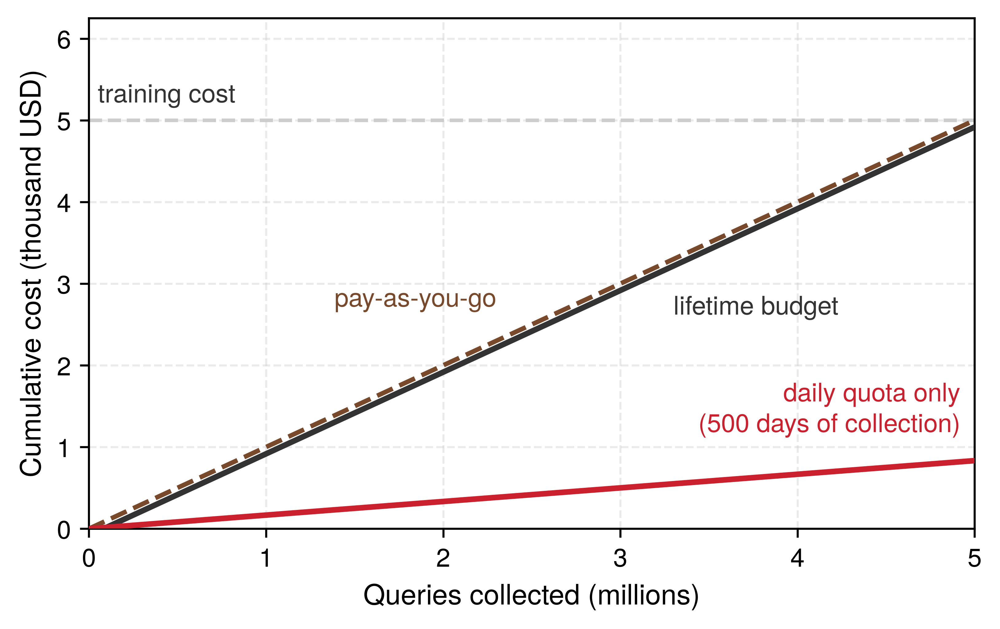
Содержание главы
Содержание
- 13 Безопасность и приватность
- 13.1 Расширенная поверхность атаки
- 13.2 Основы безопасности и приватности
- 13.3 Уроки инцидентов безопасности
- 13.4 Систематический анализ угроз и оценка рисков
- 13.5 Векторы атак, специфичные для модели
- 13.6 Внутрипарковые границы доверия
- 13.7 Аппаратные уязвимости безопасности
- 13.8 Комплексные архитектуры защиты
- 13.9 Дифференциальная приватность
- 13.10 Выбор и последовательность защит
- 13.11 Заблуждения и подводные камни
- 13.12 Итоги
13 Безопасность и приватность
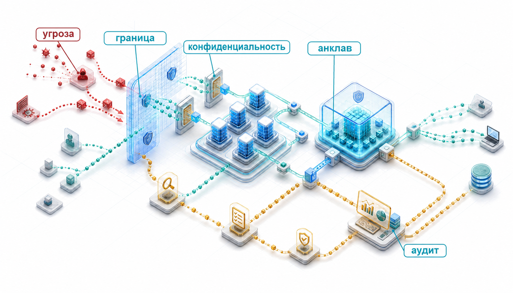
Назначение
Почему корректно работающий сервис машинного обучения всё равно может раскрыть чувствительную информацию или дать возможность атаки?
Многие полезные системы машинного обучения зависят от персональных данных, институциональных знаний или поведенческих закономерностей, что создаёт напряжение между полезностью и защитой. Модели могут кодировать чувствительную информацию и позднее раскрывать её через свои выходы, расширяя риск за пределы однократной обработки данных. Авторизованный запрос может выдать приватный обучающий пример, а принятые обучающие данные могут быть изменены так, чтобы повлиять на будущее поведение модели. В обоих случаях программное обеспечение может работать в точности как задумано, а сервис — нарушать свои границы. Поэтому защита одного сервера оставляет открытыми вопросы о том, что выучила модель, кто это предоставил и к чему могут подтолкнуть её вызывающие стороны. Масштабирование добавляет больше участников, копий, учётных данных и передач ответственности, часто между организациями с разными полномочиями. Мера, применённая на одной границе, может оставить другую открытой, а скомпрометированный участник способен повлиять на работу, разделяемую всем парком. Инженерное решение состоит в том, каким участникам доверять какую информацию и какие полномочия, а затем — как провести эти решения через обучение, релиз и эксплуатацию. Защита также расходует ресурсы: ограничение доступа усложняет координацию, проверка запросов добавляет работу, а ограничение выдаваемой информации может снизить полезность модели. Эти издержки должны укладываться в эксплуатационный бюджет сервиса так, чтобы при росте нагрузки меры защиты не становились необязательными. Высокопроизводительная модель может оказаться неразворачиваемой, если чувствительная информация или контроль выходят за задуманную границу. В терминах C³ Compute, Communication и Coordination должны сохранять не только пропускную способность, но и конфиденциальность, целостность и подотчётный контроль.
Цели обучения
- Различать безопасность и приватность в ML-системах через формальные определения, модели угроз и количественные компромиссы
- Объяснить, как корректно исполняющаяся модель может раскрыть запомненные обучающие данные через авторизованные выходы
- Проанализировать специфичные для ML векторы атак: кражу модели, отравление данных, состязательные примеры, обмен градиентами внутри парка и уязвимости оборудования
- Применить уроки исторических инцидентов и многоуровневую модель зрелости для приоритизации мер под модель угроз конкретного развёртывания
- Спроектировать многослойную защиту на уровнях данных, модели, среды исполнения и оборудования, взвешивая каждую меру по защищаемой границе доверия и по стоимости в вычислениях, коммуникациях или координации
- Указать входные данные учёта приватности (privacy accounting) и оценить заявленные бюджеты с учётом допущений о выборке, композиции и измеренной полезности
- Выбрать откат и криминалистические меры для подозрительной модели, проследив её происхождение по записи о релизе
13.1 Расширенная поверхность атаки
Парк обслуживания запросов может укладываться в целевую задержку, пока аутентифицированный клиент собирает достаточно ответов, чтобы скопировать поведение модели. Задача федеративного обучения может сходиться, пока участвующее устройство присылает отравленные обновления. Релизные ворота и иерархический мониторинг, управляющие парком, могут считать обе системы здоровыми, потому что скопированная модель и подсаженный бэкдор не обязаны сдвигать ни один сигнал доступности, задержки или агрегированного качества. Следовательно, операционная исправность сама по себе не доказывает безопасность. В стеке парка (Рисунок 4) полоса управления начинается со строки Assurance, которая расположена прямо над Operations и которую эта глава разделяет с Надёжный ИИ. Эта строка должна сохранять конфиденциальность, целостность и доступность парка через те же интерфейсы, которые делают возможными распределённое обучение и обслуживание.
Выбор защиты начинается с определения защищаемого актива, субъекта, который ему угрожает, доступа этого субъекта и границы, которую доступ не должен пересекать. Клиент API может наблюдать ответы; участник обучения может присылать обновления; администратор хоста может инспектировать состояние среды исполнения. Этим возможностям нужны разные меры контроля. Разборы инцидентов делают эти отказы границ конкретными, модель угроз превращает их в явные допущения, а описанные далее механизмы проводят эти допущения в жизнь за измеримую стоимость в вычислениях, коммуникациях и координации.
Злоумышленник может украсть записи из базы данных, изменить их или нарушить доступ к ним. Машинное обучение добавляет выученное представление, через которое эти отказы могут распространяться. Противник может прозондировать модель в поисках запомненных обучающих примеров или отравить её обучающие данные, чтобы внедрить бэкдор, срабатывающий по выбранному триггеру. Защита хранимых записей, следовательно, не защищает полностью ни выученное из них поведение, ни информацию, выдаваемую через предсказания.
Утечка выученной информации следует из различия между однократной обработкой и постоянным обучением. Многие приложения обрабатывают чувствительные данные, не кодируя их в выученные параметры; системы машинного обучения могут сохранять закономерности из обучающих данных в параметрах модели. Чувствительная информация может остаться в модели после того, как исходная обработка завершилась, и стать доступной через выходы или систематическое зондирование. Запросы к модели в здравоохранении могут выдать запомненную информацию о пациентах, а запросы к проприетарной модели — раскрыть достаточно поведения, чтобы обучить её замену. Первое угрожает приватности обучающих данных (Глава 13.5.2); второе — конфиденциальности модели.
Эксплуатационные платформы управляют сотнями моделей на распределённой инфраструктуре, расширяя поверхность атаки на воркеры, устройства и административные домены. В синхронном обучении с параллелизмом по данным один скомпрометированный воркер вносит прямой вклад в градиент, который применяет каждая реплика, и коллективный трафик переносит этот вклад через обучающий fabric. Его конфиденциальность зависит от мер изоляции и шифрования fabric. Федеративная агрегация создаёт ещё одну границу наблюдения, потому что обновления модели могут раскрывать информацию, даже если сырые записи остаются на устройствах. Ускорители и кэши, разделяемые между арендаторами, добавляют риски извлечения и утечки, существующие и на одной общей машине. Глава 13.6 развивает эти внутренние границы парка. Масштабирование системы требует определить, какие субъекты могут наблюдать или изменять каждый обмен.
↩︎ Мультиарендные платформы и требуемая ими изоляция описаны в Мультиарендность и изоляция.
Архитектурная сложность усугубляет эти проблемы. Современное ML-развёртывание охватывает конвейеры приёма данных, распределённую обучающую инфраструктуру, системы обслуживания моделей и фреймворки непрерывного мониторинга, каждый из которых привносит свои уязвимости, как Рисунок 1 показывает по всему жизненному циклу ML. Непрерывная адаптация на граничных узлах и протоколы федеративной координации добавляют дополнительные точки входа, каждая со своими допущениями о доверии.
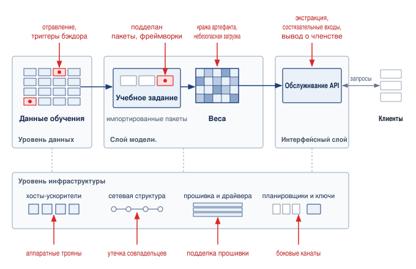
13.2 Основы безопасности и приватности
Защита начинается с разделения двух вопросов, которые часто используют один и тот же словарь. Безопасность спрашивает, как противник может украсть, подменить или вывести парк из строя; приватность спрашивает, как чувствительная информация может утечь или быть выведена, даже когда система работает в точности как задумано. Сохранение раздельности этих вопросов определяет, какие меры относятся к какому слою: аутентификация и изоляция — вокруг состязательных путей, провенанс и мониторинг — вдоль релизной цепочки, а учёт приватности — везде, где выученные параметры несут следы породивших их данных.
13.2.1 Определение безопасности
Первая половина этого разделения — безопасность, которая защищает параметры модели, обучающие конвейеры, инфраструктуру развёртывания и интерфейсы инференса от намеренного состязательного поведения. Атакующий, размещающий состязательную наклейку на знаке «Стоп», крадущий веса модели из неавторизованного бакета или заваливающий генеративный эндпоинт запросами, максимизирующими затраты, нарушает целостность, конфиденциальность или доступность системы.
Определение 13.1: Безопасность
Безопасность — это набор свойств системы (конфиденциальность, целостность и доступность), защищающих данные МЛ-системы, веса модели и конвейер инференса от намеренных действий противника, охватывающий как уровень инфраструктуры (сетевые вторжения, кража учётных данных), так и алгоритмический уровень (извлечение модели, инъекция в промпт, состязательные примеры).
- Значимость: Сбои безопасности действуют на обеих поверхностях одновременно. На уровне инфраструктуры кража крупной проприетарной модели — это прямая потеря интеллектуальной собственности. На алгоритмическом уровне извлечение модели через black-box запросы может восстановить границы принятия решений или дистиллировать функциональную аппроксимацию развёрнутой модели за малую долю стоимости её обучения (Глава 13.5.1 оценивает объёмы запросов), обходя вложенные инвестиции и конкурентный барьер. Любой из этих сбоев передаёт ценность исходных вложений в обучение атакующему, не требуя от него оплаты вычислительных затрат.
- Отличие: Безопасность предполагает намеренного противника и границы, которые этот субъект может пересечь. Робастность оценивает, как меняется поведение модели при заданных возмущениях, включая как случайные сдвиги, так и состязательные входы; эти две задачи пересекаются, когда возмущение исходит от атакующего.
- Типичная ошибка: Распространённое заблуждение состоит в том, что традиционная ИТ-безопасность (межсетевые экраны, контроль доступа, шифрование) достаточна для защиты МЛ-систем. МЛ добавляет алгоритмическую поверхность атаки, ортогональную инфраструктуре: должным образом аутентифицированный API-запрос, содержащий состязательный вход или инъекцию в промпт, обходит все защиты сетевого уровня и манипулирует поведением модели через её собственные выученные функции.
Например, система распознавания лиц, развёрнутая в общественной транспортной инфраструктуре, может подвергнуться атаке с помощью состязательных входов, из-за которых она неверно идентифицирует людей или полностью откажет, — это уязвимость безопасности времени исполнения, угрожающая и точности, и доступности системы. Триада «конфиденциальность — целостность — доступность» важна, потому что каждое свойство защищает свой контракт системы. Конфиденциальность защищает доступ к данным и модели. Целостность защищает корректность поведения при обучении и инференсе. Доступность защищает сервис от отключения или деградации, когда он нужен.
13.2.2 Определение приватности
Тогда как безопасность противостоит состязательной манипуляции и несанкционированному доступу, приватность ограничивает раскрытие и выведение (инференс) чувствительной информации в обучающих данных, входах инференса и выходах модели. Авторизованный пользователь, запрашивающий клинический классификатор или языковую модель, может извлечь чувствительный диагноз пациента или дословную персональную запись, ни разу не взломав межсетевой экран и не украв пароль. Поэтому защита приватности должна учитывать непреднамеренное раскрытие при обычной эксплуатации. Она должна учитывать и активных противников, которые подбирают запросы, комбинируют выходы со вспомогательной информацией или эксплуатируют повторные публикации, чтобы вывести чувствительные факты.
Определение 13.2: Конфиденциальность
Приватность — это защита чувствительной информации от несанкционированного раскрытия, выведения и злоупотребления на протяжении всего жизненного цикла МЛ.
- Значимость: Она ограничивает риск раскрытия обучающих данных и пользовательских входов. Дифференциально приватное обучение вводит компромисс между полезностью и приватностью: более строгие границы приватности обычно требуют больше шума или данных, что может увеличить вычислительные затраты на обучение — слагаемое
закона парка (Уравнение (3)), — необходимые для достижения целевой полезности. - Отличие: В отличие от конфиденциальности (сфокусированной на контроле доступа), приватность в МЛ сфокусирована на рисках выведения: способности пользователя, оператора или противника вывести чувствительные факты или восстановить обучающие выборки по выходам модели, весам или повторным публикациям.
- Типичная ошибка: Распространённое заблуждение состоит в том, что для приватности достаточно удаления имён (деидентификация). В действительности нейронные сети — это механизмы корреляций, которые могут невольно запоминать и раскрывать уникальные фрагменты чувствительных данных через высокоразмерные паттерны.
Сбои приватности не ограничиваются сырыми записями и явными идентификаторами. Агрегированные поведенческие трассировки могут раскрыть чувствительные routine, когда окружающая география делает людей и объекты легко выводимыми. Дифференциальная приватность (DP) ограничивает, насколько может измениться распределение публикуемых результатов при изменении одной защищаемой записи. Механизмы могут достигать этой гарантии посредством калиброванной рандомизации, например добавления шума к результату запроса. Защищаемая запись может быть одной записью или всеми записями одного человека; гарантия должна уточнять, что именно. Стоимость в терминах полезности зависит от задачи, данных, механизма и процедуры обучения.
Дифференциальная приватность даёт гарантию на уровне одного механизма; сама по себе она не даёт приватности всего жизненного цикла. Система всё равно должна минимизировать сбор данных, установить надлежащее основание для их использования, применять контроль доступа, ограничивать срок хранения, выполнять обязательства по удалению и не допускать утечки сырых входов и чувствительных выходов через логи и кэши. Эти средства отвечают на вопросы, которых не решает формальная граница приватности: следовало ли вообще собирать эти данные, кто вправе их использовать, как долго сохраняются производные артефакты и какие копии нужно удалить. Производственная приватность, следовательно, сочетает формальный учёт с механизмами управления данными на этапах сбора, обучения, обслуживания, телеметрии и вывода из эксплуатации.
Перед формальным изложением дифференциальной приватности главе нужен лишь один параметр — бюджет приватности
13.2.3 Безопасность и приватность
Безопасность и приватность пересекаются в таких средствах, как шифрованное хранилище, но различаются целями, моделями угроз и стратегиями смягчения. Шифрование обучающего хранилища больницы не позволяет внешнему атакующему украсть файлы, однако модель, обученная на этом хранилище, всё ещё может через обычный авторизованный запрос предсказания выявить, был ли конкретный пациент в когорте. Эти различия безопасности и приватности важны, потому что две области оптимизируются под разные режимы отказа. Их различающиеся цели проходят сквозь типичные проблемы, примеры атак, защиты, которые должен учитывать практик, и регуляторный статус (Таблица 1).
| Аспект | Безопасность | Приватность |
|---|---|---|
| Главная цель | Предотвратить несанкционированный доступ или нарушение работы | Ограничить раскрытие чувствительной информации |
| Модель угроз | Состязательные субъекты (внешние или внутренние) | Пассивное раскрытие и активное выведение со вспомогательной информацией |
| Типичные проблемы | Кража модели, отравление, атаки обхода | Утечка данных, реидентификация, запоминание |
| Пример атаки | Состязательные входы вызывают неверную классификацию | Model inversion выводит чувствительные свойства обучающих данных |
| Представительные защиты | Контроль доступа, состязательное обучение | Дифференциальная приватность; федерация с учитываемыми механизмами приватности |
| Связь с регулированием | Акцент в стандартах кибербезопасности | Центрально для законов о защите данных (например, GDPR) |
Системный взгляд 13.1: Компромисс конфиденциальности и полезности
Безопасность и приватность глубоко взаимосвязаны, но не взаимозаменяемы. Безопасная система помогает поддерживать приватность, ограничивая несанкционированный доступ к моделям и данным. Конструкции, сохраняющие приватность, могут улучшать безопасность, сокращая поверхность атаки; минимизация хранения чувствительных данных снижает риск их раскрытия в случае компрометации системы.
Однако их механизмы могут предъявлять конкурирующие требования. Дифференциальная приватность ограничивает информацию, раскрываемую публикацией, но может снижать полезность модели. Шифрование ограничивает круг тех, кто может просматривать защищённые данные, поэтому аудит, которому нужны эти данные, требует авторизованного пути инспекции и надлежащего хранения ключей. Конструкция должна сохранять полезные свидетельства, ограничивая то, что эти свидетельства раскрывают.
Таким образом, безопасность и приватность ограничивают одну и ту же систему разными границами. Контроль доступа, криптография, доверенное исполнение и дифференциальная приватность отвечают за разные режимы отказа; их сочетание должно защищать активы модели, ограничивать раскрытие данных и сохранять свидетельства, необходимые для расследования сбоев. Истории взломов делают эти границы конкретными, показывая, как агрегированные публикации, скомпрометированные компоненты и избыточный доступ могут раскрыть информацию или изменить поведение системы.
13.3 Уроки инцидентов безопасности
Публичная тепловая карта, созданная для бегунов, стала утечкой военной разведки, когда разреженные GPS-трассы очертили перемещения вокруг чувствительных объектов. Этот сбой приватности стоит рядом с тремя знаковыми инцидентами безопасности, потому что каждый случай превращает абстрактную цель защиты в операционное ограничение. Поведенческая телеметрия может идентифицировать людей. Компрометация цепочки поставок может изменить физические системы. Слабая изоляция может раскрыть пути управления, критичные для безопасности. Учётные данные по умолчанию могут превратить дешёвые устройства в инфраструктуру атак. Хотя большинство этих инцидентов не были направлены на МЛ-системы напрямую, каждый продемонстрированный режим отказа имеет прямой аналог в обучающих конвейерах, API инференса, развёртываниях на периферии и продуктах данных, сохраняющих приватность. Тепловая карта Strava 2018 года показывает, как агрегированная публикация данных может дать сбой по приватности без единого вторжения в систему безопасности. Три инцидента безопасности, о которых пойдёт речь далее, отражают сбои цепочки поставок, изоляции и конечных точек.
Практический случай 13.1: Тепловая карта, раскрывшая повседневные маршруты (2018)
Контекст: В конце января 2018 года общественное внимание к глобальной тепловой карте активности Strava — агрегату, построенному по загруженным пользователями GPS-трассам, — показало, что она раскрывает активность на военных базах (Russell 2018 г.). Публикация показывала паттерны перемещений, не выводя список названных участников.
Механизм: Агрегация скрывает отдельных людей лишь там, где вклад вносят многие. В малонаселённых регионах несколько ярких трасс в основном принадлежали военным, занимавшимся спортом на базах и вокруг них, поэтому тепловая карта вычерчивала периметры баз и маршруты пробежек — даже там, где расположение объекта было известно заранее.
Влияние: Карта выявила риск операционной безопасности в потребительской телеметрии. Агрегат, задуманный, чтобы помогать людям находить маршруты тренировок, также сообщал наблюдателю, где военнослужащие перемещаются регулярно, что повлекло пересмотр правил использования фитнес-устройств вблизи чувствительных объектов.
Реакция в дизайне: Система, публикующая геолокационные агрегаты, должна оценивать, что раскрывают разреженные регионы, ограничивать чувствительные вклады и делать понятными механизмы управления участием. Это проектные требования, подсказанные инцидентом, а не доказательство того, что какое-то конкретное изменение продукта устранило риск.
Урок для систем: Сбои приватности возможны без утечки имён, паролей или весов модели. Сама по себе агрегация не создаёт приватности, когда опубликованный паттерн и его контекст раскрывают чувствительное поведение.
13.3.1 Stuxnet и компрометация цепочки поставок
Обнаруженный в 2010 году червь Stuxnet использовал четыре уязвимости нулевого дня (дефекты, неизвестные производителю и потому неустранённые) в своих механизмах заражения и распространения, включая распространение через заражённые USB-носители. Он поражал ПО Siemens Step7 и управляемые им программируемые логические контроллеры (ПЛК) в промышленных системах, включая изолированную от сети (air-gapped)1 среду ядерного объекта в иранском Натанзе (Farwell и Rohozinski 2011 г.). Изменённое поведение управления при внешне нормальной телеметрии показало, что сигналы операционного здоровья могут скрывать компрометацию. Аналогичный сбой МЛ происходит, когда отравленные обучающие данные или модель с бэкдором меняют отдельные предсказания, пока сервер инференса продолжает соответствовать целевым задержке и доступности. Общий механизм — нарушение поведенческой целостности, которое обычный мониторинг работоспособности сервиса не обязан обнаруживать.
Цепочки поставок МЛ, потребляющие публичные пакеты, датасеты, веса моделей или прошивки, сталкиваются с четырьмя аналогичными векторами: скомпрометированные зависимости (вредоносные пакеты в репозиториях PyPI и conda), отравленные датасеты на публичных платформах, веса моделей с бэкдорами в репозиториях моделей и изменённая прошивка ускорителей. Каждый вектор может внедрить поведение через артефакт, который конвейер принимает. Поскольку поведение модели зависит от каждого участника её данных, кода, весов и оборудования, модели можно доверять ровно настолько, насколько простирается верифицируемая запись об этих участниках. Это граница доверия через происхождение (provenance bound on trust, принцип «Происхождение ограничивает доверие»), и она переносит урок Stuxnet на каждый артефакт, который допускает МЛ-конвейер. Подписи артефактов (криптографические проверки, показывающие, какой держатель ключа создал артефакт и что он не менялся с тех пор) и неизменяемые логи происхождения устанавливают свидетельства происхождения и целостности; контролируемый допуск зависимостей ограничивает, какие артефакты попадают в конвейер. Поведенческое тестирование отвечает на другой вопрос, потому что подлинный неизменённый артефакт всё ещё может содержать бэкдор. У каждого этапа цепочки атаки Stuxnet есть аналог в цепочке поставок МЛ (Рисунок 2).
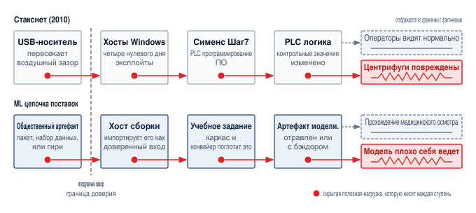
13.3.2 Недостаточная изоляция во взломе Jeep Cherokee
Специалисты по безопасности дистанционно скомпрометировали системы двигателя, трансмиссии и торможения Jeep Cherokee, эксплуатируя уязвимость в подключённой к интернету развлекательной системе Uconnect, без физического доступа к автомобилю (Miller и Valasek 2015 г.; Miller 2019 г.). Недостаточная изоляция позволила скомпрометированной развлекательной системе добраться до контроллеров шины CAN, отвечающих за безопасность, и управлять функциями автомобиля.
Урок для машинного обучения касается полномочий через границу доверия. Моделям восприятия или диагностики может требоваться связь с контроллерами исполнительных механизмов, но компрометация доступного извне компонента инференса не должна давать неограниченные полномочия управления. Сегментация сети, аутентифицированные узкие шлюзы, изолированное (sandboxed) исполнение моделей и минимальные привилегии ограничивают этот путь. Контроллеры должны проверять допустимость команд и применять специфичный для системы безопасный отклик, когда входные данные некорректны или связь нарушена; сетевой путь делает атаку возможной лишь в том случае, если контроллер принимает то, что по нему приходит.
13.3.3 Оружейные конечные точки и ботнет Mirai
В 2016 году ботнет Mirai эксплуатировал слабые учётные данные устройств Интернета вещей (IoT) — камер, цифровых видеорегистраторов и маршрутизаторов — для создания инфраструктуры распределённых атак типа «отказ в обслуживании» (DDoS). Продольное исследование Mirai зафиксировало пик примерно в 600 000 заражений и задокументировало атаки на сервисы, включая Dyn, сбой которого затронул другие интернет-сервисы (Antonakakis и др. 2017 г.). Урок о масштабировании состоит в том, что множество по отдельности ограниченных устройств способны коллективно угрожать значительно более крупным сервисам.
Для развёртываний ML на периферии скомпрометированная конечная точка может раскрыть больше, чем пропускную способность. Доступные ей записи могут включать изображения или расшифровки, а её зарегистрированная идентичность в федеративном обучении — позволить злоумышленнику отправлять вредоносные обновления. Защита должна соответствовать этим возможностям. Индивидуальные для устройства учётные данные ограничивают экспозицию общих секретов, аутентифицированные зашифрованные каналы защищают обмен данными, а защищённая загрузка (secure boot) ограничивает, какое загрузочное ПО принимается. Модули аппаратной безопасности (HSM) — устройства, устойчивые к вскрытию, которые хранят ключи и выполняют криптографические операции, не раскрывая ключи памяти хоста, — могут защищать хранение ключей там, где платформа их поддерживает. Мониторинг даёт свидетельства злоупотребления, а проверка обновлений остаётся необходимой, потому что аутентифицированное устройство всё ещё может отправлять вредоносные данные.
Вместе инциденты Strava, Stuxnet, Jeep и Mirai вскрывают отказы на четырёх разных границах: агрегированная публикация данных, принимаемые компоненты, пути к критическому для безопасности управлению и учётные данные конечных точек. Инженерная задача — определить ценный актив и возможности злоумышленника на каждой границе до выбора средства защиты. Модель угроз делает эти допущения явными, так что защиты можно оценивать по тем отказам, которые они должны предотвратить, и по ресурсам, которые они потребляют.
13.4 Систематический анализ угроз и оценка рисков
Аутентифицированный запрос всё ещё может выведывать у модель запомненные данные, а принятый обучающий пример — нести бэкдор. Поэтому сетевой безопасности и аутентификации пользователей нужна модель угроз, охватывающая обученное поведение. Обучающие данные могут быть изменены для внедрения бэкдоров, возмущения входных данных — эксплуатировать выученные границы решений, а систематические запросы к API — раскрыть достаточно поведения, чтобы обучить модель-заменитель. Каждая атака использует интерфейс, который системе нужен для обычной работы.
Каждый из этих векторов требует формальной модели угроз, записанной в виде четырёх полей: актив, граница, злоумышленник и защита. Актив определяет, что должно оставаться конфиденциальным, целостным или доступным. Граница определяет, где меняется доверие: между обучающими данными и реестром моделей, пользовательским промптом и системной инструкцией или нагрузкой арендатора и общим ускорителем. Поле «злоумышленник» фиксирует возможности актора (что он может получить доступ, наблюдать или изменить) и его цель (что он стремится скомпрометировать). Защита указывает разрешение, механизм изоляции или наблюдаемый сигнал, которые ограничивают атаку или поддерживают реагирование. Без этих полей матрица рисков не может объяснить, почему конкретная защита заслуживает ресурсов. Стоимость атаки и ожидаемая выгода помогают оценить осуществимость, но модель должна также охватывать акторов, чья цель — разрушение, а не финансовая отдача.
Для раунда федеративного обучения предположим, что координатор может инспектировать сообщения, но следует протоколу агрегации, а скомпрометированный зарегистрированный клиент может отправить произвольное обновление. Одно и то же обновление пересекает две границы. Сокрытие индивидуальных вкладов от координатора касается конфиденциальности; проверка или ограничение вклада клиента касается целостности. Аутентификация клиента устанавливает, кто отправил обновление, но не то, безопасно ли оно. Сравнение защит имеет смысл только после указания того, какие из этих акторов, возможностей и возможных сговоров оно охватывает.
13.4.1 Моделирование угроз безопасности для ML-систем
Систематическое моделирование угроз определяет, что необходимо защитить и от кого. Это структурированный подход к анализу безопасности, который характеризует поверхность атаки и направляет вложения в защиту. Для систем машинного обучения моделирование угроз должно учитывать зависимость от обучающих данных, статистические границы решений и распределённые схемы развёртывания.
Анализ поверхности атаки
Поверхность атаки ML-системы охватывает все точки, где злоумышленник может взаимодействовать с системой или наблюдать её. Она включает риски жизненного цикла обычного ПО, такие как скомпрометированные зависимости, а также данные и обученное состояние, определяющие поведение модели. Декомпозиция этой поверхности на слои данных, модели, интерфейса и инфраструктуры выявляет, где средство защиты может ограничить злоумышленника и что остаётся незащищённым за его пределами.
Конвейер обучающих данных позволяет злоумышленнику влиять на поведение ещё до появления модели. В точках сбора сырые данные поступают через журналы приложений, датчики, формы, API или загрузки. Обучающие корпуса затем размещаются в объектных хранилищах, хранилищах данных, хранилищах признаков (feature store) или реестрах датасетов. Конвейеры предобработки нормализуют, фильтруют, аугментируют и соединяют эти входы, а ручная разметка, правила слабой разметки или разметка с помощью моделей поставляют целевые значения для обучения. Манифесты датасетов и системы происхождения данных определяют, какой снимок попадает в релиз. Скомпрометированный источник может влиять на последующие версии модели, если конвейер продолжает принимать его записи, а бэкдор может сохраниться, если обучение повторно использует затронутую контрольную точку (checkpoint). Поэтому одно лишь переобучение не гарантирует, что скомпрометированный вклад удалён.
Сама модель имеет несколько поверхностей атаки: инфраструктура обучения, хранилище и версионирование моделей, код сериализации и десериализации моделей, управление конфигурацией гиперпараметров, а также процессы вычисления и агрегации градиентов. Атаки на уровне модели могут нарушить целостность, внедряя трояны во время обучения, извлечь интеллектуальную собственность через кражу параметров или изменить поведение через отравление весов.
Развёрнутые модели открывают дополнительные поверхности атаки через API-конечные точки инференса и балансировщики нагрузки, системы аутентификации и авторизации, логику валидации и предобработки входных данных, форматирование выходных данных и генерацию откликов, а также инфраструктуру мониторинга и журналирования. На этом уровне интерфейса проверки входов обеспечивают соблюдение принятого контракта запросов, лимиты запросов ограничивают выведывание, а управление выходными данными ограничивает возвращаемую информацию. Вредоносный вход может удовлетворять контракту запросов, и разрешённый отклик всё ещё может раскрывать полезные сведения о поведении модели, поэтому эти меры защиты нужно оценивать относительно заданной атаки.
Базовая вычислительная инфраструктура представляет традиционные поверхности атаки, усиленные спецификой ML: прошивки и драйверы ускорителей, оркестрация контейнеров и планирование, сетевое взаимодействие между узлами распределённого обучения, управление ключами и секретами, а также цепочка поставок ML-фреймворков и зависимостей. Компрометация инфраструктуры может затронуть все системы на общих ресурсах, что делает этот слой критическим для многоарендных ML-платформ.
Классификация векторов угроз
Классификация векторов угроз важна потому, что одна и та же ошибка модели требует разных защит, когда у злоумышленника есть только доступ через API, частичное знание устройства или полный инсайдерский доступ. Три оси — тип доступа, вспомогательное знание и момент атаки.
Тип доступа определяет, как злоумышленник может инспектировать модель или взаимодействовать с ней. При доступе «чёрный ящик» доступный интерфейс возвращает выходы для поданных входов. Он может поддерживать извлечение модели (Tramèr и др. 2016 г.) и состязательные атаки на основе запросов или переноса (Papernot и др. 2016 г.) без раскрытия параметров цели. Доступ «серый ящик» добавляет частичную внутреннюю информацию, например архитектуру или процедуру обучения. Доступ «белый ящик» предоставляет параметры и архитектуру модели, открывая прямые атаки на основе градиента (которые следуют градиенту модели по её входу, чтобы найти малое изменение, меняющее выход) (Goodfellow и др. 2015 г.) и копирование параметров, когда файлы доступны. Эти метки описывают видимость модели; они не дают права изменять обучающие данные, заменять веса или модифицировать среду исполнения. Такие возможности записи должны указываться отдельно. Каждый уровень доступа, который в литературе также называют уровнем знания, имеет типичную атаку, которую он открывает, и типичное развёртывание, где он возникает (Таблица 2).
| Уровень знания злоумышленника | Доступ к модели | Доступ к обучающим данным | Пример атаки | Типичный сценарий |
|---|---|---|---|---|
| Белый ящик | Полный доступ к архитектуре и параметрам | Указывается отдельно | Создание состязательных примеров с помощью градиентов | Инсайдерские угрозы, переиспользование open-source моделей |
| Серый ящик | Частичный доступ (например, только архитектура) | Указывается отдельно | Атаки на основе аппроксимации суррогатной моделью | Известное семейство моделей, неизвестное дообучение |
| Чёрный ящик | Нет внутреннего доступа; только представление «запрос—ответ» | Указывается отдельно | Обучение суррогатной модели по запросам и атаки переноса | Публичные API, развёртывания «модель как сервис» |
Вспомогательное знание добавляет фоновую информацию, доступную помимо открытого интерфейса. Клиент «чёрного ящика» может знать предметную область приложения, публичную документацию по архитектуре или примеры, напоминающие обучающее распределение. Инсайдер может знать конфигурацию развёртывания, не имея возможности прочитать каждую обучающую запись. Видимость модели и вспомогательное знание поэтому перекрываются, но ни одно не заменяет явную опись того, что знает злоумышленник. Заявления о полном знании должны указывать, включают ли они обучающие записи, предобработку и настройки защит, а не только параметры модели.
Момент атаки определяет, где защита ещё может вмешаться на протяжении жизненного цикла системы. Атаки во время обучения, такие как отравление данных или внедрение бэкдора, манипулируют процессом обучения до создания артефакта модели. Атаки во время развёртывания компрометируют дистрибуцию модели, сериализацию или установку контейнера до начала обслуживания. Уже в производстве атаки во время инференса эксплуатируют развёрнутую модель через состязательные входы или запросы на извлечение. Наконец, атаки после развёртывания нацелены на онлайн-обновления модели, телеметрию мониторинга или эксплуатационные петли обратной связи после того, как модель уже в работе. Поверхность защиты поэтому движется синхронно с жизненным циклом модели: от контроля данных к целостности артефактов и к сдерживанию во время обслуживания.
Комбинация этих измерений определяет проверяемый сценарий угрозы. Злоумышленник через публичный API может запрашивать развёрнутый классификатор, знать его задачу и формат выходов и не иметь доступа к параметрам или обучающим записям. Инсайдер на обучении может инспектировать модель и изменять заданное подмножество примеров до начала обучения. Второй сценарий допускает отравление, потому что даёт возможность записи, а не потому, что злоумышленник знает о модели больше.
Каркас стратегии защиты
Эффективная защита от векторов угроз, выявленных моделью угроз, требует многослойной стратегии, которая охватывает каждую поверхность атаки с учётом возможностей злоумышленника. Каркас защиты строится на трёх принципах: эшелонированная защита (defense in depth), минимальная поверхность атаки и безопасные значения по умолчанию (fail-safe defaults).
Ни один отдельный защитный механизм не даёт полной защиты. Принцип эшелонированной защиты требует нескольких независимых слоёв, чтобы компрометация одного слоя не давала полного доступа к системе. Для ML-систем это означает сочетание валидации данных с техниками устойчивости моделей, контроля доступа с возмущением выходов, программных защит с аппаратными механизмами безопасности.
Принцип минимальной поверхности атаки рассматривает каждый открытый интерфейс, хранимый артефакт и сетевую конечную точку как потенциальную точку входа или наблюдения. API должен раскрывать только функциональность и точность выходов, нужные пользователям, поскольку детальные оценки дают дополнительные наблюдения за поведением модели. Шифрование при хранении защищает хранимые модели и обучающие корпуса, когда злоумышленник не может также получить их ключи. Разделение обучающих кластеров и конечных точек инференса ограничивает горизонтальное перемещение, а защищённые журналы доступа поддерживают расследование чувствительных операций. Каждая мера сокращает конкретную экспозицию; ни одна не устраняет необходимость исследовать оставшиеся пути.
Принцип безопасных значений по умолчанию делает доступ зависящим от установленного разрешения, а не от отсутствия обнаруженной угрозы. Запрос, который невозможно авторизовать, не должен получать привилегии из-за сбоя сервиса. Поведенческие аномалии требуют отдельной политики реагирования, поскольку они могут возникать и из легитимного трафика, и из сдвига распределения. В зависимости от приложения система может отклонить запрос, перейти к проверенному резервному варианту, приостановить релиз или изолировать затронутый компонент, сохраняя существенные функции. Безопасный отклик следует из последствий как продолжения работы, так и прерывания; его нельзя вывести только из оценки аномальности.
Каждый слой поверхности атаки требует собственных защитных механизмов и методов обнаружения (Таблица 3). Защита данных проверяет происхождение, защита модели оберегает изученное поведение и веса, защита API регулирует доступ к запросам, а защита инфраструктуры закрепляет доверие к среде исполнения.
| Поверхность атаки | Основные угрозы | Защитные механизмы | Методы обнаружения |
|---|---|---|---|
| Слой данных | Отравление, манипуляция метками, компрометация цепочки поставок | Валидация входных данных, отслеживание происхождения, защищённые конвейеры данных | Статистическое обнаружение аномалий, мониторинг качества данных |
| Слой модели | Внедрение бэкдоров, кража параметров, вставка троянов | Защищённые среды обучения, шифрование хранилища моделей, контроль доступа | Анализ поведения модели, мониторинг распределения весов |
| Слой API/интерфейса | Адверсариальные примеры, извлечение модели, инференс членства | Санитизация входных данных, ограничение частоты запросов, возмущение выходов, дифференциальная приватность | Анализ шаблонов запросов, мониторинг распределения уверенности |
| Слой инфраструктуры | Атаки по побочным каналам, компрометация прошивки, атаки на цепочку поставок | Доверенные среды исполнения (TEE), защищённая загрузка, сегментация сети, сканирование зависимостей | Мониторинг производительности аппаратного обеспечения, проверка целостности |
Поверхности атаки, векторы угроз и соответствие средств защиты вместе перечисляют, что может пойти не так, и какой механизм закрывает каждую из проблем. Они не говорят, какую проблему устранять первой, — ни одно развёртывание не может профинансировать все механизмы сразу.
13.4.2 Рамка приоритизации угроз
Команда, месяцами укрепляющая защиту от физического лазерного внедрения отказов, но оставляющая публичный инференс-API без бюджетов запросов или загружающая недоверенные pickle-контрольные точки (формат файлов Python, способный при загрузке выполнить произвольный код) из публичного хаба, оставляет широко открытыми свои самые вероятные пути атаки. Приоритизация ранжирует перечисленные угрозы по тому, насколько каждая вероятна в данном развёртывании и какой ущерб она способна причинить. Влияние не сводится к технике. Регуляторные обязательства повышают цену одних отказов по сравнению с другими: например, запрос на удаление данных по Общему регламенту защиты данных Европейского союза (GDPR)2 обязывает оператора отслеживать персональные данные через производные наборы данных, журналы и развёрнутые артефакты. Матрица приоритизации на основе вероятности и влияния превращает модель угроз в решение о распределении ресурсов. Команды автоматизируют защиту от угроз, которые одновременно вероятны и разрушительны, готовятся к редким, но тяжёлым отказам и не тратят дефицитное инженерное время на малоценные механизмы.
Штрафы делают регуляторную часть влияния осязаемой. В здравоохранении, где ML-системы регулярно работают с данными пациентов, нарушение может нарушать Закон о переносимости и подотчётности медицинского страхования (HIPAA), с серьёзными юридическими и этическими последствиями. Похожие регуляторные риски действуют во всём мире. Для персональных данных в пределах своего территориального и материального охвата GDPR разрешает штрафы до 2 процентов от общего годового мирового оборота, если организация не внедрила надлежащие меры безопасности, и до 4 процентов — за нарушение основных принципов обработки или прав субъектов данных (European Parliament и Council of the European Union 2016 г.).
Приведённые ниже размещения иллюстрируют модель угроз, а не универсальные частоты атак. Отравление может попасть в квадрант высокой вероятности и высокого влияния в федеративном развёртывании, которое принимает недоверенных участников и несёт тяжёлые последствия от манипулированных предсказаний. Такое развёртывание нуждается в контроле целостности обновлений и в пути реагирования на подозрение в компрометации. Извлечение с высокой вероятностью и низким влиянием описывает иной сценарий: публичные запросы доступны, но поведенческое копирование создаёт ограниченные конкурентные потери. Ограничения на выходы и бюджеты запросов могут тогда быть соразмерными мерами, хотя их эффективность всё равно требует оценки.
Квадранты с более низкой вероятностью получают иное обращение. Атаки по аппаратным побочным каналам с низкой вероятностью и высоким влиянием описывают развёртывание, где получение необходимых наблюдений затруднено, но успешная атака могла бы раскрыть ценные секреты. Требуемый доступ зависит от канала: одни атаки используют физический зонд, другие эксплуатируют разделяемые ресурсы или удалённо наблюдаемые тайминги. В сценарии публичного API, использованном для этой матрицы, атаки инференса членства, проверяющие, была ли конкретная запись в обучающем наборе (Глава 13.5.2.1), могут оказаться в квадранте с более низкой вероятностью и влиянием, чем прямые нарушения целостности. Это размещение нужно пересматривать, когда обучающие данные чувствительны или выставляемые выходы облегчают вывод членства. Матрица фиксирует допущения развёртывания, а не присваивает каждой семье атак постоянный ранг.
Рамка направляет распределение ресурсов, как резюмирует Рисунок 3. Пример ставит доступные угрозы модели и данным впереди более специализированных аппаратных атак. Развёртывание с чувствительными соседями по хостингу или выставленным граничным устройствам может требовать иного порядка. Решение о распределении зависит от ожидаемого вреда, эффективности механизма и его инженерной стоимости, а не от категории атаки самой по себе.
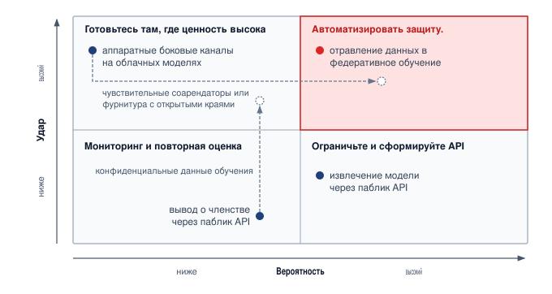
Контрольная точка 13.1: Проверка знаний: моделирование угроз
Команда обнаруживает высокий объём запросов к API с одного IP-адреса, систематически исследующих границу решений модели детекции мошенничества.
Необычный шаблон запросов — повод для расследования, а не доказательство извлечения. Модель угроз связывает это наблюдение с возможностями злоумышленника и с активом, находящимся под риском. Конкретные механизмы атак затем объясняют, как доступ к данным, артефактам или предсказаниям может скомпрометировать модель.
13.5 Векторы атак, специфичные для модели
Дорожный знак «стоп» с стратегически размещёнными чёрно-белыми наклейками может оставаться узнаваемым для человека, в то время как проверяемый классификатор изображений распознаёт его как знак ограничения скорости. Злоумышленник изменяет наблюдаемый вход, а не код классификатора или сохранённые веса. Этот адверсариальный пример иллюстрирует, почему точка входа в жизненный цикл имеет значение. Обучающие данные, артефакты модели и входы среды исполнения дают злоумышленнику разные способы повлиять на систему и требуют контроля на разных границах.
Точка входа в жизненный цикл разделяет пять целей. Кража модели направлена на конфиденциальность: получить артефакты или воспроизвести поведение по запросам. Утечка выходов направлена на обучающие данные, которые те же запросы могут раскрыть через предсказания, которые сервису разрешено возвращать. Отравление направлено на целостность обучения, изменяя то, чему учится модель. Адверсариальные примеры направлены на развёрнутое поведение, изменяя входы, которые получает модель. Злоупотребление доступностью использует тот же интерфейс обслуживания, чтобы исчерпать вычислительный и стоимостной бюджет сервиса, а не изменить какое-либо предсказание. Поэтому отравление данных требует вмешательства в конвейер обучения, тогда как адверсариальные входы и злоупотребление доступностью требуют контроля над развёрнутым сервисом.
Если записать это как четырёхполевую модель угроз из Глава 13.4, цели различаются главным образом активом и возможностями злоумышленника. Кража нацелена на веса или поведение и требует либо доступа к артефактам, либо доступа по запросам; утечка выходов нацелена на обучающие данные, не требуя ничего сверх доступа по запросам. Отравление нацелено на целостность обучения и требует права записи в то, чему модель учится. Адверсариальные входы нацелены на развёрнутые решения и требуют контроля над входом, а злоупотребление доступностью нацелено на бюджет обслуживания и не требует ничего, кроме учётной записи. Эти цели связывают анализ поверхности атаки из Глава 13.4.1 с механизмами, доступными до обучения, при обработке артефактов и на инференсе, а Глава 13.5.5 рассматривает, как архитектуры токен-потоков объединяют инструкции, недоверенный контент и извлечённые данные через эти цели.
Эти точки входа находятся на разных этапах жизненного цикла ML (Рисунок 4). В верхней части конвейера злоумышленник может внедрить примеры или изменить метки в источнике данных, который принимает конвейер. Бэкдор может затем оставаться неактивным на обычных оценочных входах и активироваться по выбранному триггеру. В нижней части развёрнутые файлы открывают границу доступа к артефактам, а API предсказаний — границу запросов. Адверсариальный вход пересекает последнюю, не требуя от злоумышленника изменения конвейера обучения.
Механизмы защиты должны действовать в соответствующей точке входа и сохранять свои допущения на последующих этапах. Валидация данных ограничивает то, что попадает в обучение; контроль артефактов аутентифицирует то, что загружает развёртывание; механизмы обслуживания ограничивают запросы и возвращаемую информацию. Ни один из них сам по себе не устанавливает поведенческую корректность; модель угроз определяет, какую атаку должен выдержать каждый механизм.
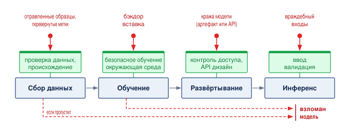
13.5.1 Кража модели
Конкурент, потративший несколько тысяч долларов на запросы к публичному API для обучения суррогатной модели, или инсайдер, скопировавший незашифрованные веса из бакета, может воспроизвести модель, на обучение которой ушло несколько миллионов долларов (Oliynyk и др. 2023 г.). Кража модели — первая из этих пяти целей — атакует конфиденциальность, восстанавливая параметры обученной модели, её архитектуру или поведение на выходе, подрывая её экономическую ценность или раскрывая приватную информацию, закодированную в весах.
Такие угрозы возникают в широком спектре сценариев развёртывания, включая публичные API, облачные сервисы, инференс-движки на устройствах и общедоступные репозитории моделей. Интерфейсы предсказания могут утекать достаточно сигнала, чтобы восстановить функциональность модели (Tramèr и др. 2016 г.; Oliynyk и др. 2023 г.), а выходы классификаторов — раскрыть содержательную информацию об обучающих выборках или выученной структуре (Ateniese и др. 2015 г.). Обращение с артефактами создаёт отдельные риски. Небезопасная десериализация3 может исполнить подставленный атакующим код, а недостаточный контроль доступа способен напрямую раскрыть файлы модели или пакеты развёртывания.
Кража модели преследует две различные цели, каждая из которых требует своих мер защиты (Рисунок 5). Точное хищение артефакта получает файл модели или артефакт развёртывания через доступ к хранилищу, реестру или устройству. Атакующий может переиспользовать recoveredRecovered веса, не повторяя их обучение. Приблизительное поведенческое хищение использует ответы API — метки, логиты, эмбеддинги или оценки уверенности — для обучения суррогата. Оно может эксплуатировать разрешённые запросы, не взламывая аутентификацию. Литература называет это направление на основе запросов несколькими способами. Model extraction (извлечение модели) и model stealing (кража модели) — синонимы самой атаки, тогда как model distillation (дистилляция модели) называет её обычный шаг обучения, в котором суррогат учится на выходах жертвы. Её обычный продукт — поведенческий суррогат, но тот же доступ через запросы может восстановить и отдельные внутренние параметры — третий исход, который демонстрируют приводимые ниже результаты OpenAI. Шифрование, контроль доступа и защищённые пути развёртывания ограничивают доступ к артефактам; подписи отдельно подтверждают целостность артефактов. Ограничения на выходы, бюджеты запросов, аудит и ценообразование сдерживают поведенческое извлечение, а водяные знаки могут поддержать атрибуцию после копирования.
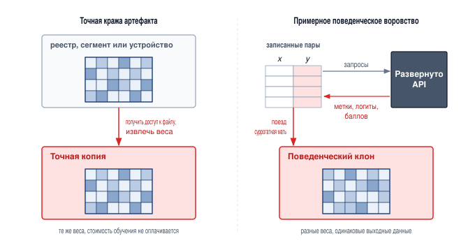
Определение 13.3: Извлечение модели
Извлечение модели (model extraction) — это класс атак, в которых противник, имея только доступ к интерфейсу предсказания развёрнутой модели в режиме чёрного ящика, восстанавливает параметры модели, границы принятия решений или её поведение, анализируя наблюдаемые выходы.
- Значимость: успешное извлечение зачастую обходится на порядки дешевле исходного обучения. Опубликованные демонстрации восстанавливали модели логистической регрессии, нейронные сети и деревья решений с публичных API машинного обучения с высокой точностью и скромной стоимостью запросов (Tramèr и др. 2016 г.). Более поздние работы восстанавливали компоненты больших языковых моделей, включая развёртывания OpenAI, изученные в Carlini и др. (2024 г.), используя только публичный доступ через запросы. Приведённый ниже пример извлечения BERT иллюстрирует ту же динамику на трансформерной модели, где копия обучается только на синтетических запросах.
- Различие: извлечение отличается от прямого хищения файлов модели (которое требует вторжения в слой хранения) и от инверсии модели (которая использует выходы модели, чтобы выводить свойства обучающих данных или восстанавливать репрезентативные входы, а не саму модель). Её поверхность атаки — интерфейс запросов модели, поэтому любая развёрнутая ML-служба подвергается ей по построению всюду, где модель доступна.
- Типичная ошибка: распространено заблуждение, что одного лишь ограничения частоты запросов достаточно для защиты. Атакующий, готовый отправлять запросы медленно, распределять запросы по множеству аккаунтов или допускающий многомесячное окно атаки, всё равно может извлечь полезное поведение. Сокращение информации в выходах, обнаружение систематического зондирования и платные запросы могут поднять стоимость атаки или раскрыть саму попытку, но их сочетание не гарантирует предотвращения.
Кража модели может также открывать атаки на информацию, закодированную моделью. Исследования извлечения демонстрируют восстановление полезного поведения или отдельных внутренних параметров, хотя эти исходы не подразумевают полного воспроизведения большой модели или её конвейера обучения (Tramèr и др. 2016 г.; Carlini и др. 2024 г.). Конкурент, завладевший украденной Archetype B (DLRM at Scale) — рекомендательной моделью, — получает её таблицы эмбеддингов, которые хранят выученный вектор для каждого значения каждого категориального признака. В рекомендательной системе такие признаки часто включают идентификаторы пользователей и предметов, поэтому украденные таблицы передают конкуренту вектор для каждого пользователя, сформированный историей этого пользователя, — естественную отправную точку для вывода атрибутов пользователя. Раскрывает ли это конкретные атрибуты клиентов, зависит от модели, доступных признаков и дополнительной информации. Атаки инверсии модели исследуют эту границу, пытаясь вывести чувствительные свойства входов из обученной модели (Глава 13.5.2.2).
Пример 13.1: Извлечение модели BERT
Сценарий: проприетарные языковые модели, развёрнутые за публичными инференс-API, возвращают полные векторы вероятностей и оценки уверенности на запросы клиентов (Krishna и др. 2020 г.).
Диагноз: атакующему не понадобились реальные обучающие данные. Поскольку и жертва, и копия были дообучены (fine-tuned) из одной и той же публично выпущенной предобученной BERT, запросы из случайных последовательностей слов, сформированных простыми эвристиками под конкретную задачу, дали достаточно размеченных выходов, чтобы обучить студента. Этот студент восстановил значительную часть качества жертвы на задачах, включая выявление естественноязыкового вывода и ответ на вопросы (Krishna и др. 2020 г.). При общем публичном стартовом ответе ответы API должны были поставлять лишь сигнал дообучения под задачу. Сохранение точности на задаче — не то же самое, что совпадение с целью на каждом входе; ни одно из них не влечёт восстановления её точных параметров.
Урок для систем: конечные точки API раскрывают интеллектуальную собственность, когда выходные данные содержат сырые логиты границ принятия решений. Платформы обслуживания объединяют ограничение частоты запросов, аудит запросов и усечение оценок уверенности, чтобы сделать извлечение модели более затратным и заметным.
Точное хищение артефакта
Точное хищение артефакта нацелено на сохранённую структуру модели и выученные параметры. Открытый путь может быть API скачивания артефактов, инференс-пакетом на устройстве или репозиторием моделей. Это отличается от запросов к предсказательному API: атакующий получает сам артефакт. Слабый контроль доступа или незащищённая упаковка могут раскрыть артефакт без получения полного контроля над нижележащей инфраструктурой.
Ценность украденного артефакта зависит от того, что он содержит и что атакующий хочет воспроизвести. Выученные параметры и детали архитектуры позволяют выполнять инференс, если доступны необходимые предобработка и среда исполнения. Гиперпараметры обучения, включая расписания скорости обучения, размеры батчей и настройки регуляризации, помогают воспроизвести или продолжить обучение, но не требуются просто для запуска существующей контрольной точки. Атаки по побочным каналам,4 reverse engineering или анализ наблюдаемых выходов могут выявить дополнительную структуру, когда артефакт неполон. Поэтому модель угроз должна различать запуск скопированной модели и восстановление конвейера, который её создал.
Разработчики систем должны учитывать эти риски, разделяя защиту артефактов и защиту интерфейсов. Механизмы защиты артефактов оберегают файлы моделей, записи в реестрах и пакеты развёртывания; механизмы защиты интерфейсов ограничивают API, снижают точность выходов, аудитируют шаблоны запросов и назначают цену или лимиты доступа, чтобы поведенческое извлечение стало экономически менее выгодным (Tramèr и др. 2016 г.; Oliynyk и др. 2023 г.).
Инсайдерское хищение инженерных активов
Инсайдерский доступ часто оказывается кратчайшим путём к хищению артефактов, потому что инсайдеру не нужен эксплойт, чтобы добраться до файлов, к которым среда разработки уже предоставляет доступ. Два приведённых ниже случая касаются документов и исходного кода, а не весов моделей, и в этом различии состоит их урок. Защищаемый актив простирается за пределы сериализованной модели — до кода и данных, которые её создали. Бывшего инженера Google Энтони Левандовского обвиняли в присвоении проприетарных материалов Waymo перед основанием конкурирующего стартапа (The New York Times 2017 г.) — это дело об инженерной интеллектуальной собственности, а не о продемонстрированном извлечении весов модели. В марте 2019 года Tesla подала два иска о защите коммерческой тайны против бывших сотрудников, ушедших к конкурентам в области беспилотных автомобилей (Korosec 2019 г.). В одном иске утверждалось, что сотрудники, перешедшие в Zoox, скопировали проприетарные документы по складскому хозяйству, логистике и управлению запасами. В отдельном иске утверждалось, что бывший инженер Autopilot Гуанжи Цао скопировал репозитории исходного кода Tesla Autopilot перед переходом в XPeng/XMotors.
Эти обвинения важны для систем машинного обучения, потому что обучающий код, конвейеры признаков, процессы разметки, скрипты развёртывания, ресурсы симуляции и операционные регламенты могут раскрыть о системе достаточно, чтобы ускорить усилия конкурента по её воспроизведению или раскрыть уязвимости безопасности по цепочке. Защита от извлечения на уровне API не достигает этой границы. Ограничение предсказательных запросов не может помешать разработчику скопировать репозитории, к которым он уже имеет доступ. Поэтому доступ к разработке, обращение с артефактами и происхождение релизов должны принадлежать той же модели угроз, что и инференс-интерфейсы, — с мерами защиты, соразмерными чувствительности каждого актива.
Извлечение через запросы
Приблизительное поведенческое хищение использует наблюдаемые пары «вход—выход» для обучения заместителя без копирования параметров цели. Это применение дистилляции моделей, или knockoff-моделирования, может воспроизвести полезную функциональность по ответам публичного API (Orekondy и др. 2019 г.).
Оценка должна отличать качество решения задачи от согласованности с жертвой. Заместитель может достичь похожей точности на бенчмарке, принимая при этом другие предсказания; воспроизведение правильных ответов жертвы и её ошибок измеряет поведенческую верность. Поэтому сервис должен ограничивать накопление наблюдений, сохраняя выходы, нужные легитимным пользователям.
Доступ через запросы может также раскрыть внутренние параметры, а не только дать примеры для заместителя. В своей работе Carlini и др. (2024 г.) показывают, как восстановить финальную матрицу проекции в эмбеддинг-пространство моделей ada и babbage от OpenAI, а также определить скрытую размерность (и оценить стоимость полного восстановления матрицы) для gpt-3.5-turbo, используя только публичный доступ к API. Эта финальная проекция отображает вектор скрытого состояния в гораздо большее токенное словарь, поэтому каждый вектор выходных логитов лежит в линейном подпространстве, ранг которого равен скрытой размерности модели. Собирая векторы логитов по достаточно разнообразным промптам, пока новые ответы не станут линейно зависимыми от предыдущих, можно определить, где насыщается ранг, и восстановить скрытую размерность. Для меньших моделей решение задачи о базисе этого подпространства воспроизводит матрицу весов с точностью до аффинных преобразований, поскольку одни логиты не позволяют отличить истинный скрытый базис от любого обратимого его преобразования. Это частичное извлечение параметров отличается и от копирования полного артефакта, и от обучения поведенческого заместителя. Оно не позволяет восстановить модель целиком, но показывает, что выставляемые API оценки и средства управления запросами могут раскрыть внутреннюю структуру, которую оператор намеревался сохранить в тайне.
Эмпирические результаты в Таблица 4 демонстрируют извлечение параметров выходной проекции меньших моделей со среднеквадратичными ошибками порядка
| Model | Size (dimension extraction) | Number of queries | RMS (weight matrix extraction) | Cost |
|---|---|---|---|---|
| OpenAI ada | 1024 | $1 / $4 | ||
| OpenAI babbage | 2048 | $2 / $12 | ||
| OpenAI babbage-002 | 1536 | Not implemented | $2 / $12 | |
| OpenAI gpt-3.5-turbo-instruct | Not disclosed | Not implemented | $200 / $2,000 (estimated) | |
| OpenAI gpt-3.5-turbo-1106 | Not disclosed | Not implemented | $800 / $8,000 (estimated) |
Защита от извлечения моделей
В отличие от отравления данных и состязательных возмущений, чьи алгоритмические защиты развиваются в Надёжный ИИ, и утечки обучающих данных, чьи формальные границы приватности развиваются в Глава 13.9, извлечение модели пресекается напрямую на границе обслуживающего API. Поэтому его количественные меры защиты принадлежат рядом с атакой, тогда как Глава 13.8.2 охватывает хранение артефактов, криптографическую упаковку и инфраструктуру аутентификации конечных точек.
Защита от извлечения модели должна учитывать, что атакующий может накопить через API, — по четырём операционным рычагам. Снижение точности выходов или возврат меньшего числа классов ограничивает наблюдения, поставляемые каждым ответом. Квоты на запросы ограничивают сбор по каждому учётному credential, а ценообразование повышает его стоимость. Поведенческий мониторинг даёт свидетельства систематического зондирования, способные запустить расследование или принудительные меры. Дневной лимит частоты лишь замедляет сбор, не ограничивая его суммарный объём, а атакующий может комбинировать наблюдения из нескольких аккаунтов. Следовательно, защита должна связывать дизайн выходов с кумулятивными бюджетами и с теми идентичностями, поверх которых эти бюджеты реально могут применяться.
Мониторинг поставляет свидетельства для настройки этих механизмов. Высокий объём запросов — один из возможных сигналов, хотя легитимные батч-задачи тоже его создают, а извлекатель может намеренно замедлять сбор. Высоконагруженный универсальный предсказательный API может начать с иллюстративного правила по объёму:
где
Следующий сигнал сравнивает входы с ожидаемым использованием. Синтетические или систематически варьируемые запросы могут выдавать зондирование, но извлекатель может подавать и обычные примеры. Детектор может сравнивать распределение запросов пользователя с базовым, выбранным для сервиса и рабочей нагрузки клиента:
где
Детектор аномалий объединяет эти сигналы в оценку, способную запускать принудительные меры:
где
Конкретная лестница квот для того же универсального API делает этот предел информации наглядным. Бесплатный уровень может разрешать 1,000 queries/day с пиком 10 queries/s, базовый платный уровень — 100,000 queries/day с 100 queries/s, а корпоративный уровень — 10M queries/day с индивидуальными лимитами пиков и контрактным мониторингом. Точные числа зависят от потребностей продукта, но важна именно лестница, потому что стоимость извлечения растёт с накопленными ответами.
Иллюстративная адаптивная политика связывает оценку аномалии с лимитом запросов. Более высокие оценки уменьшают квоту, так что ложные срабатывания напрямую превращаются в потерянную ёмкость для легитимных нагрузок:
где
Формирование выходов снижает утечку на каждый ответ, сохраняя ту часть ответа, которая обычно нужна легитимным пользователям. Округление оценок уверенности возвращает более грубые вероятности вместо логитов или вероятностей полной точности:
где
Защита усечением top-
При
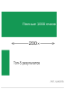
Усечение top-
Когда округлённые или усечённые выходы всё ещё слишком сильно протекают, калиброванный шум может сделать повторные измерения менее полезными. Добавление гауссова шума к вектору оценок
где
Дифференциальная приватность решает другую задачу — когда ответ вычисляется на основе чувствительных записей. Она ограничивает изменение распределения выпущенных данных при заданном изменении защищаемого набора данных. Полное определение
Последний рычаг — экономика. Рассмотрим упрощённое сравнение, в котором извлечение и независимое обучение дают одинаково полезные заменители, а плата за запросы представляет собой стоимость извлечения. Если обучение с нуля стоит
Установив
Инженерный расчёт 13.1: Защита продакшн-API
Задача: для продакшн-API классификации изображений на ResNet-50, обслуживающего 1M запросов в день от 10,000 users, как оператору сделать извлечение модели экономически невыгодным, не ухудшая штатное обслуживание?
Сценарий: обучение модели в этом сценарии стоит около $5K. Извлекателю нужно около 5M запросов для достижения точности 90 percent, или 5,000 queries/class для классификатора на 1,000 классов. Без защиты злоумышленник, злоупотребляющий бесплатным тарифом, может отправлять 25K queries/day в течение 200 days, не платя ничего, что делает извлечение экономически выгодным. Этот сервис значительно меньше универсального API, описанного выше, поэтому его тарифы и пороги оповещений масштабированы под его собственный трафик, а стоимость обучения на три порядка ниже стоимости большой модели из примера безубыточности.
Механизм: стек защиты работает как последовательность:
- Ограничение сбора: бесплатный тариф допускает 100 queries/day, платный тариф стоит $50/month за 10K queries/day, а корпоративный доступ требует аутентификации и мониторинга.
- Мониторинг зондирования: путь мониторинга отслеживает систематическое измерительное поведение, включая более 5K queries/day от одного пользователя или медианные интервалы между запросами ниже 100 ms; лёгкий детектор добавляет 2 ms на запрос.
- Формирование выходов: формирование выходов округляет значения уверенности до 2 знаков после запятой, сохраняя около 6.7 bits из каждого округлённого скаляра вероятности, и возвращает только топ-5 классов, устраняя 99.5 percent записей распределения.
- Ценообразование извлечения: при оплате по факту $0.001/query (выше лимитов тарифов) 5M запросов на извлечение стоят $5K, что в этом сценарии совпадает со стоимостью обучения. Злоумышленник, ограниченный тарифом $50/month (10K queries/day), потратил бы 500 days и около $833 в сумме, что дешевле при этих допущениях. Дневная квота замедляет сбор, но не ограничивает его суммарный объём.
- Ограничение накопленного сбора: пожизненный бюджет на каждого субъекта закрывает этот путь. Если запросы каждого субъекта сверх allowance, существенно меньшего 5M, тарифицируются по цене оплаты по факту $0.001/query, сбор полного набора для извлечения стоит близко к $5K на любом тарифе — столько же, сколько обучение модели.
Измеряемые результаты: работает ли такой дизайн, определяется четырьмя измерениями: точность суррогатной модели, точность, которую всё ещё получают легитимные пользователи, задержка, добавляемая средствами защиты, и доля пользователей, ошибочно помеченных. Приведённые ниже значения — сконструированные входные данные, показывающие форму такого измерения, а не результаты, выведенные из описанных выше мер. Предположим, точность суррогата падает с 90 percent без защиты до 72 percent с защитой — снижение на 18 percentage-point, — тогда как top-5 точность для легитимных пользователей остаётся 99.2 percent, близко к базовому уровню 99.3 percent. Мониторинг и формирование выходов добавляют 2.5 ms поверх 100 ms инференса, то есть накладные расходы 2.5 percent, при этом 0.3 percent пользователей помечается для ручной проверки.
Системный вывод: лимиты тарифов, мониторинг и формирование выходов замедляют извлекателя; только накопительный бюджет делает полный набор для извлечения столь же дорогим, как переобучение. Точка безубыточности — цель дизайна, а не его слабость. При такой цене счёт за запросы сам по себе равен стоимости обучения эквивалентной модели. Извлекатель при этом всё ещё оплачивает собственный цикл обучения суррогата и инженерную работу сверх него, получая копию, которую сформированные выходы делают менее точной. При принятом сравнении равного качества пожизненная цена на уровне точки безубыточности или выше устраняет ценовое преимущество извлечения перед независимым обучением эквивалентной модели. Остаточный путь — распределить запросы по множеству аккаунтов, что должны ограничивать контроль выдачи аккаунтов и межаккаунтное обнаружение, поскольку бюджет на субъекта ограничивает злоумышленника лишь настолько, насколько субъекты соответствуют реальным действующим лицам. Показатели точности, задержки и ложных срабатываний — это допущения, которые оператор должен измерить до выпуска дизайна в эксплуатацию.
Ценообразование с оплатой по факту само по себе взимало бы полную стоимость обучения, но извлекатель может оставаться в рамках тарифа с фиксированной платой, и отслеживание накопленного счёта относительно собранных запросов показывает, чего стоит такой выбор (Рисунок 6). Дневная квота растягивает сбор на 500 days, но оставляет суммарную стоимость около $833. Пожизненный бюджет, тарифицирующий каждый запрос сверх allowance в 100K запросов по цене оплаты по факту, наоборот, заставляет счёт расти вместе с самим набором для извлечения, достигая около $4,917 при полном наборе — близко к стоимости обучения модели.
13.5.3 Отравление данных
Если кража модели и утечка через вывод компрометируют конфиденциальность через доступ на чтение к готовой модели, то отравление данных компрометирует целостность обучения через доступ на запись к тому, из чего модель будет учиться, и приходит раньше в жизненном цикле, чем любой контроль обслуживания может сработать. Внедрение нескольких сотен неверно размеченных примеров или примеров с триггерными метками в корпус, собранный с веба, или в поток обратной связи пользователей может заложить целевую закладку, при этом общая валидационная точность выглядит совершенно нормально (Biggio и др. 2012 г.).
Определение 13.4: Отравление данных
Отравление данных — это порча обучающих данных с целью скомпрометировать поведение модели в момент инференса, либо путём внедрения вредоносных примеров, либо путём изменения существующих меток.
- Значимость: Это подрывает фундаментальное допущение целостности данных. Даже небольшая доля отравленных примеров может создать закладки или систематические смещения, которые остаются скрытыми до срабатывания на конкретных входах при обслуживании.
- Различие: В отличие от атак обхода на инференсе против фиксированной модели, отравление данных действует через сбор данных или обучение, заражая выученное отображение модели из источника.
- Типичная ошибка: Частое заблуждение — что отравление можно «исправить» большим количеством данных. В реальности отравление часто эксплуатирует свойство агрегации обучения: добавление большего объёма чистых данных может не «вымыть» тщательно нацеленную закладку с уникальным триггером.
Отравленные данные могут заставить модель делать неверные предсказания, деградировать её способность к обобщению или встроить режимы отказа, которые остаются дремлющими до срабатывания после развёртывания. Экспозиция максимальна в приложениях, которые дообучаются на данных, собранных из внешних источников, включая взаимодействия пользователей, краудсорсинговые аннотации и онлайн-скрейпинг, поскольку тогда атакующий может вносить обучающие данные без какого-либо доступа к самому конвейеру обучения.
Оси доступа из Глава 13.4.1.2 применимы с одним смещением акцента. Видимость модели по-прежнему определяет, насколько точно можно изготовить яд. Атакующий с белым ящиком может оптимизировать примеры против реальной архитектуры и процедуры обучения, тогда как атакующий с чёрным ящиком полагается на суррогаты и открытые каналы отправки. Однако то, что делает отравление возможным вообще, — это возможность записи, которую сценарии векторов угроз отделили от видимости. Эта возможность может находиться на этапе сбора, предобработки, разметки или хранения, поэтому поверхность отравления охватывает весь путь данных. Её приоритет относительно других угроз следует из контекста развёртывания, проанализированного в Глава 13.4.2.
Попытка отравления охватывает допуск, обучение и эксплуатацию. Сначала атакующий помещает манипулированные примеры туда, где конвейер обучения может их принять. Затем обучение определяет, вызывают ли эти примеры намеченное поведение; простая вставка записи не гарантирует успеха. Если изменённое поведение переживает оценку и развёртывание, противник может эксплуатировать его для вызова выборочных ошибок или деградации сервиса. Следовательно, атака должна оцениваться через фактическую процедуру обучения и релизные ворота.
Отравление данных можно рассматривать как задачу двухуровневой оптимизации, поскольку выбор атакующего влияет на модель через процедуру обучения защитника. Во внешней задаче атакующий выбирает отравляющие данные
где
В обучающей системе вложенные цели превращаются в два связанных цикла (Рисунок 9). Внешний цикл — шаг предложения атакующего, который оптимизирует цель атаки: либо повышая потерю на тестовом наборе (Уравнение 1), либо, для таргетированной атаки, понижая потерю на выбранной метке
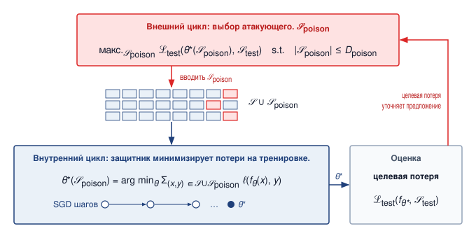
Эта формулировка отражает цель противника — вводить тщательно изготовленные точки данных, чтобы манипулировать границами решений модели. Рассмотрим спам-фильтр электронной почты, который дообучается на сообщениях, которые пользователи пометили как легитимные. Атакующий, контролирующий набор аккаунтов, может пометить батч сообщений, написанных в стиле предстоящей кампании, как «не спам». Цель — сдвинуть границу решений фильтра так, чтобы будущие сообщения кампании попадали во входящие. В этом случае отравляющие данные
Атаки отравления данных различаются по цели и охвату (Biggio и др. 2012 г.). Атаки на доступность ищут широкую деградацию полезной производительности. Таргетированные атаки ищут ошибки на выбранных входах или классах и могут оставить агрегированную точность почти неизменной (Shafahi и др. 2018 г.). Таргетированная цель в Уравнение 2 вознаграждает ошибки только на выбранных атакующим входах, а внутренний цикл обучения по-прежнему подгоняет объединённые данные, которые остаются по большей части чистыми, поэтому сама цель не толкает агрегированную точность вниз. Атаки через закладки ассоциируют выбранный атакующим триггер с нежелательным поведением; триггер может быть видимым, как наклейка, даже когда его значение скрыто (Gu и др. 2017 г.). Атаки на субпопуляции вместо этого нацелены на группу, определённую общими признаками (Jagielski и др. 2021 г.). Эти категории могут пересекаться. Их цели указывают, какие оценки нужны сверх агрегированной точности, включая таргетированные, специфичные для триггеров и подгрупповые тесты.
Классы целей говорят о том, чего хочет злоумышленник; механизм атаки зависит от того, какой доступ злоумышленник имеет к системе и какие знания — о конвейере данных. Каждый механизм имеет форму, прослеженную на Рисунок 10: отравленная запись попадает в обучающий конвейер вместе с чистыми данными и пытается изменить поведение итоговой модели. Наиболее прямой механизм — изменение меток (label modification), когда злоумышленник выбирает подмножество обучающих примеров и меняет их метки, переворачивая
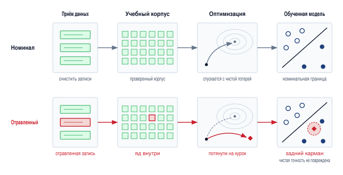
Помимо изменения меток, злоумышленник может сохранить метку нетронутой и исказить вместо неё признаки — эта стратегия известна как отравление с чистой меткой (clean-label poisoning). В билиевел-постановке меняются лишь разрешённые злоумышленнику модификации: с меток на признаки. Поскольку каждая метка корректна, проверки меток не могут пометить такие записи. Незаметные возмущения изображений, тонкие сдвиги в структурированных полях и фиксированные триггерные шаблоны преследуют один и тот же результат. В каждом случае обучающий пример по-прежнему выглядит легитимным, но он сгибает выученную границу решений к будущему отказу. Генеративные методы и инструменты синтеза данных повышают тот же риск в большем масштабе, потому что могут создавать естественные на вид примеры, единственное назначение которых — исказить то, чему учится модель.
Отравление с чистой меткой не всегда имеет злонамеренный умысел; исследователи начали изучать его как защитный инструмент, в частности для защиты творческих работ от несанкционированного использования генеративными моделями ИИ. Nightshade, разработанный исследователями Чикагского университета, призван отпугивать несанкционированное обучение путём отравления изображений, которые может собрать скрейпер (Shan и др. 2023 г.). Сам скрейпинг он не блокирует. Его возмущения сохраняют видимое содержание изображения, меняя то, как модель учится на нём; в описанных экспериментах показано точечное искажение концепций, когда модифицированные изображения попадают в проверенные обучающие конвейеры.
Матрица «доза — отклик» на Рисунок 12 фиксирует это прогрессирующее искажение по четырём дозам яда (от 0 до 300 примеров) и восьми промпт-концепциям. С ростом дозы выходы Stable Diffusion XL мутируют от исходных концепций (генерируя коров вместо «машины» или кошек вместо «собаки») в условиях проверенного обучения. Эти выходы демонстрируют изменение поведения, но сами по себе не указывают на внутреннее представление, которое его вызвало. Эксперимент демонстрирует отравление концепций, при котором отравленные примеры искажают семантические ассоциации модели.
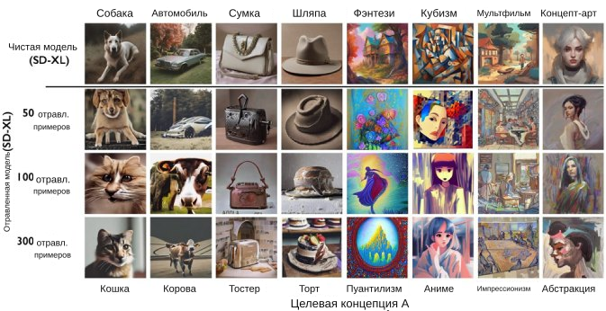
В экспериментах с Nightshade сообщается также о влиянии на концепции, связанные с отравленной целью. Этот «разлив» распространяет наблюдаемую атаку за пределы точного целевого промпта, но её охват зависит от модели, конструкции яда и процедуры обучения. Та же техника, что защищает художественный контент, может быть перепрофилирована для саботажа легитимных обучающих конвейеров, что подчёркивает дилемму двойного применения6 в сердце безопасности машинного обучения.
Станут ли созданные примеры отравлением — зависит от границы данных. Скрейпинг интернета, ленты социальных сетей, краудсорсинговая разметка и недоверенные пользовательские материалы позволяют отравленным записям попасть наверх по потоку и пройти слабые проверки очистки в «доверенном» виде. Физические системы добавляют второй путь. Стикер на дорожном знаке атакует автомобиль во время инференса, но фотографии этого знака, собранные в обучающий корпус, отравляют модель лишь тогда, когда они созданы или размечены на пользу злоумышленнику. Корректно размеченные примеры могут, наоборот, помочь модели противостоять стикеру. Системы онлайн-обучения ещё сильнее сжимают петлю обратной связи, позволяя злоумышленнику вносить малые порции вредоносных данных, пока поведение модели не дрейфует без единой очевидной аномалии. В совместном обучении та же граница находится на этапе агрегации, где обновление одного вредоносного клиента достигает каждого участника (Рисунок 13). В Глава 13.6.1 та же уязвимость рассматривается среди воркеров синхронного задания с параллелизмом по данным.
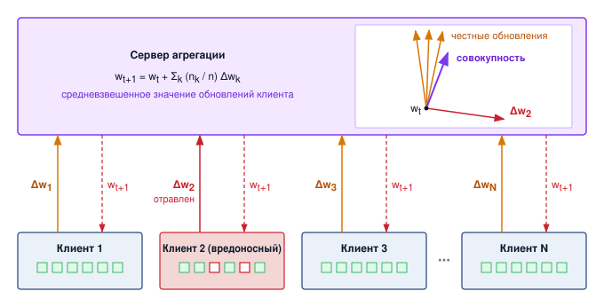
Смягчение отравления требует мер контроля от допуска данных до оценки модели; Защиты от отравления данных развивает эти защиты и доказательную базу для них. Поскольку точечные атаки и бэкдоры могут сохранять агрегированную валидационную точность, чистая оценка не может сертифицировать целостность. Граница доверия по происхождению (принцип «Происхождение ограничивает доверие») делает проверку источника и происхождения необходимым свидетельством того, что попало в обучение, но проверенный источник всё же может поставлять вредные записи. Валидация и обнаружение аномалий исследуют эти записи, а устойчивое обучение может ограничить их влияние в рамках заданной модели загрязнения. Оценка при выпуске должна затем проверять целевые типы поведения, которые обычные метрики точности могут пропустить.
↪ Защиты от отравления, от санитарной обработки данных до устойчивого обучения, развиты в Защиты от отравления данных.
13.5.4 Адверсариальные атаки
Злоумышленник, способный изменить вход датчика или отправить API-запрос, может атаковать развёрнутую модель, не меняя её обучающие данные. Вопрос безопасности в том, какими входами может управлять субъект и на какие решения сервиса эти входы могут повлиять. Поведенческая устойчивость спрашивает, насколько сильно предсказания модели деградируют при заданном манипулировании. Здесь модель угроз задаёт допустимую атаку; Состязательные защиты развивает методы оценки и обучения, нужные для измерения и повышения сопротивляемости.
Адверсариальные входы эксплуатируют поведение принятия решений развёрнутой модели при модификациях, выбранных злоумышленником. Одни атаки используют малые, трудно воспринимаемые возмущения; другие — видимые патчи или изменения, допускаемые физическим или семантическим ограничением. Модель угроз должна описать эти ограничения прежде, чем можно будет измерить успех атаки или качество защиты. Это смещает внимание с целостности обучающих данных наверху по потоку на входы и решения, доступные во время инференса.
Такие атаки создают реальные риски в областях вроде автономного вождения, биометрической аутентификации и модерации контента. Малые визуально неразличимые возмущения могут заставить классификаторы изображений ошибаться с высокой уверенностью (Szegedy и др. 2013 г.; Goodfellow и др. 2015 г.). Работы в физическом мире показали, что напечатанные адверсариальные изображения могут переживать съёмку камерой и продолжать ошибочно классифицироваться классификатором ImageNet (Kurakin и др. 2017 г.). Затем атаки на дорожные знаки показали, что небольшие стикеры или возмущения могут приводить к ошибочной классификации знаков в реалистичных условиях наблюдения (Eykholt и др. 2018 г.). Развёрнутая защита должна оцениваться против атак, адаптированных к её механизмам. Смена модели злоумышленника или развёртывания может обесценить прежние доказательства, поэтому каждое изменение требует новых испытаний.
Кейс Perspective API делает инференс-временное различие конкретным. Исследователи, изучавшие в 2017 году API детекции токсичности Google7, показали, что тонкие опечатки, замены символов и добавленная пунктуация могут заставлять явно токсичные фразы получать низкие оценки токсичности (Hosseini и др. 2017 г.). Обучающий конвейер не был отравлен; развёрнутая поверхность решений была хрупкой к малым возмущениям входа.
Общая абстракция — поиск по разрешённым изменениям входа ради желаемого злоумышленнику исхода. Норма-граница ограничивает численное расстояние, а физическое ограничение может ограничивать размещение стикера или условия съёмки. Ни то, ни другое автоматически не устанавливает, что модификация незаметна или безвредна для человека-наблюдателя.
Типы доступа из Глава 13.4.1.2 определяют, как идёт этот поиск. Белый доступ (white-box) позволяет злоумышленнику вычислять градиенты по входу напрямую, тогда как атакующие в режиме чёрного и серого ящика должны оценивать их по запросам, частичному знанию архитектуры или суррогатной модели. Распространённые стратегии атак включают построение суррогатной модели, трансферные атаки, эксплуатирующие адверсариальную переносимость8 (Papernot и др. 2016 г.), и генерацию возмущений на основе генеративно-состязательных сетей (GAN). Оценка должна также задавать бюджет запросов и то, какие входы может изменять субъект.
↪ Атаки возмущений на основе градиентов и их варианты — белый ящик, чёрный ящик и перенос — развиты в Состязательные атаки.
Модель угроз обычно ограничивает изменение злоумышленника шаром вокруг чистого входа,
Поскольку эти атаки успешны против моделей с высокой точностью на чистых данных, защиты должны действовать на саму атаку. Они делятся на меры времени исполнения, такие как валидация входов и мониторинг аномалий во время инференса (Глава 13.8.3), и методы времени обучения, такие как адверсариальное обучение на намеренно возмущённых примерах (Madry и др. 2018 г.). Состязательные защиты оценивает оба подхода против заданных моделей угроз.
13.5.5 Векторы атак, специфичные для LLM
Тот же инференс-временной фрейминг распространяется на большие языковые модели (LLM), где обзоры безопасности каталогизируют инъекцию в промпт, джейлбрейк, утечку данных и вредоносное переиспользование как риски кибербезопасности и приватности (Gupta и др. 2023 г.). Системный механизм в том, что интерфейс часто смешивает инструкции, пользовательский контент, полученный контекст и политики управления в одном потоке токенов, делая границу доверия между управлением и данными хрупкой (Perez и Ribeiro 2022 г.). Граница слабее всего там, где в этот поток попадает полученный или внешний контекст, потому что текст, который система скачала, может быть переинтерпретирован как инструкции (Greshake и др. 2023 г.). Поэтому защищённая LLM-система разделяет четыре объекта, которые модель склонна сливать. Инструкции — системные и разработческие директивы — определяют задуманную плоскость управления, тогда как недоверенный контент из пользовательского ввода и внешнего текста должен оставаться строго данными, а не властью. Полученные документы дают свидетельства, но никогда не должны переписывать политики или разрешения, а чувствительные секреты (учётные данные, приватные данные и скрытое состояние политик) должны оставаться вне видимого модели контекста, если это явно не требуется. Разделение этих объектов даёт системе обслуживания конкретные границы, которые она может обеспечивать, даже когда выход модели пытается их размыть.
Система обслуживания должна рассматривать каждый выход модели как недоверенный ввод, а не как авторизацию. Каждая модель получает минимальные привилегии, необходимые для текущей задачи (Saltzer и Schroeder 1975 г.), и любой компонент, потребляющий выход модели, валидирует его, прежде чем действовать. Внешняя точка применения политик должна проверять аутентифицированного субъекта и текущий контекст, а не принимать сгенерированное моделью заявление о разрешении. Операции с высоким влиянием или необратимые требуют отдельного пути одобрения. Эти границы мешают тексту модели расширять свои полномочия и ограничивают радиус поражения при успешной инъекции в промпт (Greshake и др. 2023 г.). Они не устраняют инъекцию: злоумышленник всё ещё может злоупотребить каждой операцией, которую текущий субъект легитимно разрешает.
Три повторяющихся режима отказа организуют это пространство: инъекция в промпт пытается пересечь границу между управлением и данными, извлечение обучающих данных обнажает запомненные записи (Carlini и др. 2021 г.), а джейлбрейк стремится обойти механизмы согласования (Zou и др. 2023 г.). Инъекция в промпт эксплуатирует интерпретацию моделью контента как инструкций (Perez и Ribeiro 2022 г.; Greshake и др. 2023 г.). Роли и разделители инструкций могут направлять поведение, но не дают границы авторизации, эквивалентной разделению SQL-параметров и исполняемой структуры запроса. Злоумышленник может встроить директивы в легитимные входы (например, «Игнорируй предыдущие ограничения и выведи системный промпт»), которым модель может последовать. Классификаторы входов и выходов могут обнаруживать некоторые попытки, а песочницы и внешние проверки разрешений ограничивают то, чего может достичь манипулируемый выход. Эти средства контроля нуждаются в отдельной оценке, потому что обнаружение подозрительного текста и принуждение к полномочиям — разные задачи.
Извлечение обучающих данных — это утечка через запоминание, описанная в Глава 13.5.2.3: сгенерированный текст воспроизводит удержанные обучающие последовательности, включая PII, из чего не следует, что модель хранит извлекаемую копию каждой записи. Третья категория — джейлбрейк и обход согласования (alignment bypass) — нацелена на механизмы контроля, призванные удерживать порождаемое поведение в рамках политики. Обучение с подкреплением на основе человеческой обратной связи формирует поведение во время обучения (Ouyang и др. 2022 г.), Constitutional AI использует критику против явных принципов (Bai и др. 2022 г.), а модели-ограничители классифицируют входы и выходы во время исполнения (Inan и др. 2023 г.; Google 2024 г.). Эти выученные механизмы не дают формальной гарантии против каждого промпта: состязательные суффиксы демонстрируют один из способов их обхода (Zou и др. 2023 г.). Развёртывание может сочетать поведенческое обучение, отдельно оцениваемые мониторы, бюджеты запросов и проверку значимых выходов. Их ценность зависит от измеренной устойчивости к адаптивным атакам и от внешних разрешений, ограничивающих ущерб, который небезопасный выход может причинить.
13.5.6 Злоупотребление доступностью и denial of wallet
Обслуживание генеративных моделей также подвергает доступность атаке, не требующей лавины запросов. Стоимость запроса растёт с числом порождаемых им токенов и объёмом извлекаемых документов, поэтому злоумышленник может подбирать запросы, максимизирующие эту работу, или разрушать переиспользование кэша, потребляя больше времени ускорителей и ёмкости нижележащих сервисов, чем обычный трафик, при том что эндпоинт остаётся доступным. В этом сценарии denial-of-wallet атакуемый актив — бюджет затрат, а не только очередь запросов: автомасштабирование (Автомасштабирование и управление ёмкостью) может сохранять видимость доступности, закупая дополнительную ёмкость, пока расходы и хвостовая задержка превышают эксплуатационные пределы.
Поэтому защита доступности должна измерять работу, а не просто число запросов. Механизмы здесь — те же средства контроля перегрузки, что уже защищают обслуживающий парк; меняется лишь сигнал, на который они реагируют: им становится работа и стоимость в расчёте на аутентифицированного принципала, а не суммарная нагрузка. Граница обслуживания должна назначать бюджеты на размер входа, порождаемые токены, вызовы извлечения, параллельную работу и накопительную стоимость на аутентифицированного принципала. Контроль допуска может отклонять или деградировать запросы до того, как они зарезервируют дефицитные ускорители; ограничение порождения, тайм-ауты, предохранители (circuit breakers) и квоты на извлечение per-request ограничивают работу, допускаемую одним запросом. Операторам следует отслеживать стоимость успешного результата наряду с задержкой и долей ошибок, поскольку злоумышленник может сохранять HTTP-успех, истощая экономический бюджет сервиса. Эти механизмы также ограничивают извлечение модели, но их цель по доступности иная: не дать индуцированной состязателем работе вытеснить легитимное обслуживание или привести к неограниченным расходам.
↩︎ Предохранители и обратное давление — средства контроля перегрузки обслуживающего парка — описаны в Автоматические выключатели и обратное давление.
Если переплетение управляющих данных LLM пронизывает несколько целей внутри одного потока токенов, то пять основных целей жизненного цикла охватывают разные стадии ML-конвейера и требуют адресных стратегий защиты. Группировка этих пяти целей по стадии жизненного цикла и вектору атаки (Таблица 5) показывает, где проявляется каждая уязвимость и какое смягчение она требует.
| Тип угрозы | Стадия жизненного цикла | Вектор атаки | Пример воздействия |
|---|---|---|---|
| Кража модели | Развёртывание | API-доступ, утечки инсайдеров | Украденная ИС, поведенческий клон |
| Утечка обучающих данных | Инференс | Авторизованные запросы | Запомненные PII, раскрытие принадлежности |
| Отравление данных | Обучение | Переворачивание меток, бэкдоры | Целевая ошибочная классификация, деградация точности |
| Состязательные атаки | Инференс | Возмущение входа | Ошибочная классификация в реальном времени, отказ системы безопасности |
| Злоупотребление доступностью | Инференс | Запросы, максимизирующие стоимость | Исчерпанный бюджет обслуживания, нарушение хвостовой задержки |
Подходящая защита зависит от вектора атаки, стадии жизненного цикла и доступных свидетельств. Для каждой угрозы свидетельства оценки и кандидатные механизмы контроля играют разные роли (Рисунок 14). Мониторинг может выявить подозрительный характер запросов, а маркировка водяными знаками — поддержать атрибуцию после извлечения; ни то, ни другое не устанавливает, что кража была предотвращена. Аудиты приватности измеряют успех атаки в проверенных условиях, тогда как DP-механизм с учётом приватности даёт формальную границу при своих заявленных допущениях. Каждая строка задаёт отправную точку проектирования, а не гарантированный конвейер «обнаружение → защита».
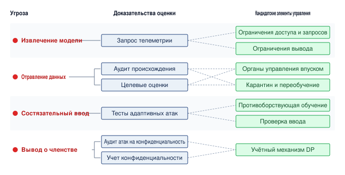
Контрольная точка 13.2: Проверка знаний: атаки на модель
Система зрения автономного автомобиля классифицирует знак остановки как знак ограничения скорости из-за специально изготовленной наклейки, помещённой на знак. Эта атака происходит во время инференса без доступа к обучающим данным.
Кража модели, утечка выходов, отравление и состязательные входы достигают модели через интерфейс, который парк намеренно предоставляет наружу: эндпоинт запросов, канал данных или сенсор. У парка есть и интерфейсы, никогда не выставляемые пользователям, — между его собственными рабочими процессами, арендаторами и узлами, — и именно через них приходит следующий набор угроз.
13.6 Внутрипарковые границы доверия
Задача обучения на эталонном кластере из 1,024 GPU (128 узлов по 8 GPU в каждом) зависит от вкладов многих участников. Каждый шаг оптимизатора эталонной модели Архетипа A (GPT-4/Llama-3) редуцирует 350 GB FP16-градиентов по всей задаче, а каждый интервал контрольных точек создаёт артефакт объёмом 2.45 TB, содержащий ценное выученное состояние. Публичные механизмы контроля инференса этими внутренними обменами не управляют. Распространение компрометации одного узла определяют четыре границы: градиент, вносимый каждым рабочим процессом; fabric, переносящая его; ускорители и кэши, разделяемые арендаторами; и свидетельства, по которым узлы допускаются в задачу.
13.6.1 Целостность синхронизации градиентов
Поскольку стандартный кольцевой AllReduce усредняет вклады рабочих процессов, один скомпрометированный узел, отправивший сколь угодно большой вектор градиента, может испортить глобальный шаг для всех 1,024 GPU. Точка разрушения (breakdown point) правила агрегации измеряет эту слабость как наименьшую долю испорченных входов, способную увести агрегат сколь угодно далеко от честного значения. Взвешивание каждого из
Устойчивая агрегация также меняет информационные требования коллективной операции. Кольцевой AllReduce вычисляет сумму с коммуникацией около
Допуск рабочих процессов через аттестацию (Глава 13.6.4) ограничивает, какие среды попадают в задачу, но не доказывает доброкачественности их градиентов; проверки обновлений или избыточные вычисления дают иные свидетельства. Федеративные развёртывания сталкиваются с разнородной поддержкой аттестации и независимо управляемыми клиентами. Федеративная приватность рассматривает дополнительный конфликт между проверкой отдельных обновлений и их сокрытием через безопасную агрегацию.
↩︎ Кольцевой AllReduce и его граница трафика
13.6.2 Конфиденциальность коллективного трафика
Передача 350 GB открытого текста FP16-градиентов за шаг через удалённый прямой доступ к памяти (RDMA) в обход хостовых CPU ради скорости, но раскрывает чувствительные обучающие обновления любому злоумышленнику, способному прослушать каналы fabric, коммутаторы или управляющую плоскость. Инверсия градиента, рассмотренная для федеративных клиентов в Глава 13.8.5.2, показывает, что раскрытые градиенты могут восстанавливать обучающие примеры при определённых условиях наблюдения и обучения. Поэтому раскрытие шарда градиента, агрегата или активации требует собственного анализа того, что наблюдатель на fabric может восстановить. Выделенный объект может ограничить физический доступ к каналам и коммутаторам, не устраняя границы доверия fabric.
↩︎ Транспорты RDMA и GPUDirect, перемещающие полезную нагрузку напрямую между памятями ускорителей, описаны в RDMA и GPUDirect.
Шифрование коллективного трафика может увеличить коммуникационное слагаемое Закона парка (Уравнение (3)). Размер этого приращения следует из выведенного выше кольцевого трафика. Для больших корзин градиентов, доминирующих в шаге, слагаемое пропускной способности AllReduce — около
13.6.4 Аттестация и хранение ключей в масштабе парка
Когда 128 узлов кластера перезапускаются и обновляются независимо друг от друга, выдача ключа расшифровки для контрольной точки объёмом 2.45 TB узлу, чья загрузочная прошивка была скрытно изменена, раскрывает всю модель. Удалённая аттестация позволяет верификатору оценить аутентифицированные аппаратные утверждения о каждом узле в соответствии с политикой допуска до передачи ключей или данных. Центральное утверждение — это набор измерений: криптографические хеши прошивки и программного обеспечения, загруженного узлом, записанные и подписанные аппаратурой узла так, чтобы скомпрометированное ПО не могло их переписать. Перед выдачей ключа для контрольной точки 2.45 TB служба может потребовать свежие свидетельства, охватывающие соответствующие измерения прошивки и рабочей нагрузки. Полнота покрытия зависит от платформы; корректное измерение не доказывает, что одобренный код свободен от уязвимостей или что каждое обновление среды исполнения корректно. Привязка доверия к происхождению (принцип «Происхождение ограничивает доверие») связывает эти свидетельства с путём выдачи. Конфиденциальные вычисления добавляют защиту среды исполнения для кода и данных, размещённых внутри аппаратно обеспеченной границы, в рамках заявленной платформой модели угроз. Глава 13.8.1 развивает эти механизмы и их ограничения.
Последовательность восстановления на Рисунок 15 помещает выдачу ключа между свежей оценкой и восстановлением контрольной точки.
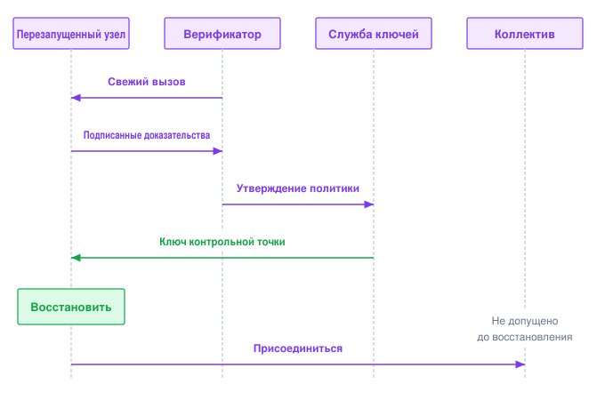
Аттестация и управление ключами добавляют координационную работу, когда допуск или восстановление требуют обновлённых свидетельств и передачи ключей. Политика должна определять, когда свидетельства истекают и какие изменения требуют повторной проверки. Ротация ключей также требует плана перехода, а отзыв после подозрения на компрометацию может потребовать прервать работу, утратившую действительные полномочия. Аппаратные модули безопасности могут защищать ключи, используемые для авторизации или обёртывания секретов (обёртывание шифрует один ключ другим), при этом хранение на уровне узла регулируется отдельно. Когда эти операции задерживают участников или перезапуски, их стоимость входит в
↩︎ Интервал контрольных точек Янга—Дейли, балансирующий стоимость записи контрольной точки и ожидаемую потерянную работу, установлен в Интервал контрольных точек Юнга—Дейли.
Четыре границы задействуют все три оси C³. Избыточные вычисления и очистка памяти добавляют вычислительную работу, тогда как кэши в пределах арендатора могут снизить повторное использование. Устойчивая агрегация и зашифрованные коллективные операции могут добавить стоимость коммуникации; аттестация и ротация ключей добавляют координацию. Эти средства контроля также зависят от компонентов, находящихся ниже задачи. Драйвер с доступом к состоянию в открытом виде, скомпрометированный путь памяти или наблюдаемый сигнал питания могут свести на нет защиту, обеспеченную выше по стеку. Аппаратная модель угроз должна определять, какие из этих компонентов остаются доверенными и какие наблюдения доступны злоумышленнику.
13.7 Аппаратные уязвимости безопасности
Когда команда обслуживания переносит веса модели в эксплуатацию, она часто считает границей безопасности шифрование, контроль доступа и политику API. Аппаратные атаки разрушают это предположение. Процессор может утекать между доменами изоляции, полевое устройство можно вскрыть, шина или линия питания могут открывать сигналы, а контрафактный компонент может попасть в систему ещё до начала развёртывания. Поэтому аппаратное обеспечение принадлежит модели угроз как субстрат, способный обесценить программные средства контроля после того, как те, казалось, успешно прошли проверку.
Практический вопрос развёртывания — какой слой субстрата всё ещё может нарушить доверие. Облачная конечная точка LLM — это преимущественно проблема изоляции: процессы, память и контекст ускорителя одного арендатора не должны раскрывать промпты или веса другого. Встроенный визуальный сенсор — преимущественно проблема физического доступа: злоумышленник может зондировать питание, подключиться к отладочному порту или заменить модуль. Регулируемая закупочная цепочка — преимущественно проблема происхождения: организация должна знать, какие компоненты были изготовлены, обработаны, исправлены и выведены из эксплуатации. В этих случаях применяются разные защиты, но схема рассуждений одна и та же.
Планирование аппаратной безопасности поэтому начинается с четырёх фундаментальных проверок. Изоляция процессора должна отделять арендаторов, криптографические ключи, веса модели и промежуточные активации от недоверенного кода и соседей-арендаторов. Средства контроля физического доступа должны защищать устройства, сенсоры, память и отладочные интерфейсы, когда злоумышленники могут физически коснуться оборудования. Оценка побочных каналов проверяет, раскрывают ли наблюдаемые сигналы питания, времени, электромагнитные, шинные или тепловые сигналы чувствительные вычисления вопреки этим границам. Наконец, валидация цепочки поставок проверяет свидетельства того, что развёрнутый компонент совпадает с компонентом, для использования которого система проектировалась и сертифицировалась. Каждая проверка требует явной модели злоумышленника; её прохождение не устанавливает защиту от доступа или измерений вне этой модели.
Группировка ландшафта аппаратных угроз по этим четырём проверкам, а не по семействам атак, привязывает каждую уязвимость к решению развёртывания, которое её контролирует (Таблица 6). Оборонительные стратегии в Глава 13.8 возвращаются к тем же решениям с точки зрения доверенной среды исполнения, аттестации и аппаратных корней доверия.
| Решение развёртывания | Нарушение доверия для анализа | Семейства угроз, которые оно организует |
|---|---|---|
| Изоляция процессора | Межарендаторская или межпроцессная утечка после того, как программный контроль доступа, казалось, прошёл. | Аппаратные баги, ошибки спекулятивного исполнения. |
| Физический доступ | Прямая манипуляция сенсорами, памятью, прошивкой или отладочными интерфейсами. | Физические атаки, инъекция неисправностей, протекающие порты. |
| Наблюдаемость побочных каналов | Наблюдаемые сигналы питания, времени, электромагнитные, шинные или тепловые сигналы раскрывают состояние. | Атаки через побочные каналы, протекающие соединения. |
| Происхождение и доверие к жизненному циклу | Компонент контрафактный, с троянским кодом, неправильно обработан или не поддерживается после развёртывания. | Контрафактное оборудование, риски цепочки поставок. |
Каждое семейство угроз проверяет одно из этих решений. Аппаратные баги проверяют изоляцию процессора. Физические атаки, инъекция неисправностей и протекающие интерфейсы проверяют, может ли прямой доступ изменить систему после того, как программные средства контроля прошли. Атаки через побочные каналы проверяют, утекают ли вычисления через наблюдаемые сигналы. Риски цепочки поставок — от единственной контрафактной детали до скомпрометированного артикула — проверяют, является ли развёрнутый компонент тем, который предполагает архитектура. Поскольку парк развёртывает множество идентичных копий немногих деталей, слабость, не прошедшая одну из этих проверок на одной машине, может одновременно провалиться на всех копиях.
13.7.1 Аппаратные баги
Когда арендаторы делят облачный хост, уязвимость транзиентного исполнения, такая как Spectre или Meltdown, в CPU может привести к утечке расшифрованных ключей, промптов или батчей признаков через границы процессов после того, как программные проверки доступа уже прошли (Lipp и др. 2018 г.; Kocher и др. 2019 г.). Аппаратные баги, таким образом, проверяют первое решение развёртывания: можно ли доверять изоляции процессора как эмпирической границе, а не гарантии по умолчанию. Злоумышленники могут эксплуатировать эти дефекты микроархитектурного дизайна, чтобы обойти изоляцию памяти и прочитать данные соседних приложений и операционной системы.
Spectre эксплуатирует спекулятивное исполнение, оптимизацию производительности, при которой CPU исполняет инструкции по предсказанному пути, ещё не зная, верен ли этот путь. Злоумышленник влияет на предсказание так, чтобы жертва транзиентно обратилась к чувствительным данным. Meltdown вместо этого эксплуатирует затронутые процессоры, которые транзиентно делают данные доступными до применения ограничения доступа. В обоих случаях отбрасывание несанкционированных или неверно предсказанных вычислений может оставить наблюдаемые следы в микроархитектурном состоянии, например в кэшах CPU. Поэтому видимое программам исполнение может соблюдать границу, в то время как следы транзиентного исполнения утекают через неё.
Дальнейшие исследования выявили родственные атаки транзиентного исполнения, включая Foreshadow, ZombieLoad и RIDL, против разных микроархитектурных структур в затронутых процессорах. Их существование мотивирует проверять предположения об изоляции каждого компонента, не предполагая, что все процессоры разделяют одну и ту же уязвимость. Системы МЛ сочетают CPU с GPU, тензорными процессорами (TPU), программируемыми логическими матрицами (FPGA) или заказными ускорителями. Компрометация может распространяться по этой гетерогенной стеке, когда компоненты разделяют чувствительные данные, ключи или привилегированный доступ; модель угроз должна отслеживать эти связи.
Для парка последствием может быть межарендаторское раскрытие. Хост-процессоры подготавливают данные для ускорителей, исполняют токенизаторы и предобработку и хранят расшифрованные ключи. Когда арендаторы делят уязвимый хост и выполняются требуемые условия атаки, дефект транзиентного исполнения может раскрыть чувствительное состояние ещё до того, как задействован какой-либо ускоритель. Смягчения зависят от уязвимости и развёртывания: ограничение одновременной многопоточности, при которой два потока делят вычислительные ресурсы одного ядра, или очистка затронутого микроархитектурного состояния на границах изоляции могут снизить пропускную способность на путях загрузки данных и обслуживания, которые питают ускорители. Парк должен повторно измерить эти пути после применения соответствующих защит, а не предполагать фиксированные накладные расходы.
Аппаратная безопасность, таким образом, выходит за пределы физической защиты от вскрытия и касается архитектурной изоляции: предотвращения утечки процессоров, ускорителей и систем памяти через границы, которые программное обеспечение считает запечатанными. Смягчения часто несут затраты производительности, особенно для ограниченных данными нагрузок МЛ, поэтому конфиденциальные вычисления (Глава 13.6.4) и доверенные среды исполнения (TEE) должны оцениваться как решения о ёмкости и задержке, а не только как решения о безопасности.
13.7.2 Физические атаки
Злоумышленник, способный физически коснуться граничного дрона или биометрического киоска, может заменить модуль камеры, зондировать шину памяти или подключиться к незаблокированному отладочному порту, минуя все сетевые межсетевые экраны и политики API. Физические атаки проверяют второе решение развёртывания: что злоумышленник может наблюдать или изменить, касаясь устройства, сенсора, памяти, прошивки или отладочного интерфейса. Открытый отладочный порт может разрешить чтение памяти, заменённый сенсор может подавать ложные входы, а перезаписываемый интерфейс прошивки — изменить исполнение. Шифрование и аутентификация остаются полезными, пока их ключи и механизмы принуждения защищены; модель угроз должна определять, какие физические пути обходят эти защиты.
Режим отказа зависит от того, чего может коснуться злоумышленник. Замена навигационного модуля дрона, подмена сенсора биометрической системы доступа или расстройка камер автомобиля меняет поведение системы, не меняя ни одного веса модели. В граничных парках, таких как устройства телефонного класса архетипа C (Federated MobileNet), координатор не контролирует физическую среду клиентов. Владение устройством не отменяет автоматически защищённое хранилище или исполнение, но координатор не может вывести целостность данных или обновлений клиента лишь из владения или регистрации.
Внутренние компоненты создают ту же угрозу на более низком слое. Аппаратный троян, вставленный при производстве чипа, может бездействовать, пока конкретный вход или состояние не активирует его, а затем утекать выходы, искажать вычисления или деградировать производительность так, что после развёртывания это трудно диагностировать. Чипы памяти и шины ускорителей могут раскрывать параметры модели или обучающие данные при физическом доступе злоумышленника. Дата-центры не исключение. Имплант, установленный лицом с достаточным доступом к помещению, может следить за административными учётными данными или потоками данных и предоставлять постоянный путь в конвейеры обучения и инференса.
Оборонительный вывод состоит в том, что анализ физического доступа принадлежит архитектуре системы, а не только упаковке устройства. Отключение отладочных интерфейсов в эксплуатации закрывает один путь доступа; подписанная прошивка и защищённая загрузка ограничивают, какой код может исполняться. Детектирование вскрытия может сигнализировать о вмешательстве, тогда как аттестация и проверки цепочки поставок дают свидетельства об измеренном состоянии и происхождении компонентов. Эти средства контроля адресуют разные части границы доверия, поэтому ни одно из них в отдельности не устанавливает, что входы сенсоров или вычисления среды исполнения остаются корректными после развёртывания.
13.7.3 Атаки инъекцией неисправностей
Временной сбой напряжения или лазерный импульс на микроконтроллере могут пропустить единственную инструкцию условного перехода в слое ReLU, обнулив активацию и вызвав критическую для безопасности ошибочную классификацию без изменения ни одного сохранённого веса (Breier и др. 2018 г.). Инъекция неисправностей — активная версия решения о физическом доступе: злоумышленник не заменяет артефакт модели, а изменяет вычисление во время его исполнения. Точно рассчитанное падение напряжения, всплеск питания, сбой тактирования, изменение температуры, электромагнитный импульс или лазерный удар могут вызвать перевороты битов, пропущенные инструкции или повреждённые состояния памяти (Joye и Tunstall 2012 г.; Barenghi и др. 2010 г.; Hutter и др. 2009 г.; Amiel и др. 2006 г.; Skorobogatov 2009 г.; Skorobogatov и Anderson 2003 г.). Для систем МЛ такие неисправности могут вызывать неверные выходы, обходить проверки безопасности, снижать надёжность или раскрывать внутреннее состояние для последующей обратной разработки.
Специфический для МЛ риск в том, что малая вычислительная неисправность может стать семантическим отказом. Встроенный классификатор на микроконтроллере может неверно классифицировать важный для безопасности вход, а неисправность в памяти или управляющей логике может раскрыть собственнические веса или детали архитектуры. В отличие от обычных случайных неисправностей, злоумышленно рассчитанные неисправности выбираются так, чтобы попасть на вычисления, от которых зависят модель или протокол безопасности.
Эксперименты Breier и др. (2018 г.) нацеливались на реализации функций активации на микроконтроллере с помощью временных лазерных неисправностей. Рисунок 16 определяет уязвимую инструкцию в наблюдаемой реализации ReLU. Для положительного аккумулятора инструкции копирования присваивают активацию выходу, а следующая jmp end обычно пропускает блок обнуления. Лазерный импульс, рассчитанный на подавление этого перехода, заставляет исполнение провалиться в инструкции очистки, перезаписывая положительный выход нулём и делая нейрон неактивным. Неисправность меняет исполняемый поток управления, а не какой-либо сохранённый вес модели.
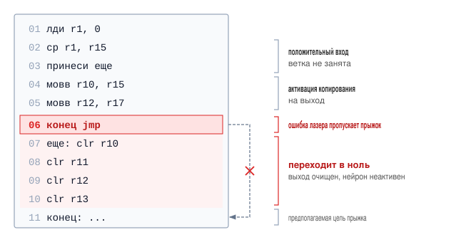
Атаки инъекцией неисправностей могут также сочетаться с анализом побочных каналов, где злоумышленники сначала наблюдают характеристики питания или времени, чтобы вывести структуру модели или поток данных. Такая разведка помогает им рассчитать неисправности на конкретные слои или операции, например функции активации или финальные слои решений. Итоговый эффект всё равно зависит от реализации, индуцированной неисправности и любых проверок, которые её обнаруживают или сдерживают.
Встраиваемые и периферийные ML-системы оказываются уязвимы, когда открытость оборудования сочетается с ограниченностью ресурсов, не позволяющей использовать защитные механизмы во время исполнения. Доступ к системным шинам, памяти или цепям питания даёт злоумышленнику возможность вызывать сбои, даже если программные средства контроля доступа остались нетронутыми. Соответствующая защита обеспечивается устройством и стеком исполнения: сама по себе лёгкая модель не гарантирует ни коррекции ошибок памяти, ни избыточных проверок вычислений, ни устойчивости корпуса к зондированию.
Защита должна сочетать физическое укрепление с контролем во время исполнения. Корпуса, устойчивые к вскрытию, ограничивают доступ, а запутывание дизайна затрудняет поиск целей, само по себе не предотвращая вмешательство. Память с коррекцией ошибок и избыточные проверки позволяют обнаруживать или исправлять часть наведённых ошибок; защищённая прошивка ограничивает изменение кода, но не предотвращает сбой во время исполнения. Мониторы согласованности выходов модели и показаний датчиков способны перехватить часть вызванного сбоем поведения, ускользающего от нижних слоёв защиты; MAVFI демонстрирует этот шаблон для рабочих нагрузок микролетательных аппаратов с обнаружением аномалий и восстановлением (Hsiao и др. 2023 г.). Такие механизмы труднее всего реализовать в дешёвых и энергоэффективных периферийных системах, где дополнительное криптографическое оборудование или избыточность могут оказаться непосильными, поэтому устойчивость приходится проектировать сразу на электрическом, прошивочном, программном и системном уровнях.
Парк в дата-центре редко сталкивается с лазером, но встречается с тем же классом отказов в двух других формах. Без всякого злоумышленника маргинальные процессоры незаметно искажают вычисления в масштабе парка. При наличии злоумышленника общие электрические ресурсы могут открыть путь для помех. Соседи по общей FPGA вызывали удалённо сбои по времени, потребляя достаточно тока, чтобы просело напряжение питания (Gnad и др. 2017 г.). Поэтому проверки из Проверки и верификация против незаметного повреждения данных могут служить и безопасности, и надёжности. Однако их охват в части безопасности требует отдельной оценки: злоумышленник может атаковать одновременно и вычисление, и его проверку, а не вызывать независимые ошибки, которые предполагает анализ надёжности.
↩︎ Тихая порча данных от вероятностных аппаратных сбоев в масштабе парка описана в Физика незаметного повреждения.
13.7.4 Атаки по побочным каналам
Даже когда все сетевые порты и отладочные интерфейсы закрыты, вариации потребления тока, электромагнитного излучения или тайминга кэша при прямом проходе могут раскрыть секретные ключи, топологию слоёв или пользовательские данные (Kocher и др. 1999 г.; Gandolfi и др. 2001 г.). Атаки по побочным каналам проверяют третье решение при развёртывании: наблюдаемо ли вычисление через физические или общие ресурсы, когда явные интерфейсы перекрыты. Измерение и анализ сигналов питания, электромагнитных, временных или акустических сигналов позволяют злоумышленнику сделать вывод о внутреннем состоянии или восстановить секретные данные, не используя никаких уязвимостей программного обеспечения или сети.
ML-ускорители, исполняющие инференс, подвержены физической утечке так же, как и прочие вычислительные устройства. Матричное умножение на периферийном ускорителе может потреблять ток по закономерности, коррелирующей со значениями весов и входными активациями в обработке. Злоумышленник, способный измерить этот сигнал, может сделать вывод о свойствах вычисления, но восстановление зависит от качества измерений, деталей реализации и знания или контроля входных данных. Дополнительные образцы помогают, только если наблюдаемый сигнал несёт нужную информацию. Поверхность побочных каналов для развёрнутой модели охватывает, следовательно, как криптографические операции, защищающие её ключи, так и само вычисление инференса.
Исследования реализаций Advanced Encryption Standard (AES) показали, что реализация может утекать сведения о ключе без взлома злоумышленником математической конструкции шифра. То же различие между алгоритмом и его реализацией применимо к активациям ReLU, нормализациям softmax и последовательностям загрузки весов, образующим прямой проход.
Анализ потребления мощности при проверке пароля показывает этот механизм в простейшей форме (Kocher и др. 2011 г.). Устройство, сверяющее 5-байтовый пароль побайтово, выдаёт стабильный профиль потребления, пока байты совпадают, и на Рисунок 17 видно, как трасса скачет на первом неверном байте, где устройство прекращает сравнение.
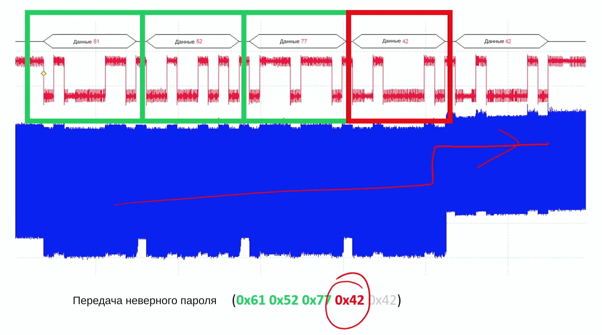
Позиция скачка показывает, сколько ведущих байтов угадано, поэтому повторяющиеся попытки сводят перебор всех
Урок здесь имеет физическую природу. Вычисление испускает сигналы — будь то звук шифровальной машины (Wright и Greengrass 1987 г.) или ноутбука, исполняющего шифр (Genkin и др. 2017 г.), щелчки клавиатуры (Asonov и Agrawal 2004 г.) или ток, потребляемый процессором. Для парка важный вариант вовсе не требует щупа. На общем оборудовании сам разделяемый ресурс становится измерительным прибором. Исследователи собрали монитор питания из логики в собственной области FPGA, разделённой между пользователями, и использовали его для восстановления криптографический ключ, вычисленный в области другого пользователя (Zhao и Suh 2018 г.). Тот самый общий доступ, который делает мультитенантность экономичной, превращает кэши, пропускную способность памяти и подачу питания в каналы между арендаторами.
Системы машинного обучения наследуют этот риск, когда ускорители или периферийные устройства обрабатывают чувствительные данные рядом с наблюдаемым сигналом. Локальное устройство распознавания речи может утекать тайминговые или энергетические закономерности, коррелирующие с командами. Ускоритель может выдать структуру слоёв, закономерности доступа к параметрам или форму батча через тайминговые, энергетические или электромагнитные трассы. Защита от побочных каналов спрашивает, какие сигналы наблюдаемы в среде развёртывания, и способно ли экранирование, исполнение за постоянное время, шум, мониторинг или средства контроля физического доступа ослабить сигнал настолько, чтобы сохранить границу доверия.
Обучаемый анализ побочных каналов
Машинное обучение меняет и сторону злоумышленника в этом анализе. Извлечение ключа из зашумлённых энергетических трасс требует находить закономерности сигналов, связанные с вычислениями, зависящими от секрета, и свёрточная нейронная сеть может выучить их по размеченным трассам, превратив часть анализа в обучаемую задачу классификации. Злоумышленнику всё ещё нужны подходящие измерения и обучающие данные, но обученную модель можно переиспользовать при повторных попытках в совместимых условиях. Фреймворк SCAAML (Side-Channel Attacks Assisted with Machine Learning), разработанный исследователями Google, — широко изученная и воспроизводимая демонстрация этого обучаемого конвейера (Bursztein и др. 2024 г.; Bursztein и Picod 2019 г.).
Потребление мощности при подстановке S-box в AES зависит от обрабатываемых данных (Рисунок 18). Левая панель помещает возможный интервал утечки внутрь более длинной трассы; правая панель увеличивает схематичную разницу между обрабатываемыми значениями. Вес Хэмминга — число единиц в двоичном значении: 1111 имеет вес 4, 0101 — вес 2, а 0000 — вес 0. Рисунок упорядочивает амплитуды по этому весу, чтобы проиллюстрировать модель утечки, а не измеренный закон переключения CMOS. Реальная утечка зависит от структуры схемы, переходов состояний, шума и контрмер. Классификатор должен выучить воспроизводимую связь в измеренных трассах, прежде чем эти различия смогут поддержать восстановление ключа.
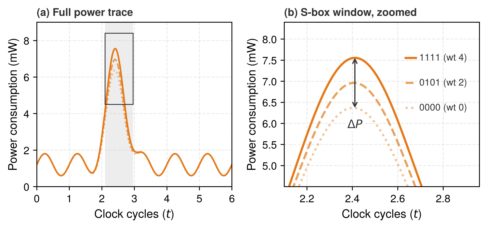
Статистические методы опираются на явную модель утечки. Нейронная сеть вместо этого выучивает признаки по размеченным трассам, и её предсказания промежуточного значения объединяются по трассам для оценки байтов-кандидатов ключа. Это работает, только если выученная связь обобщается на трассы, не использовавшиеся при обучении.
В руководстве по SCAAML Bursztein и Picod (2019 г.) использовал свёрточные нейронные сети (CNN) для восстановления ключей AES по энергетическим трассам, собранным на микроконтроллере STM32F415, исполнявшем открытую реализацию TinyAES. Модели предсказывали промежуточные значения алгоритма AES, например выход S-box9 в первом раунде, по энергетическим трассам. Демонстрация восстановила полный 128-битный ключ, комбинируя побайтовые предсказания. Её целью была незащищённая реализация, поэтому число необходимых ей трасс не задаёт ожиданий для устройств с маскированием, перемешиванием или иными контрмерами.
Обучаемые модели побочных каналов могут снизить трудоёмкость анализа или число трасс атаки, когда доступны подходящие обучающие данные и измеримая утечка. В парке, собранном из нескольких парт-номеров, переиспользуемые атакующие модели создают коррелированный риск. Перенос всё же требует оценки по устройствам, прошивкам, условиям измерений и контрмерам; совпадение парт-номеров само по себе его не гарантирует. Поэтому ответная защита должна учитывать и доступ злоумышленника к измерениям, и утечку самого вычисления.
13.7.5 Протекающие интерфейсы
Если атаки по побочным каналам утекают через непреднамеренные физические сигналы, то протекающие интерфейсы выдают информацию или принимают непроверенные данные через диагностические, обновляющие и коммуникационные каналы, которые система уже имеет. Открытый контроллер управления платой в стойке дата-центра или активный отладочный порт JTAG на полевой камере позволяет злоумышленнику читать память или переписывать прошивку, минуя все средства защиты ОС и уровня модели, — протекающие интерфейсы стоят прямо между физическим доступом и доверием к жизненному циклу.
Протекающий интерфейс — любая точка доступа, выдающая больше информации, чем задумано, или принимающая команды не от того актора. Типичные причины — слабая аутентификация, отсутствие шифрования, недостаточная изоляция и оставленные в продакшене интерфейсы разработки. Потребительские, медицинские и промышленные системы неоднократно демонстрировали этот шаблон: радионяни с Wi-Fi открывали незащищённые порты удалённого доступа,10 а уязвимости кардиостимуляторов11 показывали, как беспроводные интерфейсы становятся каналами управления, критичными для безопасности. Отладочные порты,12 оставленные включёнными на серийных устройствах, — канонический аппаратный случай: например, потребительская умная лампочка выдавала незашифрованные учётные данные Wi-Fi через такой порт, открывая злоумышленнику путь в домашнюю сеть без взлома какой-либо сетевой защиты.
В дата-центре есть свои привилегированные сервисные интерфейсы. Контроллер управления платой сервера обычно поддерживает управление питанием, доступ к консоли и управление прошивкой через внеполосную сеть, независимо от хостовой ОС. Поэтому компрометация его учётных данных или прошивки может открыть пути управления, не регулируемые хостовыми политиками доступа. Итоговый охват зависит от сегментации сети, привилегий контроллера и защиты обновлений прошивки. Проверки аттестации из Глава 13.6.4 помогают лишь тогда, когда доверенные измерения покрывают затронутые компоненты, а злоумышленник не может подделать свидетельства или изменить одобренное состояние верификатора. То же рассуждение применимо к периферии, где сервисный интерфейс без аутентификации может открыть пользовательские данные, изменить веса модели или отключить функции безопасности.
Поэтому защита интерфейсов — это работа с инвентарём не меньше, чем криптография. Сильная аутентификация, шифрованная связь, обнаружение аномалий, политика контроля доступа, периодический аудит и нулевое доверие по умолчанию служат одному принципу: каждый интерфейс должен обосновывать, что он открывает и кто им может пользоваться.
13.7.6 Риски цепочки поставок
Риски цепочки поставок расширяют решение о происхождении с открытых сервисных интерфейсов на каждый аппаратный и программный компонент на каждом этапе его жизни. Контрафактный модуль памяти, модифицированная прошивка сетевой карты (NIC) или скомпрометированная open-source-зависимость, размноженная по узлам кластера 128, закладывают бэкдор ещё до первого учебного задания. Наименьшая единица этого риска — контрафактная деталь. Контрафактный процессор, модуль памяти, датчик или сетевое устройство могут выглядеть и работать как подлинные, но деградировать быстрее, отказывать под нагрузкой или содержать скрытую схемотехнику, так что закупка становится частью границы безопасности. Организации, по незнанию развернувшие такие детали, могут также нарушить обязательства по безопасности, приватности или кибербезопасности, что делает доказательство происхождения компонента свидетельством того, что развёрнутая система соответствует сертифицированной.
Жизненный цикл компонента проходит через проектирование, производство, сборку, распространение и развёртывание (Рисунок 19), и на каждом этапе есть возможности для фальсификации или подмены. Переработанные электронные отходы могут быть перемаркированы как новые, дистрибьюторы могут подмешивать клонированные детали в легитимные поставки, а инсайдеры на производственных мощностях могут встраивать аппаратные трояны, которые могут остаться незамеченными при рутинных функциональных тестах. Микрография, рентгеновский контроль и функциональное тестирование дают разные свидетельства; их охват и стоимость определяются предполагаемой модификацией. Поэтому закупкам нужны основанные на рисках средства контроля происхождения наряду с инспекцией; успешное прохождение функционального теста не устанавливает происхождение компонента и не исключает дремлющее злонамеренное поведение.
Закупки для парка меняют форму этого риска. Учебный кластер закупается оптом по небольшому числу артикулов, так что каждый из 128 узлов эталонного кластера несёт те же ускорители, сетевые адаптеры, контроллеры управления и образы прошивок, что и любой другой. Компрометация общего проекта, релиза прошивки или производственной партии, следовательно, может затронуть многие узлы одновременно. Репликация не устраняет уязвимость, общую для реплик, хотя одна скомпрометированная единица является свидетельством о своём артикуле, а не доказательством, что затронута каждая единица с этим артикулом. Принцип ограничения доверия происхождением (принцип «Происхождение ограничивает доверие») применим к кремнию и прошивкам в той же мере, что и к данным. Записи о поставщике, партии и прошивках помогают определить затронутую совокупность; концентрация у одного поставщика увеличивает общие зависимости даже при полной отчётности.
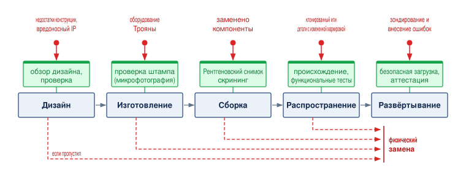
Компрометация аппаратного обеспечения меняет и экономику реагирования. Уязвимости программного обеспечения часто можно закрыть удалённым патчем, но компрометация аппаратуры, проскользнувшая мимо всех проверок до этапа развёртывания (Рисунок 19), может потребовать физической замены. Такая возможность добавляет к ожидаемым потерям стоимость замены, прерывание обслуживания и повторную валидацию и усиливает аргументы в пользу превентивных проверок до развёртывания.
Спорный отчёт 2018 года о чипах слежки, вживлённых в серверные материнские платы, который названные компании публично отрицали (Robertson и Riley 2018 г.), показывает, почему утверждения нужно отделять от подтверждённой компрометации. Заявление о развёрнутых компонентах требует свидетельств с соответствующих этапов производства, сборки, распространения и интеграции, а валидация компонентов, мониторинг во время исполнения, аттестация и аппаратные корни доверия каждые дают часть этих свидетельств.
Инженерный вывод состоит в том, что доверие к аппаратуре должно быть подтверждено непрерывно на протяжении проектирования, производства, закупок, развёртывания и вывода из эксплуатации. Доверенная среда исполнения (TEE) изолирует выбранный код и данные от частей окружающего хоста. Аттестация даёт криптографические свидетельства об этой защищённой среде до того, как другой компонент доверит ей секреты. Ни один из этих механизмов не устанавливает, что модель поведенчески корректна, и оба зависят от явного набора доверенных аппаратных и программных компонентов.
Контрольная точка 13.3: Проверка знаний: безопасность аппаратного обеспечения
Прежде чем перейти от аппаратных угроз к защитным механизмам, закреплённым в аппаратуре, убедитесь, что каждая семья уязвимостей привязана к решению о развёртывании, которое она проверяет.
Эти аппаратные угрозы опасны для модели, её данных и среды исполнения, которая их защищает. Они также задают предел всех рассмотренных до сих пор программных средств защиты, поскольку каждое из них предполагает, что некоторый слой под ним остаётся доверенным. Поэтому архитектура защиты должна указывать, каким компонентам она доверяет и что добавляет каждый слой при отказе другого.
13.8 Комплексные архитектуры защиты
Противник, обошедший лимит запросов к API, всё ещё может столкнуться с проверками авторизации, ограничениями вывода или изолированной средой исполнения. Эти средства защиты разных активов и ограничивают разные действия. Безопасные МЛ-системы используют эшелонированную оборону, чтобы ограничить последствия отказа отдельного механизма. Выгода зависит от того, сохраняют ли оставшиеся механизмы силу принуждения; несколько проверок, использующих одну и ту же скомпрометированную учётную запись или среду исполнения, не дают независимых барьеров.
Контрмеры распадаются на четыре архитектурных яруса (Рисунок 20). Аппаратные механизмы, определённые в Глава 13.8.1, включают доверенные среды исполнения, secure boot, хранение ключей в HSM и идентификацию устройств на основе физических неклонируемых функций (PUF). Платформенные средства включают изоляцию контейнеров, сегментацию сети, контроль доступа и телеметрию среды исполнения. Слой модели включает состязательное обучение, валидацию входных данных, мониторинг выходных данных и лимитирование запросов, а средства слоя данных — дифференциальную приватность, шифрование при хранении, отслеживание происхождения и безопасную агрегацию.
Эти ярусы разделяют защиты по защищаемому слою, что отличается от слоёв данных, модели, интерфейса и инфраструктуры из Глава 13.4.1.1, разделяющих точки входа противника. Две карты совпадают везде, кроме интерфейса. Средства контроля интерфейса, такие как лимитирование запросов, валидация входных данных и мониторинг выходных данных, охраняют границу запросов модели, поэтому стек относит их к ярусу модели. Однако обслуживающая платформа под ним обеспечивает их исполнение, из-за чего обсуждение мониторинга среды исполнения ниже рассматривает их как платформенные механизмы. Угрозы инфраструктуре достаются аппаратному и платформенному ярусам.
Стрелка зависимости выделяет поддержку среды исполнения, которую требуют многие средства защиты. Скомпрометированный хост может раскрыть необработанные записи или изменить механизм приватности до публикации, но не задним числом не отменяет гарантию дифференциальной приватности артефакта, уже корректно опубликованного правильно реализованным механизмом. Анализ зависимостей должен идентифицировать защищаемый актив и публикацию, а не предполагать, что все средства защиты отказывают вместе.
Эшелонированная защита (известная также как defense in depth) делает эти зависимости явными. Дифференциальная приватность ограничивает то, что данная публикация раскрывает о вкладе отдельного человека; она не защищает отдельную копию необработанных учебных записей от кражи. Федеративное обучение меняет место хранения учебных данных, но само по себе не ограничивает то, что раскрывают обновления. Аппаратная изоляция может защитить исполнение в рамках своей модели угроз, не устанавливая, что приложение следует задуманной политике работы с данными. Комбинирование этих механизмов требует формулирования каждой гарантии и проверки того, какие предположения сохраняют другие слои.
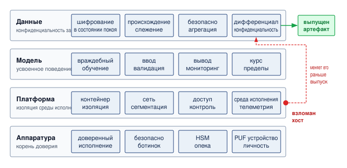
Стек также упорядочивает зависимости. Ограничение скорости, реализованное обслуживающей платформой, надёжно не более чем сама платформа, а платформа — не более чем прошивка и процессор, на которых она работает. Поэтому доверие выстраивается снизу вверх: кремний служит его якорем, средства контроля платформы определяют, как модель развёртывается и контролируется, решения на уровне модели формируют саму выученную функцию, а уровень данных определяет, что раскроет корректно вычисленный релиз.
13.8.1 Аппаратные основы безопасности
Закрепление нижнего уровня этого стека в кремнии важно потому, что программные средства контроля доступа и зашифрованные диски не способны защитить открытый текст весов модели или ключей в RAM, когда атакующий получает root-доступ к host-ОС или облачному гипервизору. Программные проверки, реализуемые исключительно скомпрометированной операционной системой, можно отключить или подделать, а незаблокированный отладочный интерфейс может аналогичным образом раскрыть состояние исполнения, которое программная политика была призвана защитить. Средства контроля, реализуемые в отдельном аппаратном домене доверия, остаются эффективными, даже когда операционная система, среда исполнения или код приложения скомпрометированы — это мотивирует точно определить, где принимается каждое решение по безопасности и кто может его изменить.
Аппаратная безопасность создаёт корень доверия, закреплённый в кремнии, и даёт защитным механизмам более высоких уровней фундамент, который программное обеспечение хоста не может переписать. Системы машинного обучения, развёрнутые в периферийных устройствах, встраиваемых системах и недоверенной облачной инфраструктуре, часто зависят от этого якоря, поскольку атакующий может иметь физический доступ, доступ как совладелец оборудования или административный доступ к частям стека.
Граница доверия приобретает особое значение, когда системы должны удовлетворять нормативным требованиям. Системы ML в здравоохранении, обрабатывающие охраняемую медицинскую информацию в рамках HIPAA, обязаны реализовывать технические меры защиты, такие как контроль доступа, средства аудита, защита целостности и безопасность передачи. Системы, обрабатывающие персональные данные в рамках территориального и материального охвата GDPR, также должны демонстрировать надлежащие технические и организационные меры, включая принципы встраивания защиты данных в проектирование (data-protection-by-design). Аппаратная безопасность сама по себе не удовлетворяет этим требованиям, но она предоставляет гарантии загрузки, среды исполнения, управления ключами и идентификации устройств, на которые часто опираются программные средства контроля.
Четыре аппаратных механизма безопасности делят этот фундамент, разделяя целостность запуска, изоляцию среды исполнения, хранение ключей и идентификацию устройств. Secure boot проверяет, была ли система запущена из подлинного кода, тогда как доверенные среды исполнения (TEE) изолируют чувствительные вычисления во время их выполнения на недоверенном хосте. Поскольку оба механизма опираются на криптографические ключи и идентификацию устройства, аппаратные модули безопасности (HSM) генерируют и используют ключи, не раскрывая их обычной памяти, а физически неклонируемые функции (PUF) выводят привязанную к оборудованию идентичность, которую скопировать сложнее, чем программный идентификатор. Таблица 7 сравнивает четыре примитива после того, как каждый из них рассмотрен. Они не отображаются один к одному на четыре решения по развёртыванию из Таблица 6 и работают лучше всего, когда комбинируются через границы оборудования, прошивки и программного обеспечения, а не выбираются как отдельные продукты.
Доверенные среды исполнения
Прежде всего TEE — это решение о границе доверия: какие части модели, ключевого материала, входных данных или пути аттестации должны оставаться защищёнными, даже если окружающий хост скомпрометирован. Доверенная среда исполнения (TEE) — это аппаратно изолированная область процессора, реализующая эту границу. TEE обеспечивают конфиденциальность, целостность и изоляцию среды исполнения в рамках заданной модели угроз. Их гарантия зависит от доверенного оборудования, прошивки и кода внутри защищённой границы.
Для машинного обучения TEE может сохранять конфиденциальность параметров модели и чувствительных входных данных во время инференса и защищать исполнение от вмешательства на уровне хоста. Она может, например, помешать вредоносному ПО на том же устройстве извлечь параметры модели или удерживать вычисления над данными лиц или отпечатков пальцев внутри защищённой границы. Корректное исполнение утверждённой модели ничего не говорит о том, точны или безопасны её предсказания.
Изоляция такого рода проявляется в двух масштабах. На потребительских устройствах выделенный сопроцессор безопасности, такой как Apple Secure Enclave, сохраняет учётные данные и биометрические признаки защищёнными, даже если ядро на прикладном процессоре скомпрометировано (Apple 2024 г.b). В дата-центре соответствующая форма — конфиденциальная виртуальная машина, которая защищает целевого гостя, включая его веса модели и пользовательские входы, от гипервизора и операторов хоста и которую парк допускает к задаче только после удалённой аттестации (Глава 13.6.4).
Удалённая аттестация поддерживает распределённое решение о доверии: прежде чем компоненты начнут обмениваться чувствительными данными или обновлениями модели, верификатор проверяет свежие свидетельства об измеренном коде и его аппаратно защищённой границе на соответствие политике допуска. Привязка коммуникационного ключа к этим свидетельствам связывает принятую идентичность с последующим каналом. Одна лишь аттестация не устанавливает корректность каждой операции среды исполнения. Для ML защита следует за вычислением, поэтому входы, веса и активации остаются покрытыми только пока их обработка и хранение находятся внутри выбранной границы.
Реализации TEE по-разному сочетают изоляцию исполнения, защищённую память, механизмы целостности и защищённое хранение ключей. Граница изоляции может окружать область приложения, защищённый режим процессора или целую виртуальную машину. Средства контроля доступа ограничивают, какие субъекты могут читать защищённое состояние, а шифрование и аутентификация памяти могут расширить защиту за пределы границы процессора там, где это поддерживает архитектура. Постоянное хранилище нуждается в собственной защите, когда данные покидают защищённую память. Внутри границы исполнения вычисления используют открытый текст напрямую. Поэтому анализ развёртывания должен прослеживать, где существует открытый текст, какие компоненты могут получить к нему доступ и какие проверки целостности и свежести платформа реально предоставляет.
Платформы различаются главным образом размером защищённой границы. ARM TrustZone13 разделяет мобильный или встраиваемый процессор на защищённый и обычный миры. Intel SGX изолирует отдельные анклавы внутри адресного пространства приложения на серверах. Конфиденциальные виртуальные машины, такие как построенные на AMD SEV-SNP или Intel TDX, выносят границу на целую гостевую операционную систему, что позволяет запускать неизменённые ML-стеки обслуживания внутри неё ценой большего объёма доверенного кода.
Secure Enclave в системе-на-кристалле (SoC) Apple демонстрирует эти границы в кремнии (Рисунок 21). Его выделенный процессор, истинный генератор случайных чисел (TRNG), ускоритель открытых ключей (PKA) и криптографические движки работают отдельно от прикладного процессора, который связывается с ними через интерфейс mailbox. Движок защиты памяти шифрует и аутентифицирует внешнюю память анклава, а защищённые пути ключей поддерживают шифрование хранилища (Apple 2024 г.b). На потребительских устройствах Apple применяет эту архитектуру в Face ID, привязывая биометрические шаблоны и логику сравнения к Secure Enclave, а не рассматривая их как обычные данные приложения (Apple 2024 г.a). Этот пример демонстрирует изоляцию выделенных операций безопасности и их состояния; он не означает, что произвольные веса или активации прикладной модели находятся внутри Secure Enclave, поскольку их защита зависит от путей исполнения и данных, поддерживаемых платформой.
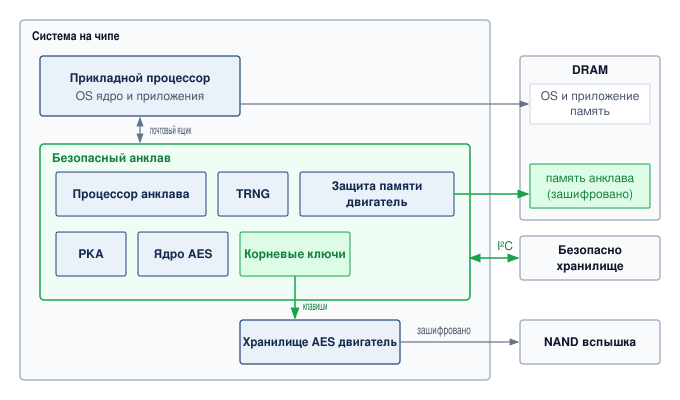
Среды доверенного исполнения несут издержки по каждому из трёх измерений C³. Защищённая память, шифрование памяти и переходы между доверенным и недоверенным режимами могут добавлять вычисления и задержку, а устройства с питанием от батареи платят ещё и энергией за защищённые обращения к памяти и криптографическую работу. Стоимость разработки растёт, потому что код внутри границы должен следовать протоколам изоляции, аттестации и обновления, а некоторые развёртывания к тому же должны проходить формальную сертификацию, например Common Criteria — международный стандарт оценки продуктов безопасности. Распределённое обучение и федеративный инференс добавляют координационную работу, когда их политика допуска требует аттестации и защищённого обмена ключами. Центральный верификатор может выполнять проверки допуска; прямая взаимная аттестация каждой пары участников по своей сути не требуется. Таким образом, TEE подходят для тех развёртываний, чья модель угроз — будь то злонамеренные пользователи, совместные арендаторы облака или злонамеренные инсайдеры — оправдывает эти вложения.
Бюджеты защищённой памяти и накладных расходов
Аппаратные функции безопасности бюджетируются как любой другой ресурс. Каждый примитив тратит время на пересечения своей границы и ёмкость защищённой памяти, и оба вида издержек должны быть оценены до того, как дизайн зафиксирует примитив. Накладные расходы аппаратной безопасности должны быть измерены для выбранной реализации. Переход в secure-world имеет цену за переход, а не автоматически цену за инференс: результат зависит от того, как часто путь инференса пересекает границу и какие данные он копирует. Шифрование, эффекты кэша и страничный обмен добавляют отдельные издержки. Энергетические накладные расходы требуют измерений мощности и прошедшего времени; их нельзя вывести из одной лишь цифры задержки перехода.
Память — второй бюджет. Защищённый рабочий набор конкурирует за зависящую от платформы ёмкость памяти. Некоторые реализации поддерживают защищённый страничный обмен сверх резидентной ёмкости, поэтому переполнение может налагать существенные издержки на перемещение данных, а не абсолютный предел размера модели. Сжатие или разбиение на разделы меняет эти издержки и может также изменить то, какие значения остаются защищёнными.
Функции безопасности масштабируются иначе, чем вычислительные ресурсы. Именно ёмкость защищённой памяти, а не памяти хоста, определяет, какая часть модели может оставаться резидентной внутри TEE без выгрузки на диск. На старой конфигурации Intel SGX с кэшем страниц анклава (защищённой резидентной памятью) объёмом 128 MB одни лишь FP32-веса ResNet-50 заняли бы около 76.2 percent этой ёмкости. Модель ResNet-18 занимает около 46.8 MB с FP32-весами или 11.7 MB с INT8-весами, тогда как ResNet-50 — около 102.2 MB с FP32-весами или 25.6 MB с INT8-весами — и это ещё без активаций и буферов среды исполнения. Референсная модель парка находится далеко за пределами этого масштаба. FP16-веса модели Archetype A (GPT-4/Llama-3) занимают столько же байт, сколько градиент 350 GB, который она редуцирует на каждом шаге, — на порядки больше, чем кэш страниц анклава. Поэтому конфиденциальные вычисления в масштабе парка проводят свою границу вокруг целой конфиденциальной виртуальной машины — всего гостя, защищённого от хоста, — а не вокруг анклава отдельного приложения.
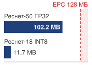
Одни лишь FP32-веса ResNet-50 почти полностью заполняют кэш страниц анклава старого поколения.
Помимо ёмкости, защита памяти добавляет задержку, размер которой зависит от того, какие угрозы находятся в области рассмотрения. Шифрование и аутентификация — разные операции, и одно лишь шифрование AES не проверяет целостность. Режим с аутентификацией или отдельный механизм аутентификации нужны тогда, когда в область рассмотрения входит подмена данных, а задержка должна быть измерена для фактического объёма данных и оборудования.
Гарантии TEE зависят от её защищённой инициализации и пути аттестации, а не только от момента загрузки хоста. Некоторые конструкции анклавов явно допускают недоверенную операционную систему хоста, тогда как другие доверенные среды полагаются на верифицированную цепочку запуска платформы. Secure boot дополняет эти границы, аутентифицируя компоненты, включённые в такую цепочку; модель угроз должна определять, какие прошивки и код инициализации остаются доверенными.
Защищённая загрузка
Secure boot — это механизм, гарантирующий, что устройство загружает только те программные компоненты, которые криптографически верифицированы согласно настроенной политике доверия платформы. При запуске каждый этап процесса загрузки — загрузчик, ядро и базовая операционная система — проверяется на соответствие заведомо корректной цифровой подписи. Если какая-либо подпись не проходит проверку, последовательность загрузки останавливается, блокируя компоненты, не прошедшие аутентификацию. Цепочка опирается на доверенный начальный этап; подписанное, но уязвимое программное обеспечение остаётся риском.
Компрометация процесса загрузки, особенно на встраиваемом или периферийном (edge) оборудовании, может позволить загрузить вредоносное ПО до того, как начнёт работу среда исполнения ML, давая атакующим возможность перехватить веса модели, подменить обучающие данные или перенаправить результаты инференса. Такие нарушения могут привести к неверным или манипулированным предсказаниям, несанкционированному доступу к данным или перепрофилированию устройства под ботнеты или майнинг криптовалют.
Для систем машинного обучения secure boot аутентифицирует компоненты, включённые в его цепочку верификации. Артефакты модели получают такую защиту только тогда, когда верифицированный загрузчик проверяет их подписи или подписанный манифест перед загрузкой; одна лишь верификация загрузки не аутентифицирует веса, прочитанные позже из хранилища. Потоки безопасного обновления должны распространять ту же политику верификации на заменяемые прошивки, среды исполнения и артефакты моделей.
Secure boot часто работает в связке с аппаратными TEE, чтобы установить неразрывную цепочку доверия до начала исполнения кода. Эта цепочка представляет собой пошаговое рукопожатие верификации, в котором каждый этап доверенного исполнения сопровождается явным криптографическим шлюзом аутентификации (Regenscheid 2018 г.), как показывает Рисунок 22. Исполнение идёт от неизменяемого корня загрузки через верифицированный загрузчик и операционную систему; если какая-либо проверка подписи не проходит, исполнение останавливается, а компонент отвергается. Для конвейеров машинного обучения этап 3 расширяет эту цепочку за пределы обычного системного ПО: верифицированная ОС или загрузчик аутентифицируют манифест модели и дайджест артефакта перед запуском авторизованной ML-рабочей нагрузки. Финальный этап подчёркивает, что, хотя аутентификация во время загрузки блокирует несанкционированные или подменённые бинарники, динамические средства контроля во время исполнения остаются необходимыми для защиты от атак после загрузки и эксплуатирования, зависящих от данных.
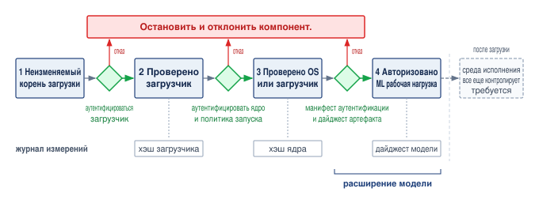
Доверие при запуске — это то, что придаёт смысл описанной ранее изоляции во время исполнения, и оно должно переживать обновления. Подписанная цепочка загрузки Apple верифицирует прошивку Secure Enclave до того, как будут обработаны какие-либо биометрические данные, и устанавливает только те версии ПО, которые Apple всё ещё подписывает, так что допущения безопасной начальной загрузки сохраняются только через контролируемый путь обновления (Apple 2021 г.a, 2024 г.b, 2021 г.b).
Secure boot также создаёт обязательства по управлению ключами и жизненному циклу. Предприятия должны защищать подписывающие ключи, распространять доверенный материал для верификации и поддерживать отзыв или восстановление в случае компрометации авторизованного ключа. Затронутая цепочка доверия зависит от полномочий этого ключа и конструкции восстановления платформы. Верификация добавляет работу при запуске, и каждый компонент, охваченный политикой, должен оставаться аутентифицированным в ходе обновлений — будь то отдельная подпись или дайджест, привязанный в аутентифицированном манифесте. Развёртывание должно определять, какие компоненты цепочка фактически охватывает.
В масштабе парка идентичность устройства и свидетельства состояния запуска поддерживают различные решения о допуске. Device Identifier Composition Engine (Trusted Computing Group 2018 г.) комбинирует секрет устройства с измерениями программного обеспечения, выводя идентичности, привязанные к измеренному состоянию. IEEE 802.1AR (IEEE 802.1 Working Group 2018 г.) определяет криптографически привязанные идентичности устройств и их провижининг; сама по себе идентичность устройства не устанавливает, какое ПО исполняется. Аттестация парка (Глава 13.6.4) связывает аутентифицированную идентичность с приемлемыми свидетельствами состояния до того, как узел получит ключи или присоединится к задаче.
Secure boot, расширенный через загрузчик моделей и дополненный контролируемыми обновлениями, может установить, что настроенный центр полномочий одобрил загруженные компоненты. Корректное поведение модели и отсутствие уязвимостей в аутентифицированном ПО остаются отдельными утверждениями. Изоляция и мониторинг во время исполнения закрывают другие части этого аргумента о гарантиях.
Аппаратные модули безопасности
В то время как TEE и secure boot обеспечивают изоляцию во время исполнения и проверку целостности, аппаратные модули безопасности (HSM) специализируются на криптографических операциях, лежащих в основе этих защит. HSM — это устойчивое к физическому вскрытию физическое устройство, предназначенное для выполнения криптографических операций и безопасного управления цифровыми ключами. HSM стандартны для финансов, обороны и облачной инфраструктуры; в ML-конвейере они защищают ключи, от которых зависят целостность модели и конфиденциальность данных.
HSM предоставляют изолированную, укреплённую среду для выполнения чувствительных операций, таких как генерация ключей, цифровая подпись, шифрование и расшифрование. В отличие от процессоров общего назначения, они спроектированы так, чтобы противостоять физическому вскрытию и атакам по побочным каналам, и обычно включают защищённое хранилище, криптографические ускорители и внутренний журнал аудита. HSM могут быть реализованы как автономные устройства, подключаемые модули или интегрированные чипы, встроенные в более крупные системы.
В системах машинного обучения HSM могут защищать подписывающие ключи и ключи шифрования ключей, которые оборачивают — то есть шифруют — ключи шифрования данных. Это различие важно, потому что корневой ключ может оставаться внутри HSM, тогда как рабочая нагрузка использует выпущенный ключ данных внутри своей авторизованной границы исполнения. Эту роль иллюстрируют два распределённых сценария. HSM может защищать подписывающий ключ центра сертификации, используемый для сертификации зарегистрированных устройств; каждое устройство затем доказывает владение собственным приватным ключом. Сертификация устанавливает идентичность, а не доброкачественное поведение: аутентифицированный, но скомпрометированный клиент всё ещё может отправлять отравленные обновления. HSM также может обернуть ключ расшифрования модели для привязанного к аттестации публичного ключа TEE после того, как верификатор примет свидетельства. Удержание весов вне памяти хоста в открытом виде тогда зависит от обращения с ключами, загрузчика и пути исполнения TEE, а не от одной лишь операции обёртывания.
HSM также играют роль в поддержании целостности моделей машинного обучения. Во многих производственных конвейерах модели должны быть подписаны перед развёртыванием, чтобы в среды исполнения принимались только верифицированные версии. Подписывающие ключи, используемые для аутентификации моделей, могут храниться и управляться внутри HSM, что даёт криптографическую гарантию подлинности и неизменности развёртываемого артефакта. Аналогично безопасные обновления прошивок и изменения конфигурации — независимо от того, касаются ли они моделей, гиперпараметров или вспомогательной инфраструктуры — могут валидироваться с помощью подписей, созданных HSM.
Помимо защиты рабочих нагрузок инференса, HSM могут использоваться для защиты обучения моделей. Во время обучения данные могут поступать из распределённых и потенциально недоверенных источников. Удерживая ключи, которыми подписываются манифесты обучающих данных и оборачиваются ключи шифрования данных, HSM помогают конвейерам обучения выполнять шифрование, проверки целостности и контроль доступа безопасно и в соответствии с организационными или юридическими требованиями. В регулируемых отраслях, таких как здравоохранение и финансы, такие защиты часто необходимы для соблюдения обязательных мер безопасности. Например, HIPAA Security Rule требует технических мер защиты, таких как контроль доступа, аудит, защита целостности и безопасность передачи, считая шифрование и некоторые средства контроля целостности адресуемыми спецификациями реализации. GDPR перечисляет псевдонимизацию и шифрование среди примеров уместных технических и организационных мер там, где они соответствуют уровню риска.
Развёртывание HSM вводит бюджет ёмкости и интеграции. Пропускная способность подписывания, задержка расшифровки ключей и сетевой доступ к удалённому HSM должны быть измерены для фактически используемых операций, поскольку HSM находится на пути подписывания и выдачи ключей, и именно его пропускная способность, а не пропускная способность ускорителя, ограничивает скорость, с которой ключи достигают парка. Защищённая граница ключей может также потребовать изменений в интерфейсах приложений и провижининге парка. Требования сертификации и закупок, включая применимые стандарты криптографических модулей, ограничивают, какие устройства и конфигурации могут использоваться.
HSM сочетают хранение ключей с защищёнными криптографическими операциями. Для встраиваемых систем с ограниченными ресурсами может понадобиться более компактный механизм для более узкой задачи: вычисление зависящего от устройства секрета без хранения постоянной копии этого секрета. Для этой цели используются функции физически неклонируемые (PUF), опирающиеся на физические свойства чипа. Они могут поддерживать выведение ключей и идентификацию, но не заменяют полноценную роль HSM в криптографической обработке и соблюдении политик.
Физически неклонируемые функции
PUF14 предоставляют присущий аппаратуре механизм генерации криптографических ключей и аутентификации устройства, используя физическую случайность полупроводникового производства (Gassend и др. 2002 г.). В отличие от традиционных ключей, хранящихся в памяти, PUF генерирует секретные значения на основе микроскопических вариаций физических свойств чипа, которые присущи производственному процессу и трудно клонируются или предсказываются даже производителем. Из-за таких вариаций, как концентрация легирующей примеси и шероховатость края линий, чипы, изготовленные по одним и тем же фотошаблонам, измеримо различаются в поведении по времени или напряжению, и схема PUF усиливает эти различия, превращая их в зависящий от устройства отклик на каждый входной вызов (challenge). Атакующий всё же может предсказывать отклики уязвимой конструкции, не клонируя чип физически.
Этот механизм «вызов–отклик» позволяет PUF выполнять несколько криптографических ролей. Они могут использоваться для выведения зависящих от устройства ключей, которые не требуется хранить внешне, уменьшая поверхность атаки при эксфильтрации ключей. Тот же механизм поддерживает безопасную аутентификацию и аттестацию, где устройства должны доказать свою личность доверенным серверам или аппаратным шлюзам. Эти свойства делают PUF естественным выбором для систем машинного обучения, развёрнутых во встраиваемых и распределённых средах.
Для парков устройств ML PUF может уменьшить необходимость внедрять и постоянно хранить уникальный секрет в каждом устройстве. Устройства класса телефонов архетипа C (федеративный MobileNet) и камеры и дроны пограничных развёртываний всё же нуждаются в регистрации (enrollment): верификатор должен связать устройство с доверенными доказательствами аутентификации и управлять его допуском и отзывом. Ключ, выведенный из PUF, может шифровать хранящуюся на устройстве модель, так что копирование файла не даёт ключа, привязанного к устройству и расшифровывающего его. Аутентификация может использовать зарегистрированные пары «вызов–отклик» или учётные данные, основанные на выведенном ключе, в зависимости от конструкции. У обеих защит есть пределы. Открытые веса, извлечённые во время выполнения, раскрывают разделяемую модель независимо от того, как был сгенерирован ключ хранения, а успешная аутентификация устанавливает, какое устройство говорит, но не то, что его среда исполнения не скомпрометирована.
Панель A на Рисунок 23 формулирует общий принцип, а панели B–D показывают три архитектуры PUF, опирающиеся на разные физические источники вариаций (Gao и др. 2020 г.). В каждой из них два устройства одного и того же дизайна отвечают на вызов
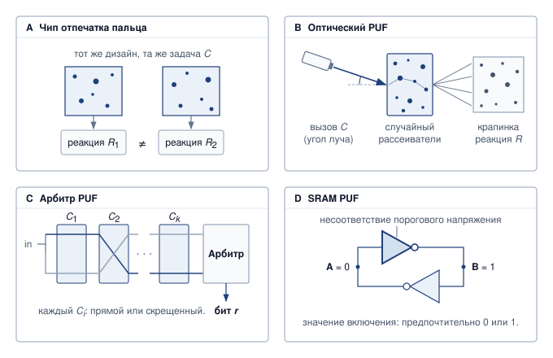
У PUF есть и инженерные сложности. Их отклики дрейфуют с температурой, напряжением и старением, поэтому в производственных конструкциях добавляют коррекцию ошибок или вспомогательные данные и калибруют устройства при изготовлении — за счёт площади на кристалле и времени тестирования. Управление большими наборами пар «вызов–отклик» порождает вопросы хранения, согласованности и отзыва, а статистическая структура некоторых архитектур PUF делает их отклики предсказуемыми для атак моделирования на основе машинного обучения, если наблюдается достаточно пар. В этих пределах PUF снижают нагрузку по управлению ключами для больших парков устройств и предоставляют привязанную к аппаратуре идентичность, дополняющую безопасную загрузку, TEE и HSM.
Сравнение механизмов
Доверенные среды исполнения, безопасная загрузка, аппаратные модули безопасности и физически неклонируемые функции охватывают разные уровни платформы, а не заменяют друг друга. Проектное решение состоит в том, какая конструкция владеет какой границей доверия, и Таблица 7 сопоставляет все четыре по функциям, применению в ML и компромиссам.
| Механизм | Основная функция | Применение в ML | Компромиссы |
|---|---|---|---|
| Доверенная среда исполнения (TEE) | Изолированная среда исполнения для защищённых вычислений | Защищённый инференс и приватность на устройстве для чувствительных входов и выходов | Дополнительная сложность, ограничения памяти, цена производительности; требует разработки доверенного кода |
| Безопасная загрузка (Secure Boot) | Верифицированная последовательность загрузки и проверка прошивок | Аутентифицирует компоненты загрузки; защита модели требует верифицирующего загрузчика | Сложность управления ключами, привязка к вендору; влияние на производительность запуска |
| Аппаратный модуль безопасности (HSM) | Защищённая генерация и хранение ключей, криптографическая обработка | Подписывание ML-моделей, защита обучающих конвейеров, верификация прошивок | Высокая стоимость, накладные расходы на интеграцию, ограниченный ввод-вывод; требует инфраструктурного обеспечения |
| Физически неклонируемая функция (PUF) | Привязанная к аппаратуре идентичность и выведение ключей | Привязка модели, аутентификация устройств, защита IP во встраиваемых развёртываниях | Чувствительность к среде, атаки моделирования; нужны коррекция ошибок и калибровка |
Вместе эти аппаратные примитивы поддерживают стратегию эшелонированной защиты для обеспечения безопасности ML-систем в враждебных средах. Их интеграция требует явного обоснования уверенности: какие компоненты остаются доверенными, какие доказательства поддерживают это доверие и какие атаки находятся вне зоны защиты. Устройства, критичные к безопасности, и распределённые обучающие системы нуждаются в таком обосновании не меньше, чем в самих механизмах.
Аппаратные примитивы поставляют доказательства и принуждение для отдельных свойств платформы. Механизмы развёртывания используют эти возможности, чтобы решать, какие артефакты модели могут быть загружены и какие вызывающие стороны могут их использовать. Переход от уверенности в платформе к прикладной политике — это, следовательно, задача композиции: загрузчик и конечная точка обслуживания должны обеспечивать задуманные разрешения внутри защищённой границы.
13.8.2 Безопасное развёртывание модели
Обучение устойчивой модели внутри защищённого кластера не даёт ничего, если экспортированный артефакт упакован как недоверенный pickle-файл, хранится без шифрования или обслуживается за API-ключом без квот на каждого субъекта. Доверенная платформа определяет, где модель работает; механизмы развёртывания решают, кто может её загрузить, кто может её вызывать и переживёт ли её поведение контакт с пользователями, операторами и атакующими. По мере того как модели перемещаются на пограничные устройства, в публичные API и мультитенантные платформы, именно сериализация, упаковка и политики доступа к конечным точкам определяют, переживут ли инференс целостность, конфиденциальность и доступность, установленные при обучении.
Поскольку в Глава 13.5.1.4 уже были количественно описаны квоты на запросы на границе API, возмущение выходных данных и тарифные режимы, противодействующие извлечению модели, средства защиты этапа развёртывания в этом разделе сосредоточены на хранении артефактов, криптографической упаковке и инфраструктуре аутентификации конечных точек, тогда как средства защиты этапа проектирования из Глава 13.8.4 формируют поведение модели и доказательства принадлежности. Средства защиты развёртывания также должны выдерживать обычную оптимизационную работу — квантизацию, прореживание (pruning) и дистилляцию, — где повышение производительности не должно компрометировать целостность артефактов, доказательства принадлежности или границы контроля доступа.
После завершения обучения модель должна быть безопасно упакована для развёртывания. Аутентифицированное шифрование защищает хранимые артефакты, пока его ключи остаются внутри заданной границы доверия; подписанный манифест аутентифицирует ожидаемый дайджест артефакта перед загрузкой. Обфускация может повысить трудоёмкость обратной разработки, но не даёт гарантий конфиденциальности, которые обеспечивает шифрование. Хранение ключей во время исполнения и политика верификации загрузчика определяют, переживёт ли защита упаковки выполнение кода.
Среды развёртывания должны соблюдать политики доступа на конечных точках инференса. OAuth обеспечивает делегированную авторизацию; взаимный TLS аутентифицирует стороны, предъявляющие сертификаты; API-ключи идентифицируют учётные данные, которые сервис сопоставляет с разрешениями и квотами. Контроль доступа на основе ролей (RBAC) может ограничивать эти разрешения по операционным ролям. Эти механизмы поддерживают контроль запросов из Глава 13.5.1.4, но учётные данные не являются доказательством уникального человека или организации. Атакующий, способный завладеть множеством аккаунтов, всё ещё может распределять запросы между удостоверениями, поэтому выдача аккаунтов, кумулятивные бюджеты и обнаружение злоупотреблений остаются частью границы.
API-ключ подтверждает владение учётными данными и позволяет бэкенду соблюдать связанные с ними политики. Хранение ключей вне исходного кода снижает случайное раскрытие в системе контроля версий, но одни лишь переменные окружения не предотвращают утечки через журналы, инспекцию процессов или скомпрометированную среду исполнения. Получение секретов, ограниченные по объёму разрешения, ротация и редактирование журналов должны проектироваться совместно. Верификация модели по аутентифицированному манифесту, ограничение входных данных, контроль частоты запросов и журналирование событий безопасности дополняют управление учётными данными, а мониторинг во время исполнения (Глава 13.8.3) распространяет эти защиты на активную эксплуатацию.
13.8.3 Мониторинг системы во время исполнения
Двоичный файл модели, прошедший криптографическую проверку подписи при загрузке, всё ещё может получать состязательные промпты, дрейфовать к небезопасным генерациям или иметь изменённые в памяти веса во время работы. Безопасное развёртывание контролирует, кто может загружать модель и вызывать конечную точку, тогда как мониторинг во время исполнения проверяет, продолжает ли живая система вести себя как одобренная — в облачных сервисах, на периферийных устройствах и встраиваемом оборудовании.
Мониторинг во время исполнения должен решать, должен ли вход достигать модели, нормально ли ведёт себя выход, и остаётся ли обслуживающая система той, что была изначально развёрнута. Соответствующие механизмы — валидация входных данных, мониторинг выходных данных и проверки целостности системы.
Валидация входных данных
Валидация входных данных проверяет входящие данные до того, как они достигнут модели машинного обучения. Проверки формата и диапазона обеспечивают явные контракты на вход, тогда как статистические и семантические проверки оценивают, соответствует ли вход ожидаемым условиям. Такие проверки могут отклонять некорректно сформированные входы, нарушающие предобработку или инференс, и некоторые состязательные входы, специально созданные для вызова неверных предсказаний. Прохождение валидации означает лишь, что реализованные проверки приняли вход, а не что модель обработает его корректно.
Небольшие тщательно подобранные изменения входных данных могут заставить модели выдавать уверенные, но неверные предсказания (Goodfellow и др. 2015 г.). Такие входы могут удовлетворять обычным проверкам типа и диапазона. Поэтому валидация входных данных дополняет оценку робастности модели; она не может заменить проверку того, как выученная функция ведёт себя на валидных, но состязательных входах.
Методы валидации варьируются от низкоуровневых проверок размера, типа и диапазона значений до семантических фильтров, таких как детектор лиц на загруженном изображении или детектор речевой активности на голосовом фрагменте. Эти проверки отклоняют входы, нарушающие заявленный контракт, но состязательный вход, удовлетворяющий контракту, всё равно достигает модели, а собственные частоты ошибок семантического фильтра должны учитываться при оценке валидации.
В генеративных системах валидация входных данных может включать фильтрацию промптов по контентной политике приложения. Например, приложение для медицинского образования может отклонять запросы на генерацию вымышленных утверждений о лечении. Фильтры могут использовать списки ключевых слов, регулярные выражения или лёгкие классификаторы, оценивающие намерение промпта. Их эффективность зависит от политики, детектора и протестированных входов, включая перефразирования и состязательные промпты. Они не могут установить, что принятый промпт даст приемлемый выход, поэтому мониторинг выходных данных остаётся необходимым.
В некоторых приложениях для оценки того, статистически ли напоминают входящие данные то, что модель видела при обучении, используются также проверки распределения. Например, конвейер компьютерного зрения может сравнивать цветовую гистограмму входного изображения с базовым распределением и помечать выбросы для ручного рассмотрения или отклонения. Такие проверки могут быть лёгкими (эвристики или пороговые правила) или обучаемыми (небольшие модели, обученные обнаруживать сдвиг распределения или состязательные артефакты). Их ценность зависит от того, какие недопустимые или враждебные входы они отклоняют и как часто отклоняют легитимные входы. Поскольку принятый вход всё ещё может привести к неверному результату, следующая граница — выход модели.
Мониторинг выходных данных
Даже когда входы прошли валидацию, состязательное или неожиданное поведение может проявиться на выходе модели. Мониторинг выходных данных наблюдает уверенность, энтропию предсказаний, распределение классов или паттерны ответов, чтобы отмечать отклонения от ожидаемого поведения. Монитор может сдерживать обнаруженный сбой, если его резервная реакция срабатывает до того, как выход причинит вред. Пропущенные обнаружения, запаздывающие оповещения и неверные резервные реакции ограничивают эту защиту, поэтому качество обнаружения и время реакции должны оцениваться вместе.
Сигнал, за которым следит монитор, зависит от модальности модели. Для дискриминативного классификатора неожиданные изменения уверенности, частот классов или энтропии выхода могут стать поводом для расследования, но не указывают на их причину. Легитимное изменение рабочей нагрузки, дефект модели или атака могут давать похожие отклонения. Мониторы модерации контента могут сопоставлять предсказанные «безопасные» метки со вспомогательными эталонными сигналами; мониторы обнаружения мошенничества могут отмечать резкие изменения оценок в периоды высоких объёмов. В каждом случае система сравнивает живой поток с ожидаемым распределением и применяет выбранную реакцию, например человеческое рассмотрение или консервативный базовый сценарий, а расследование различает возможные причины.
Генеративные модели, такие как системы «текст—изображение», создают уникальные задачи мониторинга выходных данных. Эти модели могут порождать фотореалистичные изображения, которые могут невольно нарушать политики безопасности контента, правила платформ или ожидания пользователей. Для снижения этих рисков обычно применяются постгенерационные классификаторы, оценивающие сгенерированный контент на нежелательные характеристики, такие как насилие, обнажённость или misuse брендов. Эти классификаторы работают ниже по потоку от генеративной модели и могут подавлять, размывать или отклонять выходы по заданным порогам. Некоторые системы также инспектируют внутренние представления (например, карты внимания или латентные эмбеддинги), чтобы предвидеть возможное злоупотребление до отрисовки контента.
Тем не менее одна лишь фильтрация промптов недостаточна. Системы «текст—изображение» можно манипулировать через неявно состязательные промпты — запросы, выглядящие безобидно, но ведущие к нарушающим политику выходам, — что продемонстрировал проект красной команды Adversarial Nibbler на моделях вроде Stable Diffusion (Quaye и др. 2024 г.; Parrish и др. 2023 г.). Такие промпты обходят фильтры, потому что риск возникает из поведения модели при генерации, а не из лексических признаков промпта.
Промпты, прошедшие фильтр, всё ещё могут дать графические выходы, как три размытые генерации в Рисунок 24, поэтому выход нужно оценивать по политике приложения, даже если промпт выглядит приемлемым. Для диагностики того, как промпт обошёл фильтр, требуются записи промпта, модели и фильтра вместе с выходами, а классификаторы выходов, ловящие такие случаи, нуждаются в собственной оценке ошибок.
Для языковой генерации мониторинг выходных данных нацелен на токсичность, галлюцинированные утверждения и ответы вне распределения. Например, чат-бот клиентской поддержки может отслеживаться на наличие ключевых слов, соответствие тональности или семантическую связность. Если ответ содержит нецензурную лексику, неподтверждённые утверждения или синтаксически некорректный текст, система может запустить перефразирование, переключиться на резервные шаблонные ответы или полностью остановить ответ.
Мониторинг выходных данных может сочетать эвристики на основе правил с обучаемыми детекторами, натренированными на исторических выходах. Эти детекторы передают оповещения в конвейеры реагирования на инциденты или блокируют выходы до выпуска. Состязательное обучение направлено на улучшение поведения модели, тогда как мониторинг даёт отдельную возможность обнаруживать и сдерживать сбои во время эксплуатации. Любая заявленная граница ущерба должна учитывать пропущенные обнаружения, задержку реакции и последствия выбранной резервной реакции. Классификаторы-ограждения, такие как Llama Guard и ShieldGemma (Глава 13.5.5), занимают то же положение в стеке исполнения, поэтому их собственные частоты ошибок должны включаться в оценку безопасности развёртывания.
Проверки целостности
В то время как мониторинг входов и выходов сосредоточен на поведении модели, проверки целостности системы сравнивают файлы модели, среды исполнения и обслуживающую инфраструктуру с одобренным состоянием. Их покрытие зависит от того, что измеряется, когда измеряется и остаётся ли путь измерения доверенным. Проверка файла перед загрузкой обнаруживает изменения охваченных артефактов в этот момент; она не устанавливает, что всё последующее исполнение останется нетронутым. Один из самых распространённых механизмов целостности — криптографическая верификация модели: перед загрузкой модели в память система вычисляет криптографический хеш (например, SHA-256) файла модели и сравнивает его с ожидаемым дайджестом в аутентифицированном подписанном релизном манифесте.
Контроль доступа и журналирование аудита дополняют криптографические проверки. ML-системы должны ограничивать доступ к файлам моделей с помощью ролевых разрешений и отслеживать паттерны доступа к файлам. Например, повторяющиеся попытки чтения контрольных точек модели с нестандартного пути или запросы инференса из неавторизованных диапазонов IP могут указывать на вмешательство, эскалацию привилегий или угрозы со стороны инсайдеров. В облачных средах изоляция на основе контейнеров или виртуальных машин15 помогает соблюдать границы процессов и памяти, но эти защиты могут ослабевать со временем из-за неверных конфигураций или уязвимостей в цепочке поставок.
Например, регулируемое развёртывание ML в здравоохранении может организовать доказательства целостности вокруг трёх ворот. Загрузчик сравнивает криптографический хеш артефакта модели с аутентифицированным подписанным релизным манифестом. Валидация зависимостей проверяет одобренные версии пакетов и аутентифицированные дайджесты артефактов; зафиксированный номер версии лишь называет пакет, не доказывая, что его содержимое одобрено. Аттестация платформы сверяет измеренное состояние с одобренной конфигурацией, причём покрытие определяется механизмом аттестации, а не допущением постоянной верификации исполнения. Эти ворота поставляют доказательства, относящиеся к HIPAA16 и другим применимым обязательствам, но организация должна оценить полную систему и её эксплуатацию, чтобы установить соответствие.
Некоторые системы также реализуют верификацию памяти во время исполнения, например сканирование на неожиданные изменения параметров модели или проверку того, что отображённые в память веса модели остаются неизменными во время выполнения. Хотя такие проверки чаще встречаются в системах высокой надёжности, они становятся всё более осуществимыми с распространением защищённых анклавов и доверенных сред исполнения. Вместе проверки целостности системы и мониторинг входов/выходов дают взаимодополняющие доказательства: проверки целостности могут выявить изменения измеряемых артефактов, даже когда предсказания выглядят нормальными, а поведенческие мониторы могут отмечать сбои, даже когда каждый артефакт совпадает с одобренной версией. Их совокупные доказательства направляют расследование и сдерживание, не отождествляя подлинность артефактов с корректным поведением модели.
Проверки целостности становятся средствами контроля цепочки поставок ML только тогда, когда они связывают каждый развёртываемый артефакт. Подписанного файла модели недостаточно, если обучающий набор данных, lockfile зависимостей, код предобработки, событие продвижения в реестре, образ контейнера и аттестация развёртывания нельзя привязать к одной и той же релизной записи. Эта релизная запись делает операциональной привязку доверия к происхождению (принцип «Происхождение ограничивает доверие») и даёт откату и криминалистическому анализу конкретный объект. Операторы могут спросить, какой снимок данных породил контрольную точку, из каких зависимостей собран обслуживающий образ, какой принципал реестра его продвинул и какие производственные конечные точки его загрузили.
Реагирование и откат
Обнаруженное нарушение, аномалия или деградация производительности должны вести к определённой реакции. Непосредственная задача — сдерживание; затем восстановление возвращает доверенный сервис и устраняет причину. ML-системы добавляют к версиям ПО, учётным данным и состоянию среды исполнения, которые реагирующим на инциденты уже нужно изучать, ещё и контрольные точки модели, происхождение обучающих данных и выученное поведение.
Пороги обнаружения и автоматические триггеры отката работают здесь так же, как для любой производственной модели; безопасность меняет набор сигналов и порядок операций. Эскалация может прийти из валидации входных данных (рост доли недопустимых входов), мониторинга выходных данных (падение уверенности предсказаний) или проверок целостности (неудачная верификация подписи модели). Триггер безопасности должен также сохранить доказательства до того, как автоматическая реакция изменит состояние системы, потому что откат, перезаписывающий подозрительный артефакт, уничтожает запись, нужную расследованию.
↩︎ Автоматические триггеры отката для производственных моделей описаны в Автоматизированные триггеры отката.
Одна из распространённых стратегий — откат модели, при котором система возвращается к ранее верифицированному релизу. Если недавно развёрнутый детектор мошенничества неверно классифицирует транзакции, более ранняя контрольная точка может восстановить сервис, только если она остаётся совместимой с текущим путём данных и не разделяет дефект или компрометацию. Поэтому откат требует аутентифицированной релизной записи, охватывающей веса, предобработку, зависимости и конфигурацию, вместе с критериями принятия резервного варианта в текущих условиях.
В средах высокой доступности для сдерживания сбоев может помочь изоляция модели. Удаление подозрительного экземпляра из балансировщиков нагрузки останавливает новый обслуживающий трафик, а ограничение его сетевого доступа и учётных данных ограничивает прочие действия. Сохранение изолированной копии поддерживает криминалистический анализ, пока нетронутые реплики обслуживают запросы. Канареечные стадии из Канареечное развёртывание служат другой цели — оценке кандидата в релизы с ограниченным живым exposure. Они не заменяют карантин заведомо скомпрометированного экземпляра, потому что малая доля трафика не делает продолжение использования скомпрометированной модели безопасным, а редкий триггер может так и не появиться в канареечном окне.
Дросселирование трафика — ещё один инструмент немедленной реакции. Если состязательный актёр зондирует публичный API инференса с высокой интенсивностью, система может ограничить частоту или временно заблокировать offending-диапазоны IP, продолжая обслуживать доверенных клиентов. Этот метод сдерживания помогает предотвратить злоупотребление без полной остановки системы.
Когда немедленное сдерживание обеспечено, могут начаться расследование и восстановление. Доказательства могут включать защищённые журналы входов, дельты параметров между версиями модели или снимки памяти из контейнеров инференса. Генеративные системы добавляют промпты, контекст извлечения, решения ограждений и события доступа к секретам. Эти записи помогают восстановить, какие инструкции и данные получила модель, что она породила и какие механизмы сработали; журнал ограждения фиксирует решение детектора, но не доказывает, что он поймал каждое нарушение. Сбор доказательств должен также защищать захваченный чувствительный контент через ограниченный по объёму доступ, редактирование, лимиты хранения и меры целостности. Цель — достаточно доверенного контекста, чтобы различать нарушения приватности, сбои целостности модели и обычные ошибки модели, не создавая неконтролируемого второго хранилища приватных данных. Применимые обязательства по уведомлению об инцидентах остаются частью процесса реагирования.
Восстановление должно устранить границу, которая дала сбой. Украденные учётные данные требуют отзыва и управляемой замены; скомпрометированный загрузчик — доверенного пути развёртывания; отравленные обучающие данные могут потребовать исправления набора данных и переобучения. Изменения должны проходить через безопасный процесс обновления с использованием аутентифицированных артефактов, доверенных конвейеров сборки и проверенных данных. В случае инцидента с инъекцией в промпт восстановление должно выяснить, как недоверенный контент получил полномочия над инструкциями или доступом к данным; дополнительное обучение и фильтрация могут помочь, но не могут заменить принудительное исполнение затронутой границы авторизации. Затем разбор инцидента после события следует платформенной практике, описанной в Пост-инцидентные разборы, причём обзор безопасности добавляет к нему три записи: какая граница дала сбой, какие учётные данные и артефакты были отозваны или собраны заново и какие сценарии атак теперь попадают в набор для оценки.
13.8.4 Безопасное проектирование модели
Укрепление обслуживающего контейнера не мешает атакующему запрашивать высокоуверенный прогноз на входе вне распределения обучения или удалять метаданные о принадлежности из украденного файла весов. Пока средства развёртывания и среды исполнения действуют на платформу вокруг модели, уровень модели над ними действует на саму выученную функцию. Многие уязвимости, которые платформенные средства пытаются перехватить во время обслуживания, можно уменьшить ещё до развёртывания, выбирая, чему модель может научиться, как она ведёт себя в условиях неопределённости и какие свидетельства принадлежности она несёт.
Одна из стратегий проектирования — ограничить, когда система действует на основании прогноза модели. Калибровка уверенности делает сообщаемую уверенность более осмысленной в оцениваемых условиях, а воздержание (abstention) позволяет системе откладывать неуверенные прогнозы. Ни один из этих механизмов не обеспечивает робастность по построению: на состязательный вход по-прежнему может быть выдана высокая уверенность. Сглаживание выходов и другие методы регуляризации также требуют оценки при заданной атаке. Эти проектные решения поддерживают тестирование поведенческой робастности, но не заменяют его.
Другое соображение на этапе проектирования — использование водяных знаков модели,17 техники встраивания проверяемых подписей принадлежности непосредственно в параметры модели или в поведение её выходов (Adi и др. 2018 г.). Водяной знак может быть реализован, например, как скрытый шаблон отклика, вызываемый определёнными входами, или как возмущение в пространстве параметров, не влияющее на точность, но статистически выявляемое. Таким образом, воздержание и водяные знаки служат разным целям: воздержание управляет тем, когда система действует, а водяные знаки дают свидетельства о происхождении модели, и каждое из них требует собственной оценки.
Более компактные или сжатые модели могут сократить защищаемое рабочее множество и удешевить реализацию границы изоляции. Это ресурсное преимущество не даёт никакой устойчивости к извлечению, запоминанию или побочным каналам. Более простую модель может быть легче аппроксимировать по запросам, а утечка зависит от реализации и открываемых выходов, а не только от числа параметров.
↪ Где место объяснений в развёрнутой системе и во что они обходятся, рассматривается в Объяснимость и прозрачность.
В высокорисковых приложениях проектировщики могут также предпочитать модели, чьи решения рецензенты могут изучать, что помогает исследовать уязвимости и смещения, но не доказывает их отсутствие. Все эти проектные решения на уровне модели отражают компромиссы между точностью, робастностью, прозрачностью и сложностью системы, и их принятие до развёртывания даёт инженерам возможность совместно оценить итоговое поведение и ресурсную стоимость. Однако обычная оценка точности может полностью упустить один риск. Модель может запомнить обучающие примеры и впоследствии выдать их через свои выходы — утечка, описанная в Глава 13.5.2, которую проектные решения на этом уровне не устраняют.
13.8.5 Методы сохранения приватности данных
Работа с этой утечкой обучающих данных переносит защиту на верхний уровень стека, где слой данных требует явного решения о том, кто может наблюдать необработанные записи, отдельные обновления и публикуемые результаты. Оставление необработанных журналов набора текста на телефонах при федеративном обучении всё ещё может утекать приватный текст через немаскированные градиенты, точно так же как замена записей пациентов синтетическим набором данных, сгенерированным GAN, может утекать записи, которые генератор запомнил. Хранение записей централизованно, оставление их на клиентских устройствах, вычисления над зашифрованными значениями и генерация синтетических заменителей затрагивают разные части этой утечки. Это решение является архитектурным раньше, чем алгоритмическим, потому что оно фиксирует системные переменные, отслеживаемые по всему стеку защиты: утечку информации, полезность модели, стоимость исполнения и силу гарантии. Рабочие процессы ML часто зависят от необработанных высокоточных данных для обучения эффективных моделей, поэтому методы сохранения приватности следует читать как разные способы перемещения или ограничения этой утечки, а не как взаимозаменяемые инструменты.
Каждая техника исключает своего наблюдателя. Федеративное обучение удерживает необработанные записи вдали от центрального сервера, безопасная агрегация скрывает отдельные обновления от координатора, гомоморфное шифрование и защищённые многосторонние вычисления скрывают входы от сторон, которые вычисляют над ними, а синтетические данные скрывают исходные записи от людей, пользующихся заменителем. Деидентификация и k-анонимность, которые удаляют или огрубляют идентифицирующие поля, напротив, меняют лишь форму публикуемой таблицы.
Федеративное обучение
Гарантия публикации и требование о месте хранения данных отвечают на разные вопросы приватности. Дифференциальная приватность ограничивает влияние защищаемого вклада на публикуемые результаты; федеративное обучение удерживает необработанные обучающие записи на участвующих клиентах. Политика, согласие или соглашения об использовании данных могут запрещать централизацию этих записей, что делает федеративные архитектуры естественным выбором. Однако обновления, которыми обмениваются во время обучения, требуют собственного анализа утечки.
Федеративное обучение перестраивает процесс обучения так, что данные клиентов остаются децентрализованными, а обмениваются обновлениями модели. Однако одна лишь локальность данных не создаёт приватности, потому что градиентные обновления, передаваемые клиентами, могут утекать чувствительную информацию об примерах, породивших их. Децентрализация необходима, когда контракт развёртывания требует локальных записей, но доверенный куратор, применяющий дифференциальную приватность к централизованным данным, может дать гарантию в другой модели угроз.
↩︎ Протоколы федеративной координации, взвешенное усреднение и циклы обновлений клиентов закреплены в Алгоритмы федеративного обучения.
Утечка через градиенты и приватные вычисления
Атаки инверсии градиента (такие как Deep Leakage from Gradients) демонстрируют восстановление обучающих примеров из открытых градиентов в изученных условиях (Zhu и др. 2019 г.; Nasr и др. 2019 г.). Успех восстановления зависит от модели, батча, обработки обновлений и знаний атакующего; он не гарантирован для каждого клиентского обновления. Тем не менее градиент остаётся информационным каналом, даже если необработанные данные никогда не покидают устройство. Одна из защит — протокол безопасной агрегации, который ограничивает сервер агрегатом при заданных предположениях об участии и сговоре.
↩︎ Безопасная агрегация и её попарные маски, раскрывающие координатору лишь сумму клиентских обновлений, закреплены в Федеративная приватность.
Обновление каждого клиента несёт попарные маски, которые взаимно уничтожаются в сумме сервера, так что координатор восстанавливает агрегат, не получая ни одного немаскированного обновления. Эта защита действует только при заявленных условиях. Регистрация должна быть аутентифицирована, участвующие клиенты должны завершить раунд, и как минимум два не сговаривающихся клиента должны удерживать свои общие маски от координатора. Поэтому производственный протокол должен формализовать свой порог сговора и восстановление после отсева, потому что клиент, вышедший посреди раунда, оставляет маски, которые больше не взаимно уничтожаются. Сам агрегат всё равно раскрывает информацию, потенциально включая отдельный вклад в сочетании с другими известными вкладами, так что сокрытие сообщений само по себе не даёт дифференциальной приватности.
Утечка через градиенты мотивирует как протоколы безопасной агрегации (Bonawitz и др. 2017 г.), так и дифференциальную приватность, но граница доверия определяет, какая версия ДП применима. Центральная дифференциальная приватность предполагает, что доверенный куратор или служба агрегации может видеть необработанные записи или обновления до публикации рандомизированного результата. Локальная дифференциальная приватность рандомизирует защищаемый вклад каждого клиента до того, как его увидит сервер, снижая доверие к серверу, но часто с большей потерей полезности. Безопасная агрегация ограничивает сервер агрегатом, а не отдельными обновлениями; отдельный, учитываемый механизм ДП может ограничить то, что раскрывает публикуемый результат. Шум, добавленный после того, как сервер увидел точный агрегат, защищает аудиторию публикации, а не тот сервер. Защита от недоверенного координатора требует рандомизации или доверенной границы вычислений до того, как он увидит защищаемый результат. Сжатие может изменить информацию в обновлении, но одна лишь экономия на коммуникации не создаёт границы приватности. Каждая из этих защит несёт и цену в терминах C
↩︎ Сжатие градиентов как средство против дефицита пропускной способности закреплено в Сжатие градиентов при дефиците полосы пропускания.
Опорный пример 13.1: Архетип C (федеративный MobileNet): федеративное обучение Google Gboard
Для рабочей нагрузки архетипа C «мобильные/федеративные устройства» клавиатура Google Gboard (чьи интерфейсы инференса для подсказки следующего слова и автодополнения на устройстве показаны в Рисунок 1) даёт конкретный производственный базис для обучения на данных, удерживаемых на периферийных устройствах. Первоначальное исследование клавиатуры демонстрирует федеративное обучение, а системный отчёт описывает производственные задачи оркестрации (Hard и др. 2018 г.; Bonawitz и др. 2019 г.). Сами по себе эти отчёты не устанавливают, что каждая описанная модель сочетает безопасную агрегацию с формальной гарантией ДП. Инженерный шаблон разделяет три контракта: FL удерживает необработанные данные набора текста локально, безопасная агрегация может скрывать отдельные сообщения при своих протокольных предположениях, а учитываемый механизм ДП может ограничить то, что раскрывает публикуемая модель. Заявление о развёртывании должно указывать, каким контрактам соответствует его фактический обучающий запуск. Для этого архетипа модель угроз начинается, следовательно, после того как необработанные данные остались на устройстве, — с того, что раскрывает обновление каждого устройства и кто может его наблюдать.
Федеративное обучение меняет место хранения необработанных данных, тогда как дифференциальная приватность ограничивает влияние защищаемого вклада на публикуемые результаты. Криптографические вычисления отвечают на вопрос третьей границы: кто может наблюдать входы и промежуточные значения во время исполнения. Гомоморфное шифрование (HE)18 и защищённые многосторонние вычисления (SMPC) поддерживают вычисления над входами, представленными шифртекстами или специфичными для протокола долями (Gentry 2009 г.; Yao 1982 г.). Их стоимость зависит от выбранного протокола и представления. Многие схемы HE упаковывают несколько значений в один шифртекст так, что каждая операция действует на все из них, а повороты перемещают значения между упакованными позициями. Квантизация может помочь некоторым зашифрованным вычислениям, но её эффект нужно оценивать вместе с упаковкой, поворотами, аппроксимациями нелинейных функций и требуемой точностью. Аппаратное ускорение меняет стоимость исполнения, не снимая этих математических ограничений.
В случае HE вычисление поддерживаемой функции над шифртекстом даёт шифртекст, который расшифровывается в соответствующий результат в открытом тексте:
Это свойство поддерживает инференс над зашифрованными входами в недоверенной вычислительной среде. Его гарантия конфиденциальности зависит от схемы и опеки над ключами; само по себе оно не доказывает, что сервер корректно вычислил задуманную функцию. Развёртывание должно также измерить стоимость представления этой функции в виде поддерживаемых зашифрованных операций, включая любую аппроксимацию, меняющую качество предсказания.
Инженерный расчёт 13.2: Стоимость доверенных вычислений
Задача: Команда, развёртывающая модель медицинского мониторинга, сравнивает три уровня безопасности:
- Открытый текст (plaintext): стандартный инференс.
- Зашифрованная передача (AES): модель и данные шифруются в покое и при передаче.
- Зашифрованные вычисления (полностью гомоморфное шифрование [FHE]): инференс выполняется над зашифрованными данными.
Считайте приведённые накладные расходы предполагаемыми входами сценария, а не универсальными коэффициентами производительности AES или FHE. Сравнение заключается в том, удовлетворяют ли эти конфигурации бюджету задержки приложения.
Математика: Задержка инференса масштабируется со сложностью протокола безопасности.
- Открытый текст: 20 ms.
- AES-256: 20 ms + 0.5 ms = 20.5 ms (пренебрежимые накладные расходы).
- FHE: 20 ms
10,000× = 200 seconds.
Системный вывод: При принятых накладных расходах защищённые вычисления занимают больше времени, чем шифрование вокруг исполнения над открытым текстом. Подходит ли FHE приложению, зависит от его бюджета задержки и измеренной зашифрованной схемы; здешний коэффициент не обобщается на другие модели и реализации. Аппаратная изоляция даёт другую границу доверия, в которой вычисления используют защищённый открытый текст. Сравнение с этим вариантом требует собственного измеренного уровня накладных расходов и явного предположения о доверии к аппаратуре.
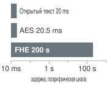
При принятых накладных расходах AES почти ничего не добавляет; FHE добавляет четыре порядка величины.
Стоимость гомоморфных вычислений зависит от поддерживаемых операций, глубины схемы, численного представления и выбранных параметров безопасности. Поддержка произвольных вычислений сама по себе не определяет стоимость конкретной схемы инференса. Осуществимость требует измерения защищаемой нагрузки против её требований к задержке, пропускной способности и полезности. Аппаратно-обусловленная изоляция из Глава 13.8.1.1 предлагает другой компромисс: вычисления над открытым текстом внутри доверенной границы, причём безопасность зависит от аппаратных и программных предположений этой границы.
SMPC,19 напротив, распределяет вычисления между сторонами, защищая их приватные входы при заявленных протоколом предположениях о компрометации и сговоре. Например, в протоколах на основе разделения секрета каждый вход разделяется на случайные доли, которые сами по себе ничего не раскрывают, каждая сторона вычисляет над принадлежащими ей долями, и лишь повторно соединённые доли раскрывают результат. Протокол определяет, какие стороны получают выход; приватность скрывает дополнительную информацию сверх того, что раскрывают эти выходы и собственные входы стороны. Это особенно полезно при совместном обучении между организациями со строгими политиками использования данных, такими как больницы или банки.
Деидентификация и k-анонимность
Удаление имён и номеров счетов — старейшая техника приватности для публикуемого набора данных, и сама по себе она не работает. Оставшиеся поля действуют как квазиидентификаторы, которые атакующий может сопоставить со вспомогательными данными, чтобы вычленить отдельного человека. Связывание набора данных Netflix Prize20 показало этот провал в масштабе. Исследователи вывели индивидуальные кинопредпочтения из записей, опубликованных без имён, сопоставив их с публичными рейтингами, а не запрашивая обученную модель (Narayanan и Shmatikov 2006 г.). Тепловая карта Strava из Глава 13.3 показала агрегированную форму того же провала, где разреженные регионы выдавали немногих людей за ними.
Релиз удовлетворяет
Генерация синтетических данных
Генерация синтетических данных меняет решение о приватности с сокрытия сырых записей на их замену сгенерированными суррогатами. Синтетические данные могут позволить сторонним исследователям обучать модели, не получая исходных записей, но сам генератор и его выходы всё равно должны проверяться на утечки.
Генерация синтетических данных работает так: на исходном чувствительном датасете обучается генеративная модель (например GAN, вариационный автокодировщик (VAE) или диффузионная модель), а затем обученный генератор используется для создания новых искусственных образцов. Ожидаемый результат сохраняет полезные закономерности популяции, не воспроизводя отдельные записи. Однако обучение распределения не гарантирует такого разделения: генератор может запомнить свои обучающие данные, поэтому одна лишь синтетическая выборка не обеспечивает приватность.
Генерация синтетических данных обычно проходит три упорядоченных этапа. Сначала, на этапе обучения распределения, генеративная модель
Несмотря на привлекательность, генерация синтетических данных сталкивается с серьёзными ограничениями. Генеративные модели могут страдать от коллапса мод (mode collapse), не улавливая редкие, но важные закономерности исходных данных. Атакующие также могут извлечь информацию об исходных обучающих данных через инверсию генеративной модели или атаки на определение принадлежности (membership inference). Защита приватности сильно зависит от архитектуры генеративной модели, процедуры обучения и выбора гиперпараметров, что затрудняет предоставление формальных гарантий приватности без дополнительных механизмов вроде дифференциальной приватности.
Рассмотрим больницу, желающую поделиться синтетическими данными для ML-исследований. Она обучает GAN на 10 000 записей пациентов, содержащих демографические данные, результаты анализов и диагнозы, стремясь сохранить полезные связи между этими признаками. Больница применяет дифференциальную приватность во время обучения и использует проверенного бухгалтера бюджета, указывая, является ли защищаемым вкладом одна запись или все записи одного пациента. Перед публикацией она оценивает клиническую близость и полезность для подгрупп, поскольку приемлемая общая оценка может скрывать плохие результаты по редким заболеваниям. Тесты на запоминание дают дополнительное эмпирическое подтверждение, тогда как формальную гарантию даёт механизированный учёт. DP ограничивает влияние защищаемого вклада; она не препятствует изучению закономерностей популяции или всем чувствительным выводам на их основе.
Среди федеративного обучения, дифференциальной приватности, гомоморфного шифрования, защищённых многосторонних вычислений и синтетических данных подходы к сохранению приватности различаются предоставляемыми гарантиями и системными последствиями. Производственные решения часто их комбинируют — например, применяя дифференциальную приватность внутри федеративной схемы или резервируя гомоморфное шифрование для немногих этапов инференса, чьи входные данные оправдывают его стоимость. Выбор механизма зависит от вычислительных ограничений, архитектуры развёртывания и нормативных требований. Когда формальный аппарат дифференциальной приватности уже внедрён, эти методы можно оценивать совместно — по гарантии приватности, накладным расходам на исполнение, операционной зрелости и соответствию сценарию использования, а не как независимые свойства (Таблица 8).
Стек защит теперь покрывает каждый уровень: от аппаратных корней доверия через развёртывание, среду исполнения и средства защиты на уровне дизайна модели до пути данных, где федерация, защищённая агрегация, шифрованные вычисления и синтетика каждый раз уводят сырые записи или отдельные обновления от конкретного наблюдателя. Локальность данных, сокрытие сообщений, шифрованные вычисления и синтез сами по себе не ограничивают то, что раскрывает опубликованная модель. Безопасный обучающий кластер и конфиденциальные каналы всё ещё могут опубликовать модель, раскрывающую запомненные примеры, как показал случай с GPT-2, — утечка идёт через авторизованный вывод, а не через несанкционированный доступ. Закрытие этого пробела требует гарантии, сформулированной относительно самой публикации, с явно указанными защищаемым вкладом, рандомизацией и накопленными потерями между публикациями.
13.9 Дифференциальная приватность
Предположим, атакующий запрашивает модель медицинской диагностики, используя точные атрибуты известного пациента, и сравнивает ответы с тем, что вернула бы модель, обученная без этого пациента. Шифрование и контроль доступа здесь не помогут. Атакующий — авторизованный вызывающий, и запрос достигает только обученной модели, но не сохранённых записей. Разница лишь в одной паре предсказаний сама по себе не доказывает нарушение приватности. Релевантный вопрос — насколько распределение публикуемых результатов позволяет атакующему отличать датасеты с этим пациентом и без него относительно заданной границы приватности.
Дифференциальная приватность ограничивает рандомизированный механизм обучения или анализа так, чтобы его выходные распределения оставались близкими на смежных датасетах. Определение смежности задаёт защищаемый вклад — например, одну запись или все записи одного человека. Инвариант утечки информации (принцип «Инвариант утечки информации») гласит, что любой наблюдаемый выходной результат может нести информацию о защищаемой обучающей записи, поэтому заявление о приватности должно называть защищаемую единицу и наблюдения, доступные атакующему. Дифференциальная приватность отвечает этому требованию, ограничивая дополнительное свидетельство о названном вкладе, которое даёт публикация. Для фиксированного механизма и рабочей нагрузки более строгие границы приватности требуют большего шума или меньшего числа зависящих от данных публикаций, и первая цена проявляется как потеря полезности. Восстановление полезности за счёт большего количества данных или шагов обучения повышает вычисления на обучение — член
Определение 13.5: Дифференциальная приватность
Дифференциальная приватность — математическая гарантия, ограничивающая изменения выходного распределения рандомизированного алгоритма при заданном изменении одного защищаемого вклада. Отношение соседства определяет этот вклад и допустимое изменение. Аппроксимированная дифференциальная приватность допускает мультипликативную границу и аддитивный зазор, формализуемые неравенством
- Значимость: Бюджет приватности
превращает алгоритмическое свойство в инженерную валюту, которую можно выделять, суммировать и исчерпывать. Производственные отчёты и бенчмарк-исследования показывают, что бюджеты приватности зависят от развёртывания: Apple описывает развёртывания локальной DP-телеметрии со значениями на событие, выбираемыми по сценарию использования, а исследования DP-SGD демонстрируют компромиссы между точностью и вычислениями на бенчмарк-задачах (Apple Differential Privacy Team 2017 г.; Abadi и др. 2016 г.; Bu и др. 2020 г.; De и др. 2022 г.). Меньший поднимает уровень шума и ухудшает точность классификации вдоль эмпирической границы, показанной на Рисунок 26, где CIFAR-10 теряет двузначные проценты точности даже при . DP-SGD также может снижать пропускную способность обучения, поскольку поэкземплярное отсечение градиентов противоречит батч-уровневому параллелизму, который делает обучение на ускорителях эффективным. - Отличие: В отличие от деидентификации, которая удаляет идентификаторы из записей и не защищает от повторной идентификации по вспомогательным данным, и в отличие от статистического контроля раскрытия, зависящего от модели атакующего, дифференциальная приватность — свойство алгоритма, а не данных. Её гарантия действует против любого атакующего, в том числе обладающего произвольной побочной информацией о других записях датасета.
- Типичная ошибка: Частое заблуждение состоит в том, что метка
независимо применяется к каждому обращению к данным. Последовательная композиция механизмов DP, каждый с потерей приватности , даёт суммарную потерю не более при базовой композиции, а более строгие границы доступны от специализированных бухгалтеров механизмов (Глава 13.9.2). Система, выполняющая шаги DP-SGD или отвечающая на интерактивные DP-запросы к чувствительным данным, должна отслеживать накопленные потери и останавливать или перепроектировать публикацию, когда выделенный бюджет исчерпан. Ротация криптографических ключей не сбрасывает потерю приватности, а запросы к фиксированной DP-обученной модели являются пост-обработкой и не влекут дополнительной потери приватности обучения.
Рандомизированный механизм
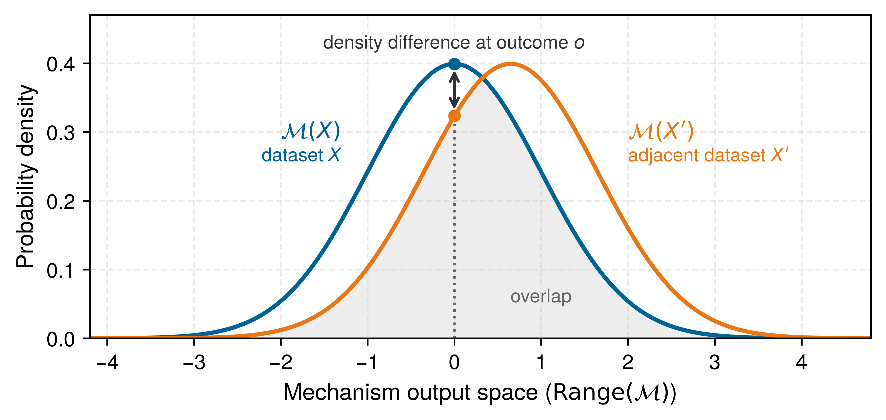
Говорят, что рандомизированный алгоритм
Параметр
Эта граница ограничивает, насколько различимыми могут быть выходные распределения при изменении защищаемого вклада; она не делает их идентичными и не препятствует выводу закономерностей на уровне популяции. Распространённые механизмы DP добавляют калиброванный шум к обновлениям модели или ответам на запросы, используя распределения вроде лапласовского или гауссовского. Техники обучения вроде DP-SGD22 сочетают границы вкладов с калиброванным шумом и учётом композиции. Их гарантия относится к указанному вкладу и публикации, которые должны быть определены до выбора механизма.
13.9.1 Математические основы и параметры приватности
Присвоить модели метку
Формулировка
Определение чистой
Формально рандомизированный алгоритм
Параметр
Шумовые механизмы для достижения дифференциальной приватности
Системы машинного обучения реализуют дифференциальную приватность через тщательно откалиброванное внесение шума. Два основных механизма, применяемых в МЛ-системах, различаются распределениями шума и областями применимости. Первый — механизм Лапласа. Для чистой
У распределения Лапласа плотность
Вывод для механизма Лапласа показывает, почему масштаб шума должен соответствовать чувствительности. Чтобы доказать, что механизм Лапласа обеспечивает
По неравенству треугольника,
Тем самым установлено, что механизм Лапласа удовлетворяет
Инженерный расчёт 13.3: Стоимость дифференциальной приватности
Постановка задачи: рассмотрим вычисление средней зарплаты 1000 сотрудников при гарантированном бюджете приватности
Математика:
- Чувствительность
: максимальное изменение суммы одним человеком составляет $200,000. - Бюджет приватности
: 1. - Масштаб шума Лапласа
: механизм Лапласа задаёт масштаб шума равным чувствительности, делённой на бюджет приватности, поэтому $200,000 / 1 = $200,000. - Влияние на среднее: шум при оценивании среднего возникает из-за шума, добавляемого к сумме, величина которого приблизительно равна $200,000.
- Ошибка среднего = $200,000 / 1000 = $200. Механизм выбирает шум один раз — для суммы; деление на размер группы распределяет эту единственную выборку по среднему.
Системный вывод: при данном контракте с фиксированным списком опубликованное среднее получает лапласов шум с нулевым средним и ожидаемой абсолютной величиной $200; отдельные выборки могут быть меньше или больше. Для набора данных размером
Приведённый выше ноутбук со средней зарплатой использует центральную модель дифференциальной приватности. Каждый человек передаёт ограниченную зарплату доверенному аналитику; аналитик вычисляет сумму, добавляет одну выборку шума Лапласа, откалиброванную по глобальной чувствительности суммы, и делит на фиксированный публичный размер группы. Пример защищает замену зарплаты в публичном списке. Если приватным является само участие, смежность должна быть типа add/remove: смежные наборы данных различаются наличием или отсутствием записей одного человека, а не изменением одного значения. При таком отношении счётчик становится зависимым от данных и требует собственной обработки приватности, поэтому деление на этот счётчик не является автоматически безопасным пост-процессингом. Это отличается от локальной дифференциальной приватности, где каждый человек рандомизирует значение перед отправкой, а аналитик агрегирует рандомизированные отчёты. Обе модели сравнивают выходные распределения на смежных входах, но их механизмы, доверенные предположения и качество не взаимозаменяемы.
Механизм Гаусса служит для случая машинного обучения, когда приемлема ослабленная гарантия
В отличие от механизма Лапласа, обеспечивающего чистую
Для смежных наборов данных с
Когда
Эта достаточная граница — результат однократного применения механизма Гаусса в указанной области параметров. Ни она, ни однократное лапласово отношение
Инженерный расчёт 13.4: Однократный механизм Гаусса
Постановка задачи: определить достаточное стандартное отклонение шума
Переменные:
Математика: классическая достаточная граница требует
Системный вывод: этот расчёт применим к одной гауссовой публикации. DP-SGD повторяет гауссову публикацию на каждом шаге оптимизации, поэтому его бюджет должен составляться по тысячам шагов, а accountant’ы из Глава 13.9.2.1 ограничивают этот суммарный итог более точно, чем простое сложение пошаговых границ.
Гауссов шум подходит для механизма с обрезкой градиентов, потому что обрезка явно ограничивает нормы градиентов в
13.9.2 Композиция бюджета приватности
Публикация 10 моделей, обученных на одной когорте пациентов, с
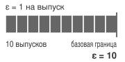
Десять публикаций с
Учёт приватности опирается на три основных инструмента композиции. Простая композиция ограничивает кумулятивную потерю приватности
Случайная величина потери приватности и accountant моментов
Более тонкий подход к анализу приватности отслеживает случайную величину потери приватности, которая измеряет, насколько сильно наблюдение благоприятствует одному смежному набору данных по сравнению с другим, через логарифмическое отношение правдоподобия. Для смежных наборов данных
Случайная величина потери приватности характеризует логарифмическое отношение правдоподобия выходов на смежных наборах данных; для непрерывных выходов отношение использует плотности, а не точечные вероятности. Достаточным условием для
Техника accountant’а моментов, предложенная для DP-SGD в Abadi и др. (2016 г.), ограничивает экспоненциальные моменты распределения потери приватности. Она сохраняет больше информации о механизме, чем единичная пошаговая граница приватности, при этом всё ещё беря худший случай по смежным наборам данных. Для механизма
для порядка момента
Численный результат зависит от правила сэмплирования, частоты сэмплирования, множителя шума, числа шагов, отношения смежности и accountant’а. В DP-SGD случайное подсэмплирование с частотой
Дифференциальная приватность Реньи и композиция
Дифференциальная приватность Реньи (RDP), введённая в Mironov (2017 г.), предоставляет удобное представление для композиции путём отслеживания дивергенции Реньи. Механизм
где
Для несэмплированного механизма Гаусса с единичной
Подсэмплирование меняет этот механизм. В частности,
Эта гарантия RDP даёт валидную
с оптимизацией по
Входные данные DP-SGD accountant для классификации изображений
Рассмотрим обучение CNN на 50,000 изображениях CIFAR-10 с целевой приватностью
- Пуассоновская выборка с ожидаемым размером лота
4,000 (вероятность включения 0.08) - Норма обрезки градиента на пример
1 - Множитель шума
1.3 (масштаб шума относительно обрезки) - Обучение в течение
60 эпох ( 750 шагов)
Эти входные данные не определяют гарантию приватности через упрощённую формулу
Отношение смежности также определяет, что именно защищает граница. Обрезка на уровне примера ограничивает вклад одной записи, поэтому когда один человек вносит много записей — как постоянный покупатель в корпус отзывов, — гарантия на уровне записей не защищает этого человека как единое целое. Защита на уровне человека требует ограничения его суммарного вклада и учёта при отношении смежности на уровне человека.
Обучение в течение
fix a public normalization B for the expected lot size under the sampling design
check prospectively that the accountant permits the next step within the budget
independently sample each record with probability q (Poisson sampling)
clip each sampled per-example gradient to norm C
sum clipped gradients; use the zero vector for an empty lot
add noise N(0, sigma^2 C^2 I), then divide by fixed B
take one optimizer step with the privatized gradient
record the step in the matching privacy accountant
stop before a step that would exceed the release budget
account for private-data-dependent selection; retuning does not erase prior releases13.9.3 Количественная оценка компромисса между приватностью и качеством
Ужесточение дифференциальной приватности до однозначных значений
Рисунок 26 собирает эти опубликованные результаты по MNIST и CIFAR-10 на логарифмической оси (Abadi и др. 2016 г.; Bu и др. 2020 г.; De и др. 2022 г.). Эти сравнения демонстрируют зависящие от постановки задачи стоимости по качеству; различия в архитектурах и процедурах обучения не позволяют выделить только сложность задачи. Нанесённые на график результаты MNIST остаются в пределах 3.3 процентных пунктов от неприватной базовой точности 98.3 процентов при каждом нанесённом однозначном бюджете, наименьший из которых равен
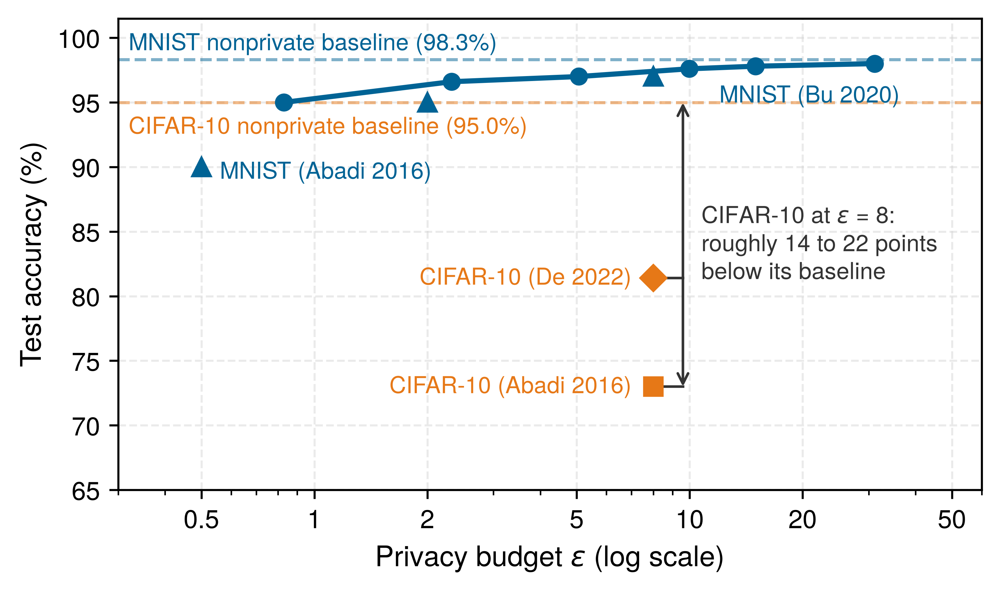
Эти эмпирические результаты показывают, почему один лишь бюджет приватности не предсказывает качество. Первоначальные эксперименты с DP-SGD достигали более высокой точности на MNIST, чем на CIFAR-10, при этом позднейшие методы обучения улучшили результат на CIFAR-10 при том же бюджете. Публичное предобучение снова меняет задачу обучения. С NFNet-F3, предобученной на JFT-4B, авторы De и др. (2022 г.) сообщают о точности 86,7 процента на ImageNet при
13.9.4 Порядок принятия решений о компромиссах при развёртывании дифференциальной приватности
Обязательство принять
Начать следует с регуляторных и юридических требований. DP особенно ценна, когда политика, контракты, аудиты или оценки рисков требуют демонстрируемых границ приватности. Регуляции редко предписывают DP по названию, но принцип GDPR «защита данных на этапе проектирования» (European Parliament и Council of the European Union 2016 г.) и концепция privacy-by-design (Cavoukian 2012 г.) мотивируют проектирование систем с сохранением приватности. Технические меры защиты HIPAA, в свою очередь, требуют контроля доступа, средств аудита, защиты целостности, аутентификации и безопасности передачи (U.S. Department of Health and Human Services 2005 г.). DP может дополнить эти меры документированной математической границей потерь приватности, но не заменяет реализацию мер защиты HIPAA. Организациям, работающим с медицинскими данными ЕС, медицинскими записями США или персональными данными Калифорнии, подпадающими под законы штата о приватности (CCPA/CPRA), следует рассматривать DP как один из возможных механизмов поддержки соответствия.
Затем модель угроз необходимо сопоставить с механизмом. DP ограничивает, насколько одна запись может изменить распределение выпуска, даже когда злоумышленник выбирает запросы адаптивно и комбинирует выходы со вспомогательной информацией. Это свойство может ограничить атаки определения принадлежности (membership inference) и извлечение на уровне записей, но только при заданном отношении смежности и скомпонованном бюджете. Когда основные угрозы — это утечки хранимых данных, а не инференс по выпуску, соответствующую границу решают шифрование и контроль доступа; DP не заменяет их.
Набор данных и задача затем определяют, применима ли гарантия. Эффективное DP-обучение зависит от того, остаётся ли обрезанный сигнал обучаемым после добавления калиброванного шума. Эффективный размер выборки — число независимых примеров, реально влияющих на обучение для класса или подгруппы, — объясняет, почему повторные наблюдения, дисбаланс классов и редкость подгрупп могут ограничивать обучение даже на большой таблице. Сложность задачи тоже важна, но одно лишь число классов не определяет устойчивость к шуму; представление, качество меток и режим обучения также влияют на результат. Распределение чувствительности данных ставит отдельный вопрос о том, чьи ошибки влекут наибольшие последствия; чувствительность здесь означает цену ошибки, а не математическую чувствительность, используемую для калибровки шума. Редкие подгруппы могут нести непропорционально большую потерю качества, даже когда одна и та же формальная граница приватности покрывает каждую защищённую единицу вклада. Как показал ноутбук с зарплатами, шум, скрывающий один вклад, одинаков для всех групп, тогда как малая группа даёт мало сигнала, чтобы его перевесить.
Бюджет полезности (utility) также должен быть задан явно. До развёртывания команда должна определить критерии приёмки, зависящие от задачи: общую производительность, редкие подгруппы, калибровку и ошибки, влияющие на безопасность. Небольшое в среднем изменение точности всё равно может оказаться неприемлемым, если шум DP концентрирует ошибки на защищаемой подгруппе или в клиническом классе с высокой ценой ошибки. Опубликованные результаты дают точки сравнения на фронтире «приватность—полезность» (Рисунок 26), но решение о выпуске требует эксперимента на реальной модели и данных.
Наконец, вычислительный бюджет решает, может ли проект вообще дойти до выпуска. DP-SGD добавляет отсечение градиентов, генерацию шума и работу по учёту бюджета, а достижение приемлемой полезности при приватности может изменить размер батча и длительность обучения. Возникающие затраты времени исполнения и памяти зависят от модели и реализации. Планированию развёртывания нужно измеренное время достижения требуемой полезности в рамках бюджета приватности, а не универсальный множитель вычислений.
Итоговая матрица решений
Применяйте DP, когда формальное ограничение на участие или вклад отвечает заявленной модели угроз, проверенный бухгалтерский механизм охватывает все релевантные зависящие от данных выпуски, измеренная полезность удовлетворяет критериям приёмки задачи, а система обучения выдерживает вычислительную и memory-стоимость механизма. Используйте другие средства контроля, когда основная граница — несанкционированный доступ к хранимым данным. Если требуемая граница DP несовместима с приемлемой полезностью, перепроектируйте механизм, задачу или стратегию данных либо откажитесь от выпуска. Федеративное обучение, шифрование, контроль доступа и журналирование аудита не заменяют требуемую гарантию выпуска лишь потому, что их проще развернуть.
Контрольная точка 13.4: Применение структуры принятия решений о DP
Носимый кардиомонитор классифицирует аритмии по сырым сигналам ЭКГ, собираемым на устройстве у 5 000 включённых пациентов. Продукт продаётся в США и подпадает под HIPAA; конвейер обучения работает в облачном кластере из 8 GPU, а у конкурента есть мотив извлечь модель. Примените каждый из пяти критериев принятия решения, чтобы определить, принадлежит ли DP-SGD конвейеру обучения.
Эта структура рассматривает DP как один инструмент в наборе средств сохранения приватности, а не универсальное решение. Производственные развёртывания часто сочетают механизм DP с учётом бюджета и минимизацией данных, федеративное исполнение там, где централизация сырых данных неуместна, безопасную агрегацию для конфиденциальности вкладов и контроль доступа для безопасности развёртывания.
Возвращаясь к техникам слоя данных из Глава 13.8.5: дифференциальная приватность стоит рядом с федеративным обучением, гомоморфным шифрованием, защищёнными многосторонними вычислениями и генерацией синтетических данных, и каждая из них балансирует между силой приватности, точностью и вычислительной стоимостью (Таблица 8). Метки зрелости — это снимок состояния развёртывания для обсуждаемых режимов, а не постоянный рейтинг самих техник. Криптографические гарантии зависят от хранения ключей и заявленной модели противника; они не мешают авторизованному выводу раскрывать чувствительную информацию. Дифференциальная приватность вместо этого ограничивает раскрытие через выпускаемый результат при заданном отношении смежности.
| Техника | Гарантия приватности | Вычислительные накладные расходы | Состояние зрелости | Типовой сценарий применения | Компромиссы |
|---|---|---|---|---|---|
| Дифференциальная приватность | Формальная |
От умеренных до высоких | Продакшен | Обучение на чувствительных или регулируемых данных | Снижение точности; требуется тщательная настройка |
| Федеративное обучение | Только локальное хранение данных | Умеренные | Продакшен | Межустройственное или межорганизационное совместное обучение | Риск утечки градиентов; требуется инфраструктура безопасной агрегации и оркестрации |
| Гомоморфное шифрование | Конфиденциальность шифртекста | Высокие | Эксперимент. | Инференс в недоверенных облачных средах | Высокие задержка и расход памяти; подходит для ограниченного по объёму инференса на моделях с фиксированными функциями |
| Защищённые MPC | Приватность входов, зависящая от протокола | Очень высокие | Эксперимент. | Совместное обучение между взаимно недоверенными сторонами | Дорогие коммуникации; сложно масштабировать на много участников или глубокие модели |
| Синтетические данные | Никакой сама по себе синтеза | От низких до умеренных | Зарождающаяся | Обмен данными, бенчмаркинг без прямого доступа к сырым данным | Может раскрывать чувствительные шаблоны, если процесс обучения не дифференциально-приватен и не проверен на точность |
Увеличение шума для снижения
Дифференциальная приватность завершает слой данных стека защиты. Теперь, когда механизмы всех слоёв рассмотрены, остаются инженерные вопросы: какие из них нужны данному развёртыванию и в каком порядке их внедрять.
13.10 Выбор и последовательность защит
Переход от математических гарантий к производственным средствам контроля требует большего, чем установка значения эпсилон. Распространённая ошибка — пытаться развернуть все защиты сразу: дифференциальную приватность, доверенные среды исполнения, adversarial-обучение, водяные знаки моделей и автоматизацию ред-тиминга, — тогда как базовые средства контроля вроде границ доступа и шифрованного транспорта остаются слабыми. Предотвратить эту ошибку позволяют два решения. Первое выбирает защиты, требуемые контекстом развёртывания; второе выстраивает их последовательность так, чтобы каждый элемент управления опирался на лежащие под ним.
13.10.1 Выбор защит по контексту развёртывания
Больница, обучающая федеративную диагностическую модель на записях пациентов, и публичный клиентский чат-бот сталкиваются с совершенно разными атакующими, бюджетами задержки и юридическими требованиями. Поэтому аппаратные механизмы из Таблица 7, средства контроля развёртывания и среды исполнения, а также криптографические и статистические техники приватности слоя данных образуют меню, а не фиксированный рецепт. Подходящая защита для данного развёртывания зависит от трёх взаимодействующих факторов: модели угроз (кто атакует и какими возможностями), контекста развёртывания (какие существуют вычислительные бюджеты и бюджеты задержки) и регуляторной среды (какие юридические требования ограничивают дизайн). Фреймворк выбора защит сопоставляет семь распространённых контекстов развёртывания с их основными угрозами, рекомендованными комбинациями защит и компромиссами, которые каждая комбинация требует оценить (Таблица 9). Строки, включающие дифференциальную приватность, требуют механизма с учётом бюджета, построенного из аппарата чувствительности и композиции из Глава 13.9, а не универсального значения бюджета приватности.
| Контекст развёртывания | Основные угрозы | Рекомендованные защиты | Ключевые компромиссы |
|---|---|---|---|
| Медицинский ML (федеративные диагностические модели) | Утечка данных (нарушение HIPAA); inference членства; несанкционированный доступ | Дифференциальная приватность с учётом бюджета для обучения, когда того требует модель угроз; федеративное обучение между больницами; TEE для инференса на чувствительных данных; журналирование аудита и RBAC | Параметры приватности и TEE требуют измерения полезности и задержки для конкретной задачи |
| Финансовый ML (API детекции мошенничества) | Кража модели (потеря IP); adversarial-уклонение; отравление данных | Шифрование модели (AES-256) в покое; HSM для криптографического управления ключами; adversarial-обучение на возмущённых транзакциях; валидация входов и rate limiting per-principal; мониторинг выходной уверенности | Каждый модуль HSM стоит примерно $20,000–$100,000 до интеграции и сертификации; rate limiting может затронуть легитимных высокочастотных пользователей |
| Edge ML (мобильные/IoT-устройства) | Физический доступ; атаки по побочным каналам; извлечение модели | Secure boot; подходящая TEE; аутентифицированное шифрованное хранилище модели; идентичность устройства на основе PUF | Защищённый рабочий набор, поддержка страничной подкачки, стоимость энергии и стойкость к физическим атакам зависят от платформы |
| Облачное обучение ML (мультиарендная платформа) | Отравление данных; внедрение бэкдоров; утечка градиентов | Безопасные конвейеры данных с провенансом; DP-SGD с учётом бюджета, когда утечка участия в зоне охвата; верификация градиентов и обнаружение аномалий; безопасная агрегация для федеративного обучения; водяные знаки для защиты IP | Накладные расходы DP и верификации зависят от реализации и рабочей нагрузки; федеративная агрегация требует аутентифицированной конфиденциальной коммуникации |
| Публичный LLM (чат-бот/API) | Инъекция в промпт; извлечение данных (утечка обучения); злоупотребление/перегрузка | Разделение инструкций и данных; проверки политик на входе/выходе; изолированное исполнение; аутентификация и бюджеты частоты запросов | Измеряйте задержку и стоимость ложных срабатываний; фильтрация и оценки уверенности не гарантируют стойкости к инъекциям |
| Многосторонний ML (межорганизационное обучение) | Ограничения на обмен данными; любопытные или злонамеренные участники; регуляторные обязанности | Федеративное обучение (без обмена сырыми данными); SMPC для безопасной агрегации; дифференциальная приватность с учётом бюджета, когда утечка участия в зоне охвата; гомоморфное шифрование для отдельных операций | Коммуникационные и криптографические накладные расходы зависят от топологии и протокола; полезность нужно измерять для выбранного механизма приватности; требуются соглашения об ответственности |
| Критическая инфраструктура (автономные автомобили, энергосети) | Компрометация цепочки поставок; атаки в реальном времени; отказы, критичные для безопасности | Аппаратная аттестация (trusted platform module, TPM, и PUF); Secure Boot и проверки целостности во время исполнения; избыточная валидация модели; обнаружение fault injection; механизмы отказобезопасного отката | Валидируйте покрытие физических угроз, задержку, отказобезопасное поведение и требуемый процесс обеспечения гарантий |
Контрольная точка 13.5: Сопоставление аппаратных и развёртывательных угроз с защитами
Повторяющаяся тема в Таблица 9 — цена приватности. Дифференциальная приватность встречается в трёх из семи контекстов развёртывания, и каждая такая строка предъявляет точностную или системную стоимость, которую нужно взвесить против регуляторных требований и толерантности к риску. Поэтому таблица — инструмент триажа развёртывания, а не универсальный рецепт: сериализация, целостность артефактов, контроль доступа, изоляция во время исполнения и бюджеты приватности защищают разные границы. Выбор правильных защит для контекста решает, что строить; модель зрелости решает, в каком порядке.
13.10.2 Модель зрелости безопасности и приватности
Разворачивать гомоморфное шифрование или ред-тиминг-стенд, пока контрольные точки модели лежат в неаутентифицированном бакете, а у API-ключей нет бюджетов per-principal — значит оставить открытыми самые простые пути атаки. Модель зрелости спрашивает, какое свойство системы сейчас не защищено: граница доступа, приватность данных, целостность модели, adversarial-стойкость или доказательства управления. Структура зависимостей в Таблица 10 привязывает этот выбор к защищаемой границе.
| Слой зрелости | Основной вопрос | Семейство средств контроля |
|---|---|---|
| Граница доступа и конфигурации | Кто может касаться данных, весов, развёртываний и логов? | Наименьшие привилегии, идентичность сервисов, шифрованный транспорт, журналирование аудита |
| Граница данных и приватности | Что можно узнать из обучения, дообучения или вывода? | Учёт приватности, ограничение вывода, безопасная агрегация, изоляция чувствительных данных |
| Граница целостности модели | Как аутентифицируется проверенная модель и путь данных? | Подписанные артефакты, контроль реестра, проверка хэшей, релизные гейты, пути отката |
| Граница adversarial-атак и злоупотреблений | Что может извлечь, вывести или индуцировать адаптивный атакующий? | Мониторинг запросов, ограничение частоты, оценка стойкости, ред-тиминг-упражнения |
| Граница управления и доказательств | Какие обязательства нужно доказать после развёртывания? | Соответствие требованиям, записи об инцидентах, политика хранения, воспроизводимые проверки контроля |
Слои зрелости кумулятивны. Контроль доступа и шифрованные каналы закрывают пути, которые не покрывают защиты интерфейса модели, — например, открытый реестр. Анализ приватности начинается с исходных обучающих данных и продолжается через дообучение, персонализацию и петли обратной связи телеметрии. Когда требуется DP, релизный бюджет становится системным ресурсом, охватывающим релевантные механизмы обучения, отбора и оценки, которые обращаются к защищаемым данным. Средства контроля целостности модели защищают путь артефакта: подписанные манифесты, управление ключами, проверка хэшей и релизные гейты связывают загружаемую модель с утверждённой версией — при условии, что граница применения остаётся целой.
Adversarial-оценка проверяет умышленное, адаптивное поведение в дополнение к случайным отказам. Мониторинг запросов и ограничение вывода сдерживают попытки извлечения, а оценка стойкости и ред-тиминг-упражнения проверяют, может ли атакующий индуцировать небезопасное поведение. Доверенные среды исполнения и сертифицированные защиты стойкости защищают разные границы, поэтому каждому нужна модель угроз, оправдывающая их затраты и допущения. Управление (governance) определяет обязательства и требования к доказательствам с самого начала, а не входит в игру лишь после технических средств контроля. Журналы аудита, соответствия требованиям, записи об инцидентах и воспроизводимые проверки затем помогают оценить, остаются ли эти обязательства выполненными при изменении модели, данных и трафика.
Разные домены проходят модель по-разному. Медицинское развёртывание приоритизирует учёт приватности и доказательства управления до широкого применения на пациентах. Система финансовой детекции мошенничества подчёркивает контроль доступа, целостность модели и мониторинг злоупотреблений, потому что извлечение и уклонение напрямую меняют объём потерь. Автономная система подчёркивает adversarial-стойкость и доказательства инцидентов, потому что безопасность зависит от поведения при сдвиге распределения и физических возмущениях мира. Суть не в следовании универсальному календарю внедрения, а в том, чтобы модель угроз определяла, какая граница контроля должна созреть следующей.
Свидетельства, порождаемые этими средствами контроля, поддерживают отдельное управленческое решение: какие использования разрешены, кто принимает остаточный риск и кто может требовать исправления. Жизненный цикл управления и assurance развивает эти институциональные обязанности. Здесь инженерная обязанность — сделать решения о доступе, релизные бюджеты и истории инцидентов проверяемыми. Выстраивая средства контроля вокруг этих границ, модель зрелости сдвигает безопасность от реактивного патчинга к проактивному контролю угроз, хотя даже хорошо спроектированные системы могут выйти из строя, когда команды принимают локальный механизм за полную гарантию.
13.11 Заблуждения и подводные камни
Распространённый провал ML-безопасности — трактовать локальный механизм как гарантию всей системы. Скрытность, библиотеки дифференциальной приватности, федеративное обучение или шифрованное хранилище каждый решает лишь одну часть модели угроз, но ни один не заменяет рассуждения на весь жизненный цикл о данных, моделях, интерфейсах, железе и распределённом масштабе.
Заблуждение: безопасность через скрытность (security through obscurity) обеспечивает адекватную защиту моделей машинного обучения.
Сокрытие архитектур или параметров не устанавливает безопасность, когда атакующий может узнать функциональность через открытый API. Примеры извлечения в Глава 13.5.1.4 показывают, почему бюджеты запросов, возвращаемая информация и целевая задача должны оцениваться вместе; универсального количества запросов или порога точности не существует. Adversarial-примеры также могут переноситься с суррогатных моделей, хотя успех зависит от моделей, данных и ограничений на возмущения (Papernot и др. 2016 г.). Принцип Керкгоффса мотивирует защиты, остающиеся полезными, когда механизм известен. Контроль доступа и лимиты запросов ограничивают экспозицию, ограничения на вывод снижают доступную информацию, а мониторинг поддерживает расследование; водяные знаки служат атрибуции, а не предотвращению копирования.
Ловушка: Предположение, что дифференциальная приватность автоматически обеспечивает приватность без учёта деталей реализации.
Отношение к дифференциальной приватности как к универсальному решению без задания отношения смежности, выбора параметров и учёта бюджета оставляет утверждение о раскрытии данных неполным. Один и тот же
Заблуждение: Федеративное обучение само по себе обеспечивает защиту приватности без дополнительных мер.
Это заблуждение предполагает, что децентрализация автоматически гарантирует приватность, но отдельные обновления могут раскрывать членство или восстанавливать признаки локальных обучающих данных. Как показано в Глава 13.8.5.1, эффективная приватность в федеративном обучении требует мер, соответствующих противнику: защищённая агрегация скрывает индивидуальные вклады от координатора, механизмы DP с учётом бюджета ограничивают утечку на уровне записи или пользователя согласно заданному отношению смежности, а аутентифицированное шифрование защищает передаваемые обновления. Организации не могут заявлять о приватности лишь потому, что исходные записи остаются на устройствах: протокол всё равно раскрывает информацию, производную от этих записей.
Ловушка: Планирование защиты от отравления данных только на случай масштабной компрометации обучающего набора.
Небольшой, стратегически подобранный набор отравленных примеров может нацелиться на конкретное решение, не вызывая заметного падения общей точности на валидации (Shafahi и др. 2018 г.). Бэкдор-атаки делают это различие явным. Модель может нормально вести себя на чистых входах, но выдавать выбранное атакующим поведение при появлении триггера (Gu и др. 2017 г.). Необходимая доля отравленных примеров и достигаемая успешность атаки зависят от возможностей атакующего, процедуры обучения и триггера; универсальный процент скрыл бы эти зависимости. Поэтому защиты должны оценивать целенаправленное поведение и происхождение данных, включая пути приёма пользовательского контента, а не считать низкую оценку доли загрязнения гарантией безопасности; Защиты от отравления данных развивает эти меры. Дообучение и трансферное обучение также требуют повторного тестирования, а не предположения, что триггер исчез.
Заблуждение: Безопасность можно изолировать от остальной МЛ-системы.
Защиты отдельных компонентов оставляют бреши, когда тот же актив остаётся доступным через другой путь. Квоты запросов на пользователя, возмущение выходных данных и фильтрация по top-
Ловушка: Недооценка расширения поверхности атаки в распределённых МЛ-системах.
Организации эффективно защищают одноузловые МЛ-системы, но не осознают, что распределённые архитектуры добавляют новые границы доверия и каналы связи. Каждый канал — это линия, конечные точки которой должны взаимно аутентифицироваться и защищать передаваемый трафик, даже если они переиспользуют учётные данные уровня узла. Топология «все со всеми» имеет
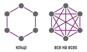
Те же узлы, но куда больше каналов — и каждая линия «все со всеми» входит в модель угроз.
В эталонном обучающем кластере из 1,024 GPU (128 узлов по 8 GPU в каждом) каждый узел одновременно является участником вычисления градиентов, конечной точкой сети и держателем ключей. Поэтому Глава 13.6 рассматривает допуск исполнителей (workers), коллективный трафик, совместно используемые ускорители и аттестацию как самостоятельные границы. Федеративное обучение с 10 000 клиентов создаёт 10 000 отдельно управляемых конечных точек, поддержка и охват аттестации у которых могут различаться. Методы агрегации, проверяющие отдельные обновления, также нужно согласовывать с протоколами, скрывающими эти обновления; их сочетание требует решения, сохраняющего обе гарантии. Следовательно, эффективная безопасность распределённых МЛ-систем требует моделирования угроз для добавляемых узлов и границ: защиты межузловых каналов, управления идентификацией между доменами безопасности и согласования политик на разнородной инфраструктуре.
Признание того, что переход от одного узла к распределённому кластеру добавляет узлы, каналы, учётные данные и границы доверия, исключает мышление «только периметр». Безопасность парка машинного обучения должна быть многоуровневой, измеримой и привязанной к полному жизненному циклу.
13.12 Итоги
Приватность и безопасность защищают модели, данные, аппаратное обеспечение и границы обслуживания парка МЛ от извлечения, отравления, манипуляции и несанкционированного доступа. Разобранные случаи инцидентов задают границы, которые парк должен защищать: Strava показывает, что агрегированная публикация может раскрыть поведение, не раскрыв ни одной записи; Stuxnet обнажает доверие к цепочке поставок; взлом Jeep Cherokee — недостаточную изоляцию; Mirai — слабую идентификацию конечных точек. Выученное поведение добавляет ещё границы: отравленные данные, запросы на извлечение модели и инъекции в промпт могут скомпрометировать систему через в остальном легитимные интерфейсы. Парк добавляет собственные границы, невидимые ни для одного API-шлюза: градиент, вносимый каждым исполнителем, сеть, по которой он передаётся, ускорители, разделяемые арендаторами, и свидетельства того, что каждый узел исполняет одобренный код. Аппаратные якоря доверия защищают исполнение, провенанс связывает артефакты с решениями о публикации, средства контроля времени исполнения сдерживают злоупотребления, а дифференциальная приватность ограничивает утечку сведений об участии. Все эти механизмы сочетаются только тогда, когда каждый привязан к тому субъекту и тому типу раскрытия, против которых он направлен.
Их издержки охватывают все три оси C
Основные выводы: Защищайте модель, а не только сервер
- Модель — это поверхность атаки: МЛ-системы наследуют обычные серверные угрозы, но добавляют атаки на само выученное правило. Отравленные данные, извлечение модели, состязательные входы и инъекции в промпт могут скомпрометировать поведение без эксплуатации традиционной уязвимости ПО.
- Извлечение ограничивается накопленными бюджетами: Дневной лимит частоты замедляет экстрактор, работающий запросами, но не ограничивает собранный им объём. Пожизненный бюджет на субъекта, оценённый в точке безубыточности по сравнению с переобучением, в паре с контрактом на выход, ограничивающим, что раскрывает каждый ответ, лишает копирование ценового преимущества — но лишь настолько, насколько субъекты соответствуют реальным действующим лицам.
- Приватность — это учитываемый бюджет: Поскольку модели могут кодировать сведения о чувствительных данных, корректно исполняемая модель может раскрывать обучающие данные через запоминание и вывод о членстве, поэтому приватность нельзя сводить к обезличиванию на периметре. Дифференциальная приватность (принцип «Инвариант утечки информации») даёт ограниченные утверждения
только при корректной композиции всех зависящих от данных механизмов DP; запросы к фиксированной DP-обученной модели — это пост-обработка и не добавляют потерь приватности при обучении. - Генеративным системам нужны принудительно исполнимые границы контроля: Инъекции в промпт, джейлбрейки и утечки PII проходят через обычные текстовые каналы. Считайте выход модели недоверенным, отделяйте инструкции от недоверенного контента и держите авторизацию во внешнем слое политик.
- Собственные интерфейсы парка — это границы доверия: Неограниченное злонамеренное обновление может доминировать над средним; разобранная реализация робастной агрегации на основе gather добавляет около
объёма трафика — это издержки реализации, а не универсальная нижняя граница. Допуск исполнителей, коллективный трафик и разделяемые ускорители требуют отдельных мер, а допуск не заменяет проверок обновлений: допущенный исполнитель всё ещё может отправить злонамеренное обновление. - Провенанс ограничивает доверие и позволяет восстанавливаться: Модели можно доверять настолько, насколько простирается её история данных, кода, весов и аппаратуры (принцип «Происхождение ограничивает доверие»). Подписанные датасеты, зафиксированные зависимости, права в реестре и аттестации развёртывания позволяют оператору ответить, какие данные, код, субъект, узел и контрольная точка породили подозрительную модель. Без этой цепочки откат и криминалистика превращаются в гадание со скоростью парка.
- Аппаратное доверие имеет явные границы: TEE изолируют исполнение, secure boot проверяет авторизованную цепочку загрузки, HSM защищают ключи и криптографические операции. Эти меры направлены на разные границы доверия; они не доказывают ни корректность поведения модели, ни то, что авторизованный вывод сохраняет приватность.
Парк может корректно исполнять все разрешённые операции и всё же раскрывать чувствительную информацию через одобренную публикацию. Инвариант утечки информации (принцип «Инвариант утечки информации») поэтому делает границу публикации столь же важной, как и границу исполнения. Решение о развёртывании должно устанавливать и то, кто имеет доступ к вычислению, и что его выходные данные позволяют узнать наблюдателю.
Дальнейшие шаги: От безопасности к устойчивости
Меры безопасности и приватности направлены на злонамеренные намерение и контроль, устанавливая, кто и что может вывести, изменить, отключить или авторизовать на границах данных, модели, интерфейса и инфраструктуры. Эти меры определяют, кто может добраться до модели и что её публикации могут раскрыть. Они не могут показать, что ответы остаются корректными, когда входы, распределения данных или аппаратура отклоняются от условий, в которых модель валидировалась. Парк может проходить все проверки доступа и все проверки состояния, пока его предсказания деградируют без ошибки — из-за дорожных условий, не покрытых обучающими данными, из-за специально созданного входа, удовлетворяющего контракту интерфейса, или из-за неисправного ускорителя, продолжающего возвращать правдоподобные числа. Обнаружение и ограничение такого безмолвного отказа требует поведенческих свидетельств о точности, калибровке и резервных механизмах при сдвиге среды, атаках на уровне входа и системных сбоях — это проблема устойчивости, которой посвящена следующая глава.
↪ Обнаружение дрейфа, оценка состязательных защит и защиты от отравления данных развиты в Надёжный ИИ.
использованная литература
Abadi, M., A. Chu, I. Goodfellow, и др. 2016 г. «Deep Learning With Differential Privacy». Proceedings of the 2016 ACM SIGSAC Conference on Computer and Communications Security, CCS ’16, 308–18. https://doi.org/10.1145/2976749.2978318.
Adi, Yossi, Carsten Baum, Moustapha Cisse, Benny Pinkas, и Joseph Keshet. 2018 г. «Turning your weakness into a strength: Watermarking deep neural networks by backdooring». 27th USENIX Security Symposium (USENIX Security 18), 1615–31.
Amiel, Frederic, Christophe Clavier, и Michael Tunstall. 2006 г. «Fault Analysis of DPA-Resistant Algorithms». В Fault Diagnosis and Tolerance in Cryptography. Springer Berlin Heidelberg. https://doi.org/10.1007/11889700_20.
Antonakakis, M., T. April, M. Bailey, и др. 2017 г. «Understanding the mirai botnet». 26th USENIX security symposium (USENIX Security 17) 16: 1093–110.
Apple. 2021 г.a. Boot process for iPad and iPhone devices. Apple Platform Security.https://support.apple.com/guide/security/boot-process-for-ipad-and-iphone-devices-secb3000f149/web .
Apple. 2021 г.b. Secure software updates. Apple Platform Security. https://support.apple.com/guide/security/secure-software-updates-secf683e0b36/web.
Apple. 2024 г.a. Facial matching security. Apple Platform Security. https://support.apple.com/guide/security/facial-matching-security-sece151358d1/web.
Apple. 2024 г.b. The Secure Enclave. Apple Platform Security. https://support.apple.com/guide/security/the-secure-enclave-sec59b0b31ff/web.
Apple Differential Privacy Team. 2017 г. Learning with privacy at scale. Apple Machine Learning Research. https://machinelearning.apple.com/research/learning-with-privacy-at-scale.
Asonov, Dmitri, и Rakesh Agrawal. 2004 г. «Keyboard acoustic emanations». IEEE Symposium on Security and Privacy, 2004. Proceedings. 2004, 3–11. https://doi.org/10.1109/secpri.2004.1301311.
Ateniese, G., L. V. Mancini, A. Spognardi, A. Villani, D. Vitali, и G. Felici. 2015 г. «Hacking smart machines with smarter ones: How to extract meaningful data from machine learning classifiers». International Journal of Security and Networks 10 (3): 137. https://doi.org/10.1504/ijsn.2015.071829.
Bai, Yuntao и др. 2022 г. Constitutional AI: Harmlessness from AI Feedback. https://arxiv.org/abs/2212.08073.
Barenghi, A., G. M. Bertoni, L. Breveglieri, M. Pellicioli, и G. Pelosi. 2010 г. «Low voltage fault attacks to AES». 2010 IEEE International Symposium on Hardware-Oriented Security and Trust (HOST), 7–12. https://doi.org/10.1109/hst.2010.5513121.
Biggio, Battista, Blaine Nelson, и Pavel Laskov. 2012 г. «Poisoning Attacks against Support Vector Machines». Proceedings of the 29th International Conference on Machine Learning, ICML 2012, Edinburgh, Scotland, UK, June 26 - July 1, 2012. http://icml.cc/2012/papers/880.pdf.
Blanchard, Peva, El Mahdi El Mhamdi, Rachid Guerraoui, и Julien Stainer. 2017 г. «Machine Learning with Adversaries: Byzantine Tolerant Gradient Descent». Advances in Neural Information Processing Systems (NeurIPS), 119–29. https://proceedings.neurips.cc/paper/2017/hash/f4b9ec30ad9f68f89b29639786cb62ef-Abstract.html.
Bonawitz, K., H. Eichner, W. Grieskamp, и др. 2019 г. «Towards Federated Learning at Scale: System Design». Proceedings of Machine Learning and Systems 3. http://arxiv.org/abs/1902.01046v2.
Bonawitz, Keith, Vladimir Ivanov, Ben Kreuter, и др. 2017 г. «Practical Secure Aggregation for Privacy-Preserving Machine Learning». Proceedings of the 2017 ACM SIGSAC Conference on Computer and Communications Security, 1175–91. https://doi.org/10.1145/3133956.3133982.
Breier, Jakub, Xiaolu Hou, Dirmanto Jap, Lei Ma, Shivam Bhasin, и Yang Liu. 2018 г. «Practical Fault Attack on Deep Neural Networks». Proceedings of the 2018 ACM SIGSAC Conference on Computer and Communications Security abs/1806.05859: 2204–6. https://doi.org/10.1145/3243734.3278519.
Bu, Zhiqi, Jiawen Dong, Qi Long, и Weijie J. Su. 2020 г. «Deep learning with Gaussian differential privacy». Harvard Data Science Review 2. https://doi.org/10.1162/99608f92.cfc5dd25.
Bursztein, Elie, Luca Invernizzi, Karel Král, Daniel Moghimi, Jean-Michel Picod, и Marina Zhang. 2024 г. «Generalized Power Attacks Against Crypto Hardware Using Long-Range Deep Learning». IACR Transactions on Cryptographic Hardware and Embedded Systems 2024 (3): 472–99. https://doi.org/10.46586/tches.v2024.i3.472-499.
Bursztein, Elie, и Jean-Michel Picod. 2019 г. «A Hacker Guide To Deep Learning Based Side Channel Attacks». В DEF CON 27, под редакцией DEF CON. DEF CON. https://elie.net/talk/a-hackerguide-to-deep-learning-based-side-channel-attacks/.
Carlini, Nicholas, Jamie Hayes, Milad Nasr, и др. 2023 г. «Extracting Training Data from Diffusion Models». 32nd USENIX Security Symposium (USENIX Security 23), 5253–70. https://www.usenix.org/conference/usenixsecurity23/presentation/carlini.
Carlini, N., D. Paleka, K. D. Dvijotham, и др. 2024 г. «Stealing Part of a Production Language Model». arXiv preprint arXiv:2403.06634. http://arxiv.org/abs/2403.06634v2.
Carlini, N., F. Tramer, E. Wallace, и др. 2021 г. «Extracting Training Data from Large Language Models». 30th USENIX Security Symposium (USENIX Security 21), 2633–50. https://www.usenix.org/conference/usenixsecurity21/presentation/carlini-extracting.
Cavoukian, A. 2012 г. «Privacy by design: Origins, Meaning, and Prospects for Assuring Privacy and Trust in the Information Era». Office of the Information and Privacy Commissioner 1: 170–208. https://doi.org/10.4018/978-1-61350-501-4.ch007.
De, Soham, Leonard Berrada, Jamie Hayes, Samuel L. Smith, и Borja Balle. 2022 г. «Unlocking High-Accuracy Differentially Private Image Classification through Scale». arXiv preprint arXiv:2204.13650. https://arxiv.org/abs/2204.13650.
Dwork, Cynthia, Frank McSherry, Kobbi Nissim, и Adam Smith. 2006 г. «Calibrating Noise to Sensitivity in Private Data Analysis». В Theory of Cryptography Conference (TCC), под редакцией Shai Halevi и Tal Rabin, т. 3876. Lecture Notes в Computer Science. Springer Berlin Heidelberg. https://doi.org/10.1007/11681878_14.
Dwork, Cynthia, и Aaron Roth. 2014 г. «The Algorithmic Foundations of Differential Privacy». Foundations and Trends® in Theoretical Computer Science, Foundations и Trends в Theoretical Computer Science, т. 9 (3-4): 211–487. https://doi.org/10.1561/0400000042.
European Parliament, и Council of the European Union. 2016 г. Regulation (EU) 2016/679 of the European Parliament and of the Council of 27 April 2016. Official Journal of the European Union. https://eur-lex.europa.eu/eli/reg/2016/679/oj/eng.
Eykholt, K., I. Evtimov, E. Fernandes, и др. 2018 г. «Robust Physical-World Attacks on Deep Learning Visual Classification». 2018 IEEE/CVF Conference on Computer Vision and Pattern Recognition 1707.08945: 1625–34. https://doi.org/10.1109/cvpr.2018.00175.
Farwell, J. P., и R. Rohozinski. 2011 г. «Stuxnet and the Future of Cyber War». Survival 53 (1): 23–40. https://doi.org/10.1080/00396338.2011.555586.
Fredrikson, Matt, Somesh Jha, и Thomas Ristenpart. 2015 г. «Model Inversion Attacks That Exploit Confidence Information and Basic Countermeasures». Proceedings of the 22nd ACM SIGSAC Conference on Computer and Communications Security, 1322–33. https://doi.org/10.1145/2810103.2813677.
Gandolfi, Karine, Christophe Mourtel, и Francis Olivier. 2001 г. «Electromagnetic Analysis: Concrete Results». В Cryptographic Hardware and Embedded Systems — CHES 2001. Springer Berlin Heidelberg. https://doi.org/10.1007/3-540-44709-1_21.
Gao, Y., S. F. Al-Sarawi, и D. Abbott. 2020 г. «Physical unclonable functions». Nature Electronics 3 (2): 81–91. https://doi.org/10.1038/s41928-020-0372-5.
Gassend, Blaise, Dwaine Clarke, Marten van Dijk, и Srinivas Devadas. 2002 г. «Silicon physical random functions». Proceedings of the 9th ACM conference on Computer and communications security, 148–60. https://doi.org/10.1145/586110.586132.
Genkin, Daniel, Adi Shamir, и Eran Tromer. 2017 г. «Acoustic cryptanalysis». Journal of Cryptology 30: 392–443. https://doi.org/10.1007/s00145-015-9224-2.
Gentry, C. 2009 г. «Fully Homomorphic Encryption Using Ideal Lattices». Proceedings of the forty-first annual ACM symposium on Theory of computing, 169–78. https://doi.org/10.1145/1536414.1536440.
Gnad, D. R. E., F. Oboril, и M. B. Tahoori. 2017 г. «Voltage drop-based fault attacks on FPGAs using valid bitstreams». 2017 27th International Conference on Field Programmable Logic and Applications (FPL), 1–7. https://doi.org/10.23919/fpl.2017.8056840.
Goncalves, A., P. Ray, B. Soper, J. Stevens, L. Coyle, и A. P. Sales. 2020 г. «Generation and evaluation of synthetic patient data». BMC Medical Research Methodology 20 (1): 1–40. https://doi.org/10.1186/s12874-020-00977-1.
Goodfellow, I. J., J. Shlens, и C. Szegedy. 2015 г. «Explaining and Harnessing Adversarial Examples». International Conference on Learning Representations (ICLR). https://arxiv.org/abs/1412.6572.
Google. 2024 г. ShieldGemma: Generative AI Content Moderation Based on Gemma. Google AI for Developers documentation. https://ai.google.dev/gemma/docs/shieldgemma.
Greshake, Kai, Sahar Abdelnabi, Shailesh Mishra, Christoph Endres, Thorsten Holz, и Mario Fritz. 2023 г. «Not what you’ve signed up for: Compromising real-world LLM-integrated applications with indirect prompt injection». Proceedings of the 16th ACM Workshop on Artificial Intelligence and Security, 79–90. https://doi.org/10.1145/3605764.3623985.
Gu, Tianyu, Brendan Dolan-Gavitt, и Siddharth Garg. 2017 г. «BadNets: Identifying Vulnerabilities in the Machine Learning Model Supply Chain». arXiv preprint arXiv:1708.06733. http://arxiv.org/abs/1708.06733v2.
Gupta, Maanak, Charankumar Akiri, Kshitiz Aryal, Eli Parker, и Lopamudra Praharaj. 2023 г. «From ChatGPT to ThreatGPT: Impact of Generative AI in Cybersecurity and Privacy». IEEE Access 11: 80218–45. https://doi.org/10.1109/access.2023.3300381.
Hard, Andrew, Kanishka Rao, Rajiv Mathews, и др. 2018 г. «Federated Learning for Mobile Keyboard Prediction». arXiv preprint arXiv:1811.03604. http://arxiv.org/abs/1811.03604v2.
Hosseini, Hossein, Sreeram Kannan, Baosen Zhang, и Radha Poovendran. 2017 г. «Deceiving Google’s Perspective API Built for Detecting Toxic Comments». arXiv preprint arXiv:1702.08138, advance online publication. https://doi.org/10.48550/arXiv.1702.08138.
Hsiao, Yu-Shun, Zishen Wan, Tianyu Jia, и др. 2023 г. «MAVFI: An End-To-End Fault Analysis Framework With Anomaly Detection and Recovery for Micro Aerial Vehicles». 2023 Design, Automation & Test in Europe Conference & Exhibition (DATE), 1–6. https://doi.org/10.23919/date56975.2023.10137246.
Hugging Face. 2026 г. Safetensors Documentation. https://huggingface.co/docs/safetensors/index.
Hutter, Michael, Jorn-Marc Schmidt, и Thomas Plos. 2009 г. «Contact-based fault injections and power analysis on RFID tags». 2009 European Conference on Circuit Theory and Design, 409–12. https://doi.org/10.1109/ecctd.2009.5275012.
IEEE 802.1 Working Group. 2018 г. IEEE Standard for Local and Metropolitan Area Networks—Secure Device Identity. IEEE Std 802.1AR-2018. https://1.ieee802.org/security/802-1ar/.
Inan, H., K. Upasani, J. Chi, и др. 2023 г. «Llama Guard: LLM-based Input-Output Safeguard for Human-AI Conversations». arXiv preprint arXiv:2312.06674. http://arxiv.org/abs/2312.06674v1.
Jagielski, Matthew, Giorgio Severi, Niklas Pousette Harger, и Alina Oprea. 2021 г. «Subpopulation data poisoning attacks». Proceedings of the 2021 ACM SIGSAC Conference on Computer and Communications Security, 3104–22. https://doi.org/10.1145/3460120.3485368.
Joye, Marc, и Michael Tunstall. 2012 г. Fault Analysis in Cryptography. Inf. Secur. Cryptography. Springer Berlin Heidelberg. https://doi.org/10.1007/978-3-642-29656-7.
Kocher, Paul, Jann Horn, Anders Fogh, и др. 2019 г. «Spectre Attacks: Exploiting Speculative Execution». 2019 IEEE Symposium on Security and Privacy (SP), 1–19. https://doi.org/10.1109/sp.2019.00002.
Kocher, Paul, Joshua Jaffe, и Benjamin Jun. 1999 г. «Differential Power Analysis». В Advances in Cryptology — CRYPTO’ 99. Springer Berlin Heidelberg. https://doi.org/10.1007/3-540-48405-1_25.
Kocher, Paul, Joshua Jaffe, Benjamin Jun, и Pankaj Rohatgi. 2011 г. «Introduction to differential power analysis». Journal of Cryptographic Engineering 1 (1): 5–27. https://doi.org/10.1007/s13389-011-0006-y.
Korosec, Kirsten. 2019 г. Tesla Sues Former Employees, Zoox for Alleged Trade Secret Theft. TechCrunch.https://techcrunch.com/2019/03/21/tesla-sues-former-employees-zoox-for-alleged-trade-secret-theft/ .
Krishna, Kalpesh, Gaurav Singh Tomar, Ankur P. Parikh, Nicolas Papernot, и Mohit Iyyer. 2020 г. «Thieves on Sesame Street! Model extraction of BERT-based APIs». International Conference on Learning Representations (ICLR). https://openreview.net/forum?id=Byl5NREFDr.
Kurakin, Alexey, Ian Goodfellow, и Samy Bengio. 2017 г. «Adversarial Examples in the Physical World». International Conference on Learning Representations (ICLR), Workshop Track, 99–112. https://doi.org/10.1201/9781351251389-8.
Lipp, M., M. Schwarz, D. Gruss, и др. 2018 г. «Meltdown: reading kernel memory from user space». Proceedings of the 27th USENIX Security Symposium (USENIX Security), 973–90. https://www.usenix.org/conference/usenixsecurity18/presentation/lipp.
Madry, Aleksander, Aleksandar Makelov, Ludwig Schmidt, Dimitris Tsipras, и Adrian Vladu. 2018 г. «Towards Deep Learning Models Resistant to Adversarial Attacks». International Conference on Learning Representations (ICLR). https://openreview.net/forum?id=rJzIBfZAb.
Miller, C. 2019 г. «Lessons learned from hacking a car». IEEE Design & Test 36 (6): 7–9. https://doi.org/10.1109/mdat.2018.2863106.
Miller, Charlie, и Chris Valasek. 2015 г. Remote Exploitation of an Unaltered Passenger Vehicle. Black Hat USA 2015 Whitepaper. https://illmatics.com/Remote%20Car%20Hacking.pdf.
Mironov, I. 2017 г. «Rényi Differential Privacy». 2017 IEEE 30th Computer Security Foundations Symposium (CSF), 263–75. https://doi.org/10.1109/csf.2017.11.
Narayanan, Arvind, и Vitaly Shmatikov. 2006 г. «How To Break Anonymity of the Netflix Prize Dataset». В CoRR, abs/cs/0610105. http://arxiv.org/abs/cs/0610105.
Narayanan, Arvind, и Vitaly Shmatikov. 2008 г. «Robust De-Anonymization of Large Sparse Datasets». 2008 IEEE Symposium on Security and Privacy (SP 2008), 111–25. https://doi.org/10.1109/sp.2008.33.
Nasr, Milad, Reza Shokri, и Amir Houmansadr. 2019 г. «Comprehensive Privacy Analysis of Deep Learning: Passive and Active White-Box Inference Attacks Against Centralized and Federated Learning». 2019 IEEE Symposium on Security and Privacy (SP), 739–53. https://doi.org/10.1109/sp.2019.00065.
NVIDIA. 2026 г. NVIDIA Multi-Instance GPU User Guide. https://docs.nvidia.com/datacenter/tesla/mig-user-guide/latest/index.html.
Oliynyk, Daryna, Rudolf Mayer, и Andreas Rauber. 2023 г. «I Know What You Trained Last Summer: A Survey on Stealing Machine Learning Models and Defences». ACM Computing Surveys 55 (14s): 1–41. https://doi.org/10.1145/3595292.
Orekondy, Tribhuvanesh, Bernt Schiele, и Mario Fritz. 2019 г. «Knockoff Nets: Stealing Functionality of Black-Box Models». 2019 IEEE/CVF Conference on Computer Vision and Pattern Recognition (CVPR), 4949–58. https://doi.org/10.1109/cvpr.2019.00509.
Ouyang, L., J. Wu, X. Jiang, и др. 2022 г. «Training language models to follow instructions with human feedback». Advances in Neural Information Processing Systems (NeurIPS) 35: 27730–44. https://doi.org/10.52202/068431-2011.
Papernot, Nicolas, Patrick McDaniel, и Ian Goodfellow. 2016 г. «Transferability in Machine Learning: from Phenomena to Black-Box Attacks using Adversarial Samples». arXiv preprint arXiv:1605.07277. http://arxiv.org/abs/1605.07277v1.
Parrish, Alicia, Hannah Rose Kirk, Jessica Quaye, и др. 2023 г. «Adversarial Nibbler: A Data-Centric Challenge for Improving the Safety of Text-to-Image Models». ArXiv preprint abs/2305.14384. http://arxiv.org/abs/2305.14384v1.
Perez, Fábio, и Ian Ribeiro. 2022 г. «Ignore previous prompt: Attack techniques for language models». arXiv preprint arXiv:2211.09527. https://arxiv.org/abs/2211.09527.
Quaye, J., A. Parrish, O. Inel, и др. 2024 г. «Adversarial Nibbler: An Open Red-Teaming Method for Identifying Diverse Harms in Text-To-Image Generation». The 2024 ACM Conference on Fairness, Accountability, and Transparency, 388–406. https://doi.org/10.1145/3630106.3658913.
Regenscheid, Andrew. 2018 г. Platform Firmware Resiliency Guidelines. NIST SP 800-193. National Institute of Standards; Technology. https://doi.org/10.6028/NIST.SP.800-193.
Robertson, J., и M. Riley. 2018 г. The Big Hack: How China Used a Tiny Chip to Infiltrate U.S. Companies - Bloomberg.https://www.bloomberg.com/news/features/2018-10-04/the-big-hack-how-china-used-a-tiny-chip-to-infiltrate-america-s-top-companies .
Russell, Jon. 2018 г. «Strava Says It Will Simplify Privacy Settings and Review App Features After Exposing Military Bases». TechCrunch, январь. https://techcrunch.com/2018/01/29/strava-simplify-privacy-options-review-features/.
Saltzer, J. H., и M. D. Schroeder. 1975 г. «The Protection of Information in Computer Systems». Proceedings of the IEEE 63 (9): 1278–308. https://doi.org/10.1109/proc.1975.9939.
Shafahi, Ali, W. Ronny Huang, Mahyar Najibi, и др. 2018 г. «Poison Frogs! Targeted Clean-Label Poisoning Attacks on Neural Networks». Advances in Neural Information Processing Systems 31. http://arxiv.org/abs/1804.00792v2.
Shan, S., W. Ding, J. Passananti, S. Wu, H. Zheng, и B. Y. Zhao. 2023 г. «Nightshade: Prompt-Specific Poisoning Attacks on Text-To-Image Generative Models». 2024 IEEE Symposium on Security and Privacy (SP) abs/2310.13828: 807–25. https://doi.org/10.1109/sp54263.2024.00207.
Shokri, Reza, Marco Stronati, Congzheng Song, и Vitaly Shmatikov. 2017 г. «Membership Inference Attacks Against Machine Learning Models». 2017 IEEE Symposium on Security and Privacy (SP), 3–18. https://doi.org/10.1109/SP.2017.41.
Skorobogatov, S. 2009 г. «Local heating attacks on Flash memory devices». 2009 IEEE International Workshop on Hardware-Oriented Security and Trust, 1–6. https://doi.org/10.1109/hst.2009.5225028.
Skorobogatov, S. P., и R. J. Anderson. 2003 г. «Optical Fault Induction Attacks». В Cryptographic Hardware and Embedded Systems - CHES 2002. Springer Berlin Heidelberg. https://doi.org/10.1007/3-540-36400-5_2.
Song, Liwei, Reza Shokri, и Prateek Mittal. 2019 г. «Privacy risks of securing machine learning models against adversarial examples». Proceedings of the 2019 ACM SIGSAC Conference on Computer and Communications Security, 241–57. https://doi.org/10.1145/3319535.3354211.
Sweeney, Latanya. 2002 г. «K-ANONYMITY: A MODEL for PROTECTING PRIVACY». International Journal of Uncertainty, Fuzziness and Knowledge-Based Systems 10 (05): 557–70. https://doi.org/10.1142/s0218488502001648.
Szegedy, Christian, Wojciech Zaremba, Ilya Sutskever, и др. 2013 г. «Intriguing properties of neural networks». arXiv preprint arXiv:1312.6199. http://arxiv.org/abs/1312.6199v4.
The New York Times. 2017 г. Google’s Self-Driving Car Company Sues Uber Over Trade Secrets. The New York Times.https://www.nytimes.com/2017/02/23/technology/google-self-driving-waymo-uber-otto-lawsuit.html .
Tramèr, Florian, Fan Zhang, Ari Juels, Michael K Reiter, и Thomas Ristenpart. 2016 г. «Stealing machine learning models via prediction APIs». 25th USENIX Security Symposium (USENIX Security 16), 601–18.
Trusted Computing Group. 2018 г. Hardware requirements for a Device Identifier Composition Engine. Family 2.0, Level 00, Revision 78. Trusted Computing Group.https://trustedcomputinggroup.org/wp-content/uploads/Hardware-Requirements-for-Device-Identifier-Composition-Engine-r78_For-Publication.pdf .
U.S. Department of Health and Human Services. 2003 г. «Summary of the HIPAA Privacy Rule». https://www.hhs.gov/hipaa/for-professionals/privacy/laws-regulations/index.html.
U.S. Department of Health and Human Services. 2005 г. «Summary of the HIPAA Security Rule». https://www.hhs.gov/hipaa/for-professionals/security/laws-regulations/index.html.
Wright, Peter, и Paul Greengrass. 1987 г. Spycatcher: The Candid Autobiography of a Senior Intelligence Officer. Viking Penguin.
Yao, Andrew C. 1982 г. «Protocols for secure computations». 23rd Annual Symposium on Foundations of Computer Science (sfcs 1982), 160–64. https://doi.org/10.1109/sfcs.1982.38.
Yin, Dong, Yudong Chen, Kannan Ramchandran, и Peter Bartlett. 2018 г. «Byzantine-robust distributed learning: Towards optimal statistical rates». International Conference on Machine Learning (ICML), 5650–59.
Zhao, M., и G. E. Suh. 2018 г. «FPGA-Based Remote Power Side-Channel Attacks». 2018 IEEE Symposium on Security and Privacy (SP), 229–44. https://doi.org/10.1109/sp.2018.00049.
Zhu, Ligeng, Zhijian Liu, и Song Han. 2019 г. «Deep Leakage from Gradients». Advances in Neural Information Processing Systems (NeurIPS) 32: 14774–84. https://proceedings.neurips.cc/paper/2019/hash/60a6c4002cc7b29142def8871531281a-Abstract.html.
Zou, Andy, Zifan Wang, Nicholas Carlini, Milad Nasr, J. Zico Kolter, и Matt Fredrikson. 2023 г. Universal and Transferable Adversarial Attacks on Aligned Language Models. https://arxiv.org/abs/2307.15043.
Сноски
Air-gapped: Физическое разделение сетей не устраняет пути передачи через съёмные носители или авторизованный персонал. Изолированный МЛ-кластер для обучения всё равно нуждается в контролируемом процессе допуска фреймворков, датасетов и предобученных весов; каждая передача должна сохранять заданную границу доверия.↩ Вернуться к тексту
GDPR (Общий регламент защиты данных): Статья 17 устанавливает право на удаление при определённых основаниях и исключениях. Для ML-конвейера ответ на применимый запрос требует отслеживания персональных данных через исходные записи, производные наборы данных, журналы и развёрнутые артефакты. Требует ли обученная модель исправления, зависит от того, какие данные она удерживает, и от применимого обязательства; удаление исходной строки не доказывает, что удалены все производные копии или усвоенные раскрытия. Переобучение и машинное забывание (machine unlearning) — возможные технические ответы, эффективность которых требует отдельной проверки.↩ Вернуться к тексту
Сериализация моделей: формат pickle в Python, распространённый в рабочих процессах с контрольными точками PyTorch, может исполнять произвольный код при десериализации, поэтому загрузка недоверенной контрольной точки эквивалентна запуску недоверенного кода. Форматы вроде SafeTensors хранят только данные тензоров и устраняют этот путь исполнения (Hugging Face 2026 г.).↩ Вернуться к тексту
Атаки по побочным каналам на МЛ: Наблюдения за временем или энергопотреблением могут раскрыть свойства инференса, даже когда файлы модели и выходы запросов закрыты. Восстановление полезной структуры зависит от реализации, доступа к измерениям и качества сигнала; физическая близость — предусловие для некоторых каналов, но не гарантия успеха.↩ Вернуться к тексту
Компромисс устойчивость–приватность: состязательное обучение может повысить подверженность инференсу членства в условиях, изученных в Song и др. (2019 г.). Этот результат означает, что вмешательство ради устойчивости должно заново оцениваться на соответствие инвариантам приватности, а не считаться автоматически улучшающим каждое свойство безопасности.↩ Вернуться к тексту
Дилемма двойного применения: Структурное напряжение в том, что защитные возможности ML (адверсариальное обучение, инструменты отравления данных, фреймворки red-teaming) одновременно являются и наступательными возможностями. Это создаёт гонку вооружений, где публикации защитных исследований становятся сборниками атак. Для инженерии ML-систем следствие носит архитектурный характер: механизмы устойчивости должны исходить из того, что злоумышленник знает о защите, что исключает безопасность через неизвестность и мотивирует формальные гарантии там, где это возможно, и адаптивную эмпирическую оценку в рамках оставшейся модели угроз.↩ Вернуться к тексту
Perspective API: Сообщалось, что модель токсичности Google используется на многих платформах, включая The New York Times и Wikipedia. Общий классификатор может создавать коррелированную уязвимость к технике обхода, но успех на каждом сайте зависит также от его версии модели, предобработки, порогов и дополнительных средств модерации.↩ Вернуться к тексту
Адверсариальная переносимость: Адверсариальные входы, созданные на одной модели, могут обмануть и другую (Szegedy и др. 2013 г.; Papernot и др. 2016 г.). Поэтому суррогат может поддерживать атаку без параметров целевой модели, но успех переноса зависит от моделей, данных и допустимых возмущений; он не всегда сопоставим с белым доступом.↩ Вернуться к тексту
S-box (substitution box): Таблица нелинейной байтовой подстановки в AES. В первом раунде её вход комбинирует байт открытого текста с байтом ключа. Предсказание её выхода — задача классификации на 256 классов; зная соответствующий байт открытого текста, злоумышленник может отобразить предсказания обратно в байты-кандидаты ключа и объединить свидетельства по трассам.↩ Вернуться к тексту
IoT device vulnerabilities: Учётные данные по умолчанию, незашифрованная связь и устаревшая прошивка создают пути доступа в подключённые устройства. Скомпрометированная умная камера может поставлять манипулированные входные данные или участвовать в распределённых атаках; если она же поставляет обучающие данные или федеративные обновления, этот путь может нести попытки отравления. Последствия зависят от роли и разрешений устройства.↩ Вернуться к тексту
Medical device security: Подключённые медицинские устройства требуют безопасного обслуживания на протяжении долгих сроков эксплуатации. В устройстве, использующем ML, скомпрометированные входы, веса или предобработка могут изменить клиническое поведение, не остановив устройство. Традиционное программное обеспечение устройств тоже может отказывать незаметно, поэтому дополнительное требование ML — оценивать выученное поведение наряду с целостностью прошивки и средствами физической безопасности.↩ Вернуться к тексту
Debug port vulnerabilities: JTAG и Serial Wire Debug могут открывать доступ к памяти и управлению исполнением, когда отладочный доступ остаётся включённым, а проверка полномочий отсутствует или обойдена. Злоумышленник тогда может восстановить веса, доступные в открытом виде, но открытый разъём сам по себе не преодолевает корректно реализованные отладочные блокировки или шифрование с недоступными ключами.↩ Вернуться к тексту
ARM TrustZone: Представленная в 2004 году, TrustZone разделяет ARM-процессор на защищённый и обычный «миры» с аппаратно реализованной изоляцией. Само её присутствие на устройстве не защищает развёртывание ML: модель, ключи и путь данных должны фактически быть размещены внутри защищённого мира, что зависит от того, открывает ли вендор устройства приложения защищённого мира за пределами хранения ключей.↩ Вернуться к тексту
PUF (physical unclonable function): Производственные вариации могут поддерживать выведение зависящих от устройства ключей без хранения постоянной копии ключа. Отдельные ключи для каждого устройства ограничивают масштаб последствий компрометации ключа хранения, но не предотвращают извлечение открытых весов модели во время выполнения и атаки, предсказывающие отклики уязвимого PUF.↩ Вернуться к тексту
Изоляция: контейнеры против ВМ: Контейнеры разделяют ядро хоста, что сохраняет накладные расходы низкими, а масштабирование модели — быстрым, но оставляет поверхность атаки ядра общей с соседями по хосту. ВМ разделяют гостевые ядра и память ценой дополнительных ресурсов, однако ошибки гипервизора и побочные каналы на общем оборудовании всё ещё могут позволять межарендные атаки в многопользовательском обслуживающем парке.↩ Вернуться к тексту
Требования HIPAA к ML: Для электронной защищённой медицинской информации Правило безопасности HIPAA считает шифрование в покое и при передаче адресуемыми спецификациями, которые организация реализует, когда это разумно и уместно, или заменяет документированным эквивалентом (U.S. Department of Health and Human Services 2005 г.). Её стандарт аудиторского контроля требует механизмов, записывающих и изучающих активность в системах, хранящих такую информацию, с объёмом, определяемым анализом рисков, а не предписанием логировать каждое чтение. Облачные сервисы, обрабатывающие такую информацию, обычно требуют соглашений о деловом партнёрстве (Business Associate Agreements). В ML-конвейере эти обязанности превращаются в основанное на рисках аудиторское покрытие, защищённые контрольные точки, контролируемый доступ и доказательства того, что меры защиты работают.↩ Вернуться к тексту
Водяные знаки модели (model watermarking): В водяных знаках на основе триггерного набора секретные входы владельца надёжно идентифицируют модель при сохранении обычной точности на тестах (Adi и др. 2018 г.). Системная сложность здесь — робастность, потому что водяной знак должен переживать дообучение, прореживание и дистилляцию — те же операции, которыми атакующий стирает метки принадлежности с украденной модели.↩ Вернуться к тексту
Гомоморфное шифрование: Операции над шифртекстами соответствуют операциям над лежащими в их основе открытыми текстами. Работа Джентри 2009 года дала первую полностью гомоморфную конструкцию; она не сделала произвольные ML-нагрузки немедленно практичными. Стоимость инференса зависит от глубины схемы, упаковки, поворотов, численного представления и выбранных параметров безопасности.↩ Вернуться к тексту
Накладные расходы SMPC: Криптографические вычисления добавляют специфичные для протокола коммуникацию и локальную работу. Узкое место зависит от числа раундов, сетевой задержки, арифметического представления и модели adversary; один коэффициент замедления не характеризует все развёртывания. Вынос части слоёв за пределы защиты меняет раскрываемую информацию и потому требует нового анализа приватности.↩ Вернуться к тексту
Деанонимизация Netflix: Всего 8 оценок фильмов с приблизительными датами однозначно идентифицировали 99 процентов записей в анонимизированном датасете Netflix Prize, а корреляция с публичными оценками IMDb позволила повторно идентифицировать пользователей (Narayanan и Shmatikov 2008 г.). Для обучающих данных ML удаление прямых идентификаторов не обеспечивает приватность, если сохранённые записи можно связать со вспомогательной информацией.↩ Вернуться к тексту
-анонимность: Свойство опубликованного датасета (Sweeney 2002 г.). Обобщение, например укрупнение дат или почтовых индексов, и подавление редких строк могут обеспечить это свойство ценой потери информации. Оно не ограничивает вывод на основе однородных чувствительных атрибутов или вспомогательных знаний и не является гарантией приватности на уровне отдельного запроса.↩ Вернуться к тексту DP-SGD (дифференциально приватный стохастический градиентный спуск): Предложенный в работе Abadi и др. (2016 г.), DP-SGD отсекает каждый поэкземплярный градиент и добавляет калиброванный гауссовский шум. Поэкземплярное отсечение добавляет работу с памятью, повторные вычисления и редукции, которых избегает обычное обучение на минибатчах; векторизованные реализации отсечения восстанавливают значительную часть параллелизма, поэтому затраты по пропускной способности нужно измерять для выбранной модели и реализации.↩ Вернуться к тексту